生成时间：2026-05-21T11:36:34+08:00
今日保留论文数：9
内容构成：今日新文 9 篇；补充推荐 0 篇；经典旧文精读 0 篇
数据源警告
- 本次有 1 个数据源访问异常；完整错误已保留在运行日志中，日报只显示摘要。
- arXiv API：1 个分类访问异常，候选池可能不完整；程序会基于已成功获取的数据继续兜底。
- 主要错误类型：超时 1 次。
高能天体物理重点
1. Chandra X-ray Observations of the Pulsar Wind Nebula within CTA 1
- 来源：arXiv / astro-ph.HE
- 链接：https://arxiv.org/abs/2605.21278v1
- 作者：Seth Gagnon, Oleg Kargaltsev, Jason Alford, Joseph Gelfand, Alexander Lange
- 评分：novelty 7/10，importance 8/10，relevance 10/10，final 9.40/10
- 推荐理由：深度Chandra观测CTA 1内PWN，结合从射电到PeV伽马射线的宽带SED，指出PeV电子加速和低磁场PWN性质；PWN、PeV伽马和粒子加速高度相关。
中文题目：Chandra X-ray Observations of the Pulsar Wind Nebula within CTA 1
做了什么：本篇论文已通过推荐筛选，但自动详细解读生成失败。可先根据题目和摘要判断阅读优先级：We present deep Chandra observations of the pulsar wind nebula (PWN) powered by PSR J0007+7303 in the composite supernova remnant CTA 1. The merged ACIS image shows a $\sim20''$ jet extending south of the pulsar and bending toward the southwest, a faint counter-jet to the north, and a compact torus oriented approximately perpendicular to the jet axis. Using an archival observation from 2003 we perform relative astrometry over a $\sim20$ yr baseline and constrain the pulsar's transverse velocity to $\lesssim 200~\mathrm{km~s^{-1}}$ at the distance of 1.4 kpc at 95% confidence. Spatially resolved spectroscopy shows hard spectra for the jet and torus (photon indicies $Γ\approx 1.2-1.4$) and a softer spectrum for the extended nebula ($Γ= 1.85 \pm 0.11$), indicating minimal radiative cooling in the compact regions. Modeling of the torus, associated with the termination shock, as an inclined circle yields a viewing angle $ζ\approx 50^\circ$. The outer gap and two-pole caustic pulsar emission models then imply a moderate magnetic inclination ($α\sim 20^\circ$-$70^\circ$). Broadband spectral energy distribution (SED) modeling from radio to PeV $γ$-rays for a one-zone leptonic scenario yields a low magnetic field ($B \approx 1.4$-$3.2~μ\mathrm{G}$) and a high electron cutoff energy ($E_{\rm cut} \sim 0.2$-$0.3~\mathrm{PeV}$), indicating that the magnetic field decreases rapidly outside of the compact nebula. These results establish CTA 1 as a young, low X-ray efficiency PWN with a hard injection spectrum capable of accelerating particles to PeV energies.
为什么重要：这篇论文在今日候选中通过了本地推荐阈值，说明它与当前高能天体物理兴趣方向或质量标准较匹配；详细内容建议优先查看原文摘要、结论和图表。
理论 / 观测 / 仪器方法价值：由于 LLM 摘要 JSON 解析失败，本节保留为安全占位，不编造论文未确认的公式、图号或链接。
为什么应该关注：日报仍保留这篇论文，是为了避免单篇摘要失败导致整份日报缺失。请把它作为需要人工快速复核的高优先级候选。
展开详细解读：文章讲解、背景、理论、重点章节、图表与相关工作
文章详细讲解
本文的第一科学问题是 CTA 1 内部 PWN 的 X 射线形态是否可以被清楚分解。合并后的 Chandra/ACIS 图像显示南向约 \(20''\) 喷流、向西南弯曲的结构、北侧较弱反喷流以及近似垂直于喷流轴的紧致环面。研究生读者应特别关注作者如何做曝光校正、点源剔除、平滑尺度选择和背景区选择，因为喷流弯曲和反喷流的可信度往往受低表面亮度结构处理影响。Fig.1 的谱提取区与 Fig.2 的径向轮廓/PSF 对比是确认“不是点源 PSF 翅膀”的关键。
第二个问题是脉冲星运动。作者利用 2003 年档案观测和约 20 年后的新观测做相对天体测量，得到在 1.4 kpc 下横向速度 \(\lesssim200\,\mathrm{km\,s^{-1}}\) 的 95% 上限。这个结果的物理意义是：如果脉冲星运动不快，喷流弯曲未必能用高速穿越介质的冲压弯曲解释，而可能涉及内部流动、非均匀压力或投影效应。需要检查论文中参考源数量、参考源分布、配准残差以及是否考虑 proper motions of reference stars/AGN misidentification 等系统项。
第三个问题是局部谱差异。空间分辨光谱显示喷流和环面硬谱 \(\Gamma\approx1.2\)–1.4，扩展星云较软 \(\Gamma=1.85\pm0.11\)。这支持内区粒子较新、冷却较弱的解释，但不能只看最佳拟合值；应比较置信区间、吸收柱密度 \(N_H\) 的处理、各区域净计数、背景模型和 C-stat/\(\chi^2\) 残差。若紧致区计数少，\(\Gamma\) 的硬化也可能与背景过减、pile-up 处理或区域混叠有关。
第四个问题是几何约束。作者把环面作为倾斜圆环投影来建模，得到视角 \(\zeta\approx50^\circ\)，再与 γ 射线 outer gap 和 two-pole caustic 模型联系，推断中等磁倾角 \(\alpha\sim20^\circ\)–70^\(\circ\)。这里读者应把“环面几何拟合”与“磁层发射模型”看成两步独立推断：第一步受 Chandra 形态、环面厚度、中心位置影响；第二步受 γ 射线脉冲轮廓、峰间距、无线电约束和模型先验影响。
第五个问题是宽带粒子加速。Fig.9 和 Fig.10 将 VLA 上限、Chandra X 射线、Fermi-LAT SED 点以及 LHAASO WCDA/KM2A 通量放在同一 SED 中，用 Naima 或 one-zone 动力学演化模型解释。低磁场 \(B\approx1.4\)–3.2 μG 会降低同步辐射效率，使同一电子群在 X 射线较暗而在 IC γ 射线较亮；高截止能量 \(E_{\rm cut}\sim0.2\)–0.3 PeV 则说明粒子可接近 PeV。局限在于一区模型可能把不同年龄、不同位置的电子混在一起，尤其当 X 射线来自紧致内区而 TeV/PeV 来自更大尺度时。
下一步可修复和拓展的方向包括：用更深或多历元 Chandra 验证喷流弯曲是否随时间变化；用 XMM/eROSITA 或未来 Athena 类观测补足低表面亮度扩展 X 射线；用更精细的 Fermi 空间模板分离脉冲星、PWN 和 SNR 壳层；用二维或多区 PWN 演化模型代替一区 SED，检验低磁场是否是全局平均还是仅外区特征。
背景知识
CTA 1 是一个复合型超新星遗迹：外层有射电/高能壳层或弥散结构，内部则包含由年轻脉冲星 PSR J0007+7303 驱动的脉冲星风星云（PWN）。这类系统的核心问题是：恒星坍缩后留下的高速自转中子星如何把自转能损失转化为相对论性电子/正电子、磁场和多波段辐射。与纯壳型 SNR 主要追踪激波加速不同，PWN 更直接地反映脉冲星风、终止激波、喷流/环面几何以及粒子冷却历史。
PSR J0007+7303 是一个 γ 射线明亮而射电很弱或射电不显著的脉冲星，因此它在高能观测中尤其重要。对这类对象，X 射线提供靠近脉冲星的高角分辨率结构，Fermi-LAT 提供 GeV 能段的脉冲星和星云成分约束，地面广角阵列或切伦科夫望远镜提供 TeV–PeV 能段的逆康普顿辐射信息。本文的 Chandra 深曝光价值在于把内区结构分解为喷流、反喷流、环面和扩展星云，并将这些局部信息连接到从射电上限到 LHAASO 高能点的宽带 SED。
历史上，对 PWN 的一个经典理解来自 Crab、Vela、G21.5−0.9、MSH 15−52 等系统：靠近脉冲星的弓形或环面结构常被解释为各向异性脉冲星风的终止激波，喷流方向通常近似标记自转轴，环面投影形状则给出视线方向与自转轴夹角。CTA 1 的特殊性在于 X 射线效率较低、空间结构较紧凑而 γ 射线/甚高能辐射又很有信息量，因此它不是简单的 Crab 缩放版；低磁场、高电子截止能量和可能的演化压缩阶段都会改变从 X 射线到 PeV γ 射线的解释。
本文动机可以分成三层。第一层是形态学：Chandra 是否能确认脉冲星附近存在真实的喷流、反喷流和环面，而不是 PSF、背景或点源残留？第二层是动力学：利用 2003 年档案观测与新观测之间约 20 年基线，能否给出脉冲星自行和横向速度上限，从而判断它是否与 PWN/SNR 几何中心、喷流弯曲或弓形形态一致？第三层是粒子加速：多波段 SED 是否要求低磁场和 PeV 级电子，从而把 CTA 1 归入潜在的“PeVatron-like PWN”候选。
阅读时要避免几个常见误区。其一，喷流方向不一定等于脉冲星空间运动方向；喷流更常被解释为自转轴方向，而速度矢量需要独立天体测量。其二，X 射线谱硬并不自动意味着粒子没有冷却，必须结合区域大小、磁场、流动时间和统计误差判断。其三，一区 SED 模型得到的磁场是对发射体积和粒子分布的有效平均，不应直接等同于 Chandra 解析出的紧致环面局部磁场。其四，Fermi/LHAASO 的扩展辐射与 PWN 关联需要空间模板、背景模型和残差检验支持，不能只凭位置重合。
基础理论 / 方法脉络
PWN 的基础物理图像是：脉冲星以自转能损失率 \(\dot E\) 向外注入磁化的相对论性风，风在与周围 SNR 内部介质或自身星云压力平衡的位置形成终止激波，粒子在激波或磁重联区域被加速。加速后的电子/正电子在磁场中产生同步辐射，覆盖射电到 X 射线；同一批粒子还会散射 CMB、红外和星光光子，产生 GeV–PeV γ 射线。因同步辐射冷却随能量和磁场迅速增强，X 射线通常追踪较年轻、靠近注入区的粒子，而 TeV γ 射线可来自更老、更外扩的电子群。
Chandra 部分的关键观测量包括表面亮度形态、径向轮廓、谱提取区域内的计数谱和吸收幂律参数。对 PWN，常用模型是吸收幂律 \(N(E)\propto E^{-\Gamma}\)，其中光子指数 \(\Gamma\) 越小表示谱越硬。本文摘要给出喷流和环面 \(\Gamma\approx1.2\)–1.4，而扩展星云 \(\Gamma=1.85\pm0.11\)，这与“内区新注入粒子更硬、外区经历输运和冷却后变软”的图像相容；但读者仍需检查不同区域背景、PSF 溢出和吸收柱密度是否共同拟合或固定。
形态解释依赖投影几何。若环面近似为垂直于自转轴的圆环，则投影到天球后变成椭圆，椭圆短长轴比近似给出 \(\cos\zeta\)，其中 \(\zeta\) 是自转轴与视线夹角。本文称环面拟合得到 \(\zeta\approx50^\circ\)，随后结合外间隙和两极帽/双极 caustic γ 射线脉冲模型推断磁倾角 \(\alpha\sim20^\circ\)–70^\(\circ\)。这里的理论连接不是单纯几何，而是“X 射线环面给 \(\zeta\)，γ 射线脉冲轮廓模型给 \((\alpha,\zeta)\) 允许区间”。
天体测量部分的基础是相对位置配准：利用场内共同点源在两个历元间求平移、旋转和可能的尺度变换，然后测量脉冲星相对参考框架的位置变化。自行 \(\mu\) 与横向速度满足 \(v_\perp=4.74\,\mu_{\rm mas/yr} d_{\rm kpc}\,\mathrm{km\,s^{-1}}\)。本文在 1.4 kpc 距离下给出 95% 置信的 \(v_\perp\lesssim200\,\mathrm{km\,s^{-1}}\)，对应的自行量级约为几十 mas/yr。阅读时要看这个上限是否由统计位置误差主导，还是由 Chandra 绝对/相对 astrometry 系统误差主导。
宽带 SED 的理论基础是一群电子 \(N_e(E)\) 在磁场 \(B\) 中产生同步辐射，并在辐射场 \(u_{\rm ph}\) 中产生 IC 辐射。本文提到 Naima 辐射模型和一类 one-zone leptonic/dynamical evolution 模型，摘要结果为 \(B\approx1.4\)–3.2 μG、\(E_{\rm cut}\sim0.2\)–0.3 PeV。一区模型的强项是用少数参数同时拟合多波段通量；弱点是把空间上明显不同的紧致 X 射线区和扩展 γ 射线区平均化。因此必须把 SED 拟合结果与 Chandra 空间分辨谱分开理解：前者约束全局粒子库，后者约束内区注入和输运。
公式与推导
- 脉冲星为 PWN 供能的起点是自转能损失：
其中 \(I\) 是中子星转动惯量，\(P\) 为周期，\(\Omega=2\pi/P\)。这给出可供粒子和磁场使用的总功率上限，适用于把 PWN 辐射效率与脉冲星能量预算比较。
- 若风在终止激波处与星云压力平衡，则可用数量级关系估计终止激波半径：
其中 \(P_{\rm neb}\) 是星云内压。Chandra 看到的紧致环面常被解释为该尺度附近的投影结构，但实际半径还受各向异性风和 Doppler 增亮影响。
- 对吸收 X 射线谱，常用观测模型可写成
或光子数谱 \(dN/dE=K E^{-\Gamma}\)。\(N_H\) 是氢柱密度，\(\sigma(E)\) 是光电吸收截面，\(\Gamma\) 是光子指数。该式用于比较喷流/环面硬谱与扩展星云软谱。
- 计数空间中的模型不是直接通量，而需折叠仪器响应：
其中 \(m_i\) 是第 \(i\) 个能道预测计数，\(R_i(E)\) 为响应矩阵，\(A_{\rm eff}\) 为有效面积，\(b_i\) 为背景计数。读谱拟合残差时应在计数空间判断，而不是只看解吸收通量图。
- 低计数 X 射线谱通常更适合 Poisson 似然或 C-stat：
其中 \(n_i\) 为观测计数。若论文使用 \(\chi^2\)，需确认是否做了足够分箱；否则硬谱参数可能受统计处理影响。
- 环面投影的最简单几何关系为
其中 \(a,b\) 是投影椭圆长、短半轴，\(\zeta\) 是自转轴与视线夹角。若 \(\zeta\approx50^\circ\)，则 \(b/a\approx0.64\)。该关系只适用于内禀圆环、厚度较小且未被强烈不对称亮度偏置的情形。
- 两历元天体测量把角位移换成自行：
在 \(d=1.4\) kpc 下，\(v_\perp<200\,\mathrm{km\,s^{-1}}\) 对应 \(\mu\lesssim30\,\mathrm{mas\,yr^{-1}}\)。该换算线性依赖距离。
- 同步辐射特征频率可写成
其中 \(\gamma=E_e/(m_ec^2)\)。这说明在微高斯磁场中产生 keV X 射线需要极高能电子，因此 X 射线紧致区对最高能粒子和局部磁场非常敏感。
- 同步冷却时间近似为
而 IC 冷却与总辐射场能量密度有关。低 \(B\) 会显著延长同步冷却并降低 X 射线效率，这正是本文低磁场 SED 解释的核心物理原因之一。
- 一区轻子 SED 常从电子谱出发，例如指数截断幂律或断裂幂律：
同步与 IC 光度分别可形式化写成 \(L_\nu^{\rm syn}=\int N_e(E)P_\nu^{\rm syn}(E,B)dE\) 与 \(L_\nu^{\rm IC}=\int N_e(E)P_\nu^{\rm IC}(E,u_{\rm ph})dE\)。拟合得到的 \(B\) 与 \(E_{\rm cut}\) 因此来自多波段通量比和高能端谱形，而非单一能段。
模型拟合 / 应用方法
Chandra 谱拟合的主要拟合量是各区域吸收幂律参数：吸收柱密度 \(N_H\)、光子指数 \(\Gamma\)、归一化以及由模型积分得到的吸收/解吸收通量。若多个区域共用 \(N_H\)，则 \(\Gamma\) 的相对差异更容易比较；若每个区域独立拟合 \(N_H\)，则 \(N_H\)–\(\Gamma\) 退化会显著放大。需要查看作者是否使用 C-stat/W-stat 处理低计数谱，还是分箱后用 \(\chi^2\)。
光谱残差诊断应关注三个位置：低能端残差提示吸收柱密度、背景或校准问题；高能端残差决定硬谱区域是否真实；不同区域共同的波状残差可能来自响应矩阵或背景建模，而非天体物理。对于喷流和环面这类小区域，还需确认 PSF 泄漏、脉冲星点源扣除和 pile-up 是否会污染谱形。若图 4 中残差无系统趋势且参数误差不重叠，硬/软谱分层才较稳健。
形态/几何拟合的拟合量包括环面中心、长短轴、位置角、厚度或亮度分布参数，并由轴比推导 \(\zeta\)。该拟合的退化来自环面不完整、Doppler 增亮、喷流叠加和背景不均匀：亮的一侧可能被误认为椭圆边界，导致轴比偏差。建议检查作者是否做了多种区域选择、平滑尺度或 bootstrap/Monte Carlo 误差估计。
天体测量拟合本质上是两历元坐标变换模型。应检查采用的是简单平移、平移加旋转，还是更高阶变换；参考源越少，越不应使用过多自由度。后验或置信区间应把参考源测量误差、变换残差和脉冲星质心误差合并。速度上限还线性依赖距离，因此 \(d=1.4\) kpc 假设若改变，\(v_\perp\) 上限也按比例改变。
Fermi-LAT SED 点和 TS map 的拟合依赖源模型、扩展模板、能段划分和 diffuse background。似然通常基于 Poisson 计数，检验统计量 \(TS=2\Delta\ln\mathcal L\)。需要看每个能段是否固定空间形态、是否允许谱指数变化、低 TS bins 是否处理为上限，以及附近 catalog 源或 Galactic diffuse 模型变化对通量点的系统影响。
Naima/one-zone SED 拟合的参数包括电子谱归一化、谱指数、断裂或截止能量、磁场 \(B\)、目标光子场能量密度以及可能的年龄/演化参数。核心退化是 \(B\) 与电子总能量之间的退化：较低 \(B\) 降低同步辐射，需要更多电子或更高截止能量来解释 IC γ 射线；目标光子场增强也可提高 IC 通量，从而影响 \(B\) 推断。模型失败的信号包括：X 射线和 TeV/PeV 不能由同一电子谱同时拟合、残差在某能段连续偏离、或所需总能量超过合理的脉冲星注入能量预算。
重点章节 / 结果段落怎么读
-
Introduction/背景段：重点读作者如何定位 CTA 1、PSR J0007+7303 和已有射电、X 射线、GeV/TeV/PeV 观测。不要只摘“年轻 PWN”标签，要找出前人未解决的问题：内区形态是否清楚、速度是否受限、宽带 SED 是否需要 PeV 电子、以及低 X 射线效率的原因。
-
Chandra observations and data reduction：逐项检查 ObsID、曝光、ACIS 模式、能段、重处理软件、曝光校正、点源检测/剔除和背景选取。对本文而言，形态和光谱都依赖低表面亮度结构，所以平滑尺度、谱提取区和背景区比一般点源论文更关键。
-
Astrometry/proper motion：阅读时把每一步写成误差预算：参考源位置误差、变换模型、配准 rms、脉冲星质心误差、两历元时间基线、距离假设。最后再把角速度换算成 \(v_\perp\) 上限。若作者只给速度上限，要回推对应 mas/yr 数值并判断 Chandra 是否有足够灵敏度。
-
Spatially resolved spectroscopy：重点看喷流、环面、扩展星云是否分别拟合，\(N_H\) 是固定还是联动，采用 C-stat 还是 \(\chi^2\)，净计数多少。把 \(\Gamma\approx1.2\)–1.4 与 \(1.85\pm0.11\) 的差异和物理冷却解释联系起来，但同时记录可能的区域混叠和背景系统误差。
-
Geometry and pulsar emission model connection：读环面倾角 \(\zeta\) 的推断时，要同时看椭圆拟合质量、喷流轴方向、反喷流亮度不对称和 Doppler boosting 可能性。再看 outer gap/two-pole caustic 模型如何把 \(\zeta\) 转成 \(\alpha\) 范围，避免把 \(\alpha\sim20^\circ\)–70°误读为单一精确测量。
-
Broadband SED modeling and discussion：这是论文物理结论的汇合处。读 Fig.9、Fig.10 和参数表时，记录电子谱形式、目标光子场、距离、年龄、磁场、截止能量、总电子能量和残差。特别检查 Model A/Model B 的物理含义，例如是否对应压缩前后阶段，以及 X 射线下限/ASCA 上限如何限制模型。
建议重点查看的图表
-
Chandra 成像与谱提取区域图：检查源区是否覆盖喷流、反喷流、环面和扩展星云的自然边界；背景区是否避开弥散辐射；平滑图是否只用于展示而非定量。
-
径向轮廓与 MARX/PSF 模拟：看观测轮廓在哪些半径显著高于 PSF，差值曲线是否有系统性外延；确认模拟是否匹配能谱、芯片位置、曝光和 dither。
-
Chandra 空间分辨谱拟合图：逐一区域查看数据/模型比值、低能吸收残差、高能端计数不足导致的硬谱偏差；比较喷流、环面、扩展星云的 \(\Gamma\) 是否在误差内真正分离。
-
相对天体测量/自行诊断：若论文有位置偏移图或参考源残差表，应检查参考源数量、视场分布、配准 rms、脉冲星位移椭圆以及 95% 上限如何换算为 \(v_\perp\)。
-
环面几何拟合图：看椭圆长短轴、中心、位置角、喷流轴是否一致；关注环面厚度和不完整亮度分布是否会偏置 \(\zeta\)。
-
Fermi-LAT TS map：检查 \(\sqrt{TS}\) 色标、源模型中是否包含附近 4FGL 源、扩展辐射峰值与 X 射线 PWN/SNR 的相对位置；残差热点可能意味着模板不足。
-
宽带 SED 图：同时看射电上限、X 射线通量、Fermi 点、LHAASO 点及模型残差；特别关注低磁场和高截止能量是否由某一两个高能点强力驱动。
-
One-zone 动力学模型残差图：比较 Model A/Model B 或不同演化阶段的残差分布，检查是否存在某个能段连续偏高/偏低，这通常提示需要多区模型或额外成分。
关键图表逐图导读
图 1：这是 Chandra 谱提取区域和背景区域图。左图为合并、曝光校正、点源扣除并平滑后的第二历元图像，右图为未分箱并平滑的图像；绿色虚线标出背景区。阅读时先确认喷流、反喷流、环面、扩展星云区域是否与可见结构一致，再看背景区是否可能包含 PWN 弥散外晕。陷阱是平滑图会增强低信噪比结构的视觉连续性，因此定量结论必须回到未平滑计数和谱拟合。
图 2：这是 Chandra 径向轮廓与 MARX PSF 模拟的比较。横轴通常是距脉冲星的角半径，纵轴是表面亮度或归一化计数，绿色虚线给出观测与模拟 PSF 的差值。若在若干角秒到几十角秒范围观测显著高于 PSF，说明存在真实延展辐射；若只在 PSF 核附近有偏差，则可能是模拟能谱、pile-up 或配准问题。应重点看误差条和差值曲线是否连续为正。
图 4：这是 CXO 光谱拟合图，是判断“喷流/环面硬、扩展星云软”的核心。坐标轴应为能量与计数率、归一化计数或 unfolded spectrum，并配有模型曲线与残差。读图时比较不同区域在 1–7 keV 的斜率差异，检查低能端是否有系统残差以免 \(N_H\) 偏差传递到 \(\Gamma\)。陷阱是净计数较少的区域可能看起来硬，但误差范围很宽；必须结合表格置信区间。
图 5：这是 Fermi-LAT TS map，色标为 \(\sqrt{TS}\) 检测显著性，白色箭头标出中心附近与 J0007 PWN 相关的扩展辐射。阅读重点是显著性峰值与 Chandra PWN、CTA 1 SNR 结构、附近 catalog 源的位置关系。若图中有多个热点或残差，说明后续 SED 点可能依赖空间模板和背景模型选择。
图 9：这是用 Naima 建模的宽带 SED。横轴为光子能量或频率，纵轴为能量通量；黑实线是同步辐射与 IC 辐射之和，蓝虚线是输入电子种群（对应右轴/上轴）。读图时看 VLA 上限是否压低低能电子归一化，Chandra 点是否控制同步峰，Fermi 与 LHAASO 是否共同要求高能电子延伸到 \(\sim0.2\)–0.3 PeV。陷阱是一区模型线平滑通过各能段并不保证空间上同源。
图 10：这是 one-zone dynamical evolution 模型的宽带 SED，对比 Model A 与 Model B，并在底部给出残差。图中粗线为光子谱，细线为粒子谱，颜色标识贡献不同光子能段的粒子能量范围；还标出 CXO 0.5–7 keV 下限和 ASCA 上限对 Model B 的约束。阅读时重点看底部残差是否随机围绕零，还是在 X 射线或 LHAASO 能段有系统偏离；这决定低磁场和演化阶段解释是否稳健。
论文原图 / 可嵌入图片
Fig10
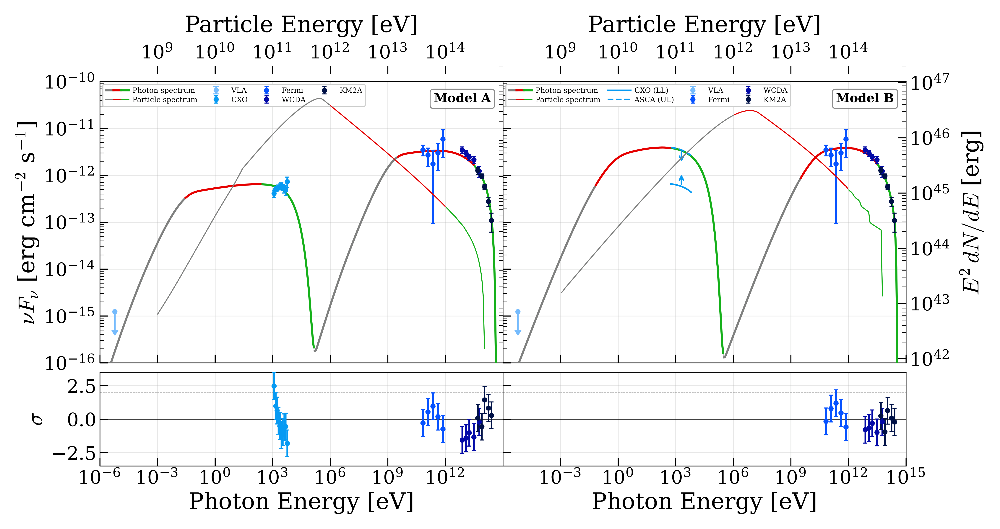
图注：Broadband spectral energy distribution of the J0007 PWN. Data include the VLA upper limit (UL) \(\citep{2013ICRC...33.2656G},\) CXO data (this work), Fermi-LAT SED points (this work), LHAASO WCDA and KM2A fluxes \(\citep{2025SCPMA..6879503L}.\) The CXO 0.5--7~keV lower limit and ASCA 0.5--7~keV upper limit used to constrain Model B are shown as blue curves with arrows indicating the bound direction. The thick (thin) curve indicates the photon (particle) spectrum of the best-fit one-zone dynamical evolution model \(\citep{2009ApJ...703.2051G}\) for Model A (left, post-compression) and Model B (right, pre-compression), with corresponding parameters listed in Table~\(\ref{tab:model_pars_cta1}.\) The photon spectra are colored so that the corresponding colors in the particle spectra indicate the particles contributing most of the photon flux at a given energy. The CXO 0.5--7~keV lower limit and ASCA 0.5--7~keV upper limit used to constrain Model B are shown as blue curves with arrows indicating the bound direction. Bottom panels show the model residuals.
对应解读：模型拟合与宽带SED解读：一-zone动力学演化模型、Model A/Model B、X射线上下限约束以及残差诊断。
入选理由：该图同时给出VLA、CXO、Fermi-LAT、LHAASO数据，展示最佳拟合光子谱和粒子谱，并包含底部残差，是检验论文关于低磁场、PeV电子截止能量和不同演化情景结论的最核心模型图。
来源与置信度：\(arxiv_source\)；high；\(arxiv_source\) / main.tex:figure[10]
Fig09
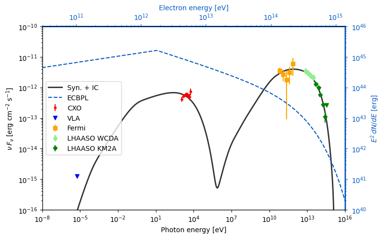
图注：Broadband SED of the J0007 PWN modeled with Naima. The data shown include the VLA upper limits (ULs) \(\citep{2013ICRC...33.2656G},\) CXO data (this work), Fermi (this work), and LHAASO \(\citep{2025SCPMA..6879503L}.\) The sum of the synchrotron and IC radiative models is shown by the solid black line, corresponding to the bottom and left axes. The input ECBPL electron population model for the radiative models is shown by the blue dashed line, corresponding to the right and top axes.
对应解读：宽带SED与Naima轻子模型：同步辐射、IC辐射和输入电子谱。
入选理由：该图直接对应摘要中一-zone leptonic SED建模得到B约1.4–3.2 μG和高电子截止能量的关键结论，且清楚显示从射电上限、Chandra、Fermi到LHAASO的多波段约束及电子种群模型。
来源与置信度：\(arxiv_source\)；high；\(arxiv_source\) / main.tex:figure[9]
Fig04
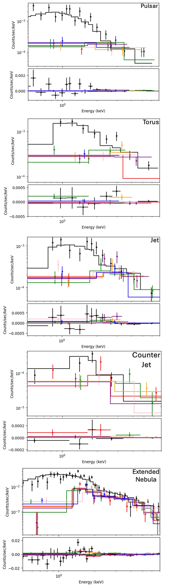
图注：CXO spectral fits.
对应解读：Chandra空间分辨光谱拟合：喷流、环面和扩展星云的光子指数差异。
入选理由：论文的重要观测结论之一是紧致喷流/环面谱硬而扩展星云较软，Fig04是直接展示CXO谱拟合质量和不同区域谱形的图，比单纯成像图更能支撑物理解释。
来源与置信度：\(arxiv_source\)；high；\(arxiv_source\) / main.tex:figure[4]
Fig01
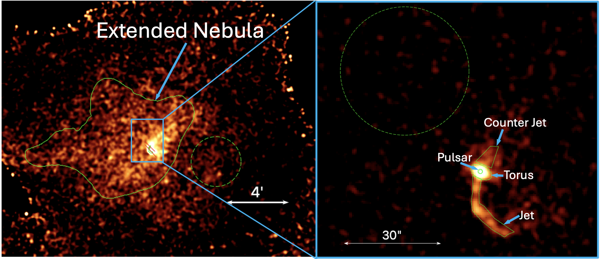
图注：Regions used for spectral extraction. Dashed green lines indicate background regions. The left panel shows the merged, exposure corrected epoch 2 image with point-sources subtracted, binned by a factor of 2 and smoothed by a Gaussian. The right panel is unbinned and smoothed by a Gaussian.
对应解读：Chandra谱提取区域与背景选择：空间分辨光谱和形态分析的数据基础。
入选理由：该图标出用于谱提取的源区和背景区，并在合并曝光校正图上显示PWN结构，是理解后续喷流、环面、扩展星云各区域光谱参数来源的必要图。
来源与置信度：\(arxiv_source\)；high；\(arxiv_source\) / main.tex:figure[1]
Fig02
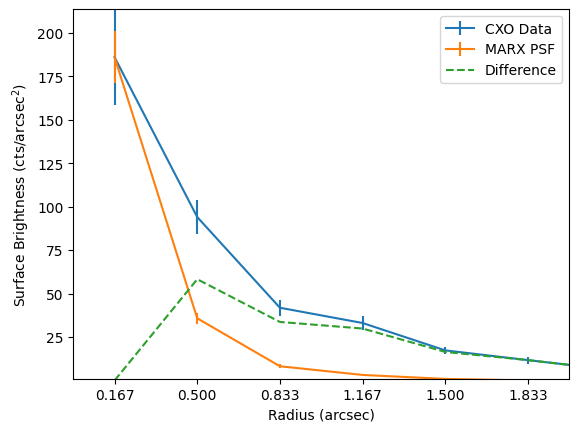
图注：Radial profile of the CXO image compared to the MARX simulation. The green dashed line shows the difference between the data and the simulated PSF.
对应解读：Chandra径向轮廓与MARX PSF模拟比较：检验紧致源外延展辐射。
入选理由：该图用观测径向轮廓与模拟PSF及差值比较，直接检验X射线辐射是否超出点源PSF，是确认PWN延展结构而非仪器效应的重要诊断图。
来源与置信度：\(arxiv_source\)；high；\(arxiv_source\) / main.tex:figure[2]
Fig05
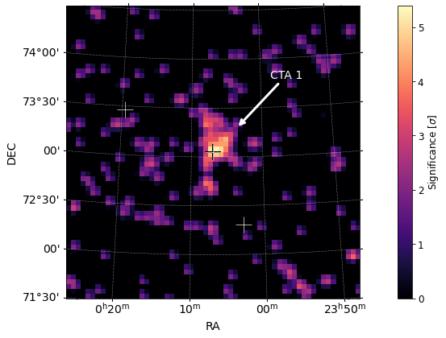
图注：TS map of the J0007 field derived from Fermi-LAT data. The color scale indicates detection significance defined as $\sqrt{TS}$. The extended emission associated with the J0007 PWN is clearly visible near the center of the field, highlighted by the white arrow.
对应解读：Fermi-LAT TS显著性图：GeV扩展辐射与J0007 PWN关联。
入选理由：该图展示J0007视场的γ射线显著性分布和中心扩展辐射位置，为后续Fermi谱点和宽带SED建模提供空间关联依据。
来源与置信度：\(arxiv_source\)；high；\(arxiv_source\) / main.tex:figure[5]
强相关工作
相似工作应从三条线索检索。第一条是 Chandra 对年轻 PWN 的形态学研究，关键词包括 “pulsar wind nebula torus jet Chandra”, “Vela PWN”, “Crab torus jet”, “PSR B1509-58 MSH 15-52”, “G21.5-0.9”。这些文献提供如何从环面/喷流推断自转轴、如何处理 Doppler boosting、以及如何用空间分辨谱判断冷却的标准方法。
第二条是 CTA 1/PSR J0007+7303 的多波段历史观测，关键词包括 “CTA 1 supernova remnant”, “PSR J0007+7303 gamma-ray pulsar”, “CTA 1 PWN Fermi LAT”, “CTA 1 TeV LHAASO”。重点看前人给出的距离、年龄、SNR 环境、GeV/TeV 扩展源归属和射电上限，因为本文 SED 拟合中的 \(B\)、\(E_{\rm cut}\) 和总能量都依赖这些外部信息。
第三条是 PWN 宽带 SED 与演化模型基础工作，关键词包括 “one-zone PWN evolution model”, “Naima leptonic model”, “PWN PeVatron”, “reverberation compression PWN”。这些工作帮助判断本文 Model A/Model B 的演化解释是否合理，并提供比较样本：哪些 PWN 也显示低磁场、高 IC/X-ray 比和 PeV 电子迹象。
可能存在张力的方向包括：γ 射线扩展辐射是否完全来自 PWN，还是可能混有 SNR 壳层强子成分；一区轻子模型是否足以描述空间上分离的 X 射线和 TeV/PeV 发射；环面视角 \(\zeta\) 与 γ 射线脉冲轮廓模型给出的 \((\alpha,\zeta)\) 区域是否一致。检索时可用 “CTA 1 hadronic leptonic”, “PWN SED degeneracy magnetic field”, “gamma-ray pulsar geometry outer gap two-pole caustic” 来找支持或挑战本文解释的文献。
相似工作：
（未提供）
基础理论 / 方法工作：
（未提供）
相反观点 / 张力线索：
（未提供）
2. On the Possibility of an Extragalactic Positron Annihilation Signal
- 来源：arXiv / astro-ph.HE
- 链接：https://arxiv.org/abs/2605.21289v1
- 作者：Thomas Siegert, Hiroki Yoneda
- 评分：novelty 7/10，importance 8/10，relevance 9/10，final 9.05/10
- 推荐理由：基于INTEGRAL/SPI 511 keV图讨论高纬热点、局域星系和宇宙MeV背景中的正电子湮灭信号，直接属于MeV伽马射线天文学且对下一代MeV望远镜有预测意义。
中文题目：银河系外正电子湮灭信号是否已经藏在 511 keV 全天图中？
做了什么：这篇文章重新审视了 20 年 INTEGRAL/SPI 数据得到的 511 keV 正电子湮灭线全天图中若干高银纬热点：它们究竟是成像伪影、银河系前景，还是可能包含银河系外源的贡献。作者把这些热点同高速云柱密度图、25 Mpc 内 Local Volume Galaxies 星系目录以及宇宙伽马射线背景模型进行交叉比较，并估算单个近邻星系和累积宇宙学正电子湮灭辐射的通量。主要结论是：最亮的一些热点与麦哲伦流和 Complex C 等高速云位置相当吻合，暗示银河系内正电子产生率可能高于仅由常规星际介质测得的值，约达 \(10^{44}\,\mathrm{s^{-1}}\)；另一些热点可由局部体积星系的累积贡献解释。宇宙学 511 keV 湮灭对宇宙伽马背景的贡献通常可能只有百分比量级，但若注入能量较高、飞行中湮灭谱更硬或星形成率标定偏高，在数 MeV 以上可能超过 \(10\%\)。
为什么重要：511 keV 线长期被视为银河系中心和盘面正电子物理的问题，但这篇文章把它推向两个更宽的方向：第一，高银纬热点可能不全是仪器或反演伪影，而可能追踪银河系晕、高速云或近邻星系环境中的正电子；第二，正电子湮灭可能是宇宙 MeV 背景的一个非忽略成分。这会改变我们理解正电子来源、传播、湮灭环境以及下一代 MeV 望远镜科学目标的方式。
理论 / 观测 / 仪器方法价值：对观测而言，文章给出了如何用现有 SPI 成像图、气体模板和局部星系目录做交叉诊断的路线，并指出了可由下一代 MeV 仪器检验的具体源类：矮椭球星系、M31、M33 及其卫星星系。对理论而言，它把正电子注入率、飞行中湮灭、星形成率标定和宇宙背景谱联系起来，提供了从银河系内 511 keV 线到河外 MeV 背景的统一估算框架。对方法而言，它提醒读者：低信噪比全天反演图中的“热点”不能只按显著性排序，还必须结合成像响应、天空模板、源族空间分布和物理通量标度一起判断。
为什么应该关注：如果你研究高能天体物理、MeV 天文学、暗物质间接探测、近邻星系或银河系晕气体，这篇文章都值得看。它不是声称已经发现了河外 511 keV 源，而是把若干可检验的可能性摆到桌面上：现有热点中哪些更像高速云，哪些可能是局部星系叠加，哪些目标下一代仪器最该盯。MeV 波段正进入新一代任务规划期，这类工作有助于把“漂亮的全天图异常”转化为可观测、可证伪的目标清单。
展开详细解读：文章讲解、背景、理论、重点章节、图表与相关工作
文章详细讲解
科学问题：银河系 511 keV 正电子湮灭线已经由 INTEGRAL/SPI 观测了二十多年，中心核球和延展盘面成分相对稳健，但最新反演图中还出现了一些远离银道面的热点。关键问题是，这些热点是 SPI 编码孔径成像和背景建模留下的伪影，还是与真实天体结构有关。如果是真实信号，它们可能来自银河系晕或高速云中的正电子湮灭，也可能来自近邻星系，甚至提示宇宙学尺度正电子湮灭对 MeV 背景有贡献。
作者怎么做：文章采取的是多模板、半经验的排查策略。首先，他们把高银纬 511 keV 热点与高速云的中性氢柱密度图比较，重点关注南天麦哲伦流和北天 Complex C 这类大尺度结构。其次，他们用 25 Mpc 内 Local Volume Galaxies 目录估算若干天空区域内局部星系的累积 511 keV 通量，判断是否能解释部分热点。再次，他们构建宇宙学正电子湮灭背景的积分估算，把单个星系的湮灭光度、星形成率或正电子产生率标度、红移演化和飞行中湮灭谱合并，得到对宇宙伽马射线背景的可能贡献。
关键结果：最醒目的结果是，若干最亮热点与高速云结构在天空投影上相当接近，尤其是南天麦哲伦流和北天 Complex C。若这不是偶然或成像伪影，就意味着有一部分正电子可能在银河系晕气体或高速云界面中湮灭，银河系总正电子产生率可能需要提高到约 \(10^{44}\,\mathrm{s^{-1}}\)，高于只从传统银河星际介质成分估出的值。文章还指出，一些高银纬热点可由局部体积内多个星系的累积通量解释；未来 MeV 望远镜若达到 \(10^{-6}\) 至 \(10^{-5}\,\mathrm{ph\,cm^{-2}\,s^{-1}}\) 量级灵敏度，可能首次分辨个别河外 511 keV 源，包括若干矮椭球星系、M31、M33 及其卫星。
局限和下一步：这项工作最重要的限制是，现有 SPI 511 keV 图本身处在低信噪比、强背景、复杂反演的 regime。高银纬热点的统计独立性、试验因子、成像旁瓣和背景残差都可能影响解释。高速云或局部星系的空间符合也不能直接证明物理关联，因为 511 keV 图的角分辨率有限，且大尺度结构之间容易产生投影巧合。下一步最需要的是用独立成像算法、不同时间段数据、替代背景模型和下一代 MeV 仪器进行复核；同时还要建立更物理的正电子注入、传播、冷却和湮灭模型，检验高速云界面或近邻矮星系是否真的能维持所需正电子功率。
背景知识
511 keV 线来自低能正电子与电子湮灭，既可以直接产生两光子线，也可以先形成正电子素再产生线和三光子连续谱。银河系 511 keV 辐射最著名的观测特征是强核球成分和较弱但存在的盘面成分。几十年来，核心难题不是线的微观物理，而是天体物理来源：正电子究竟主要来自 \(^{26}\mathrm{Al}\)、\(^{44}\mathrm{Ti}\)、\(^{56}\mathrm{Ni}\) 等放射性核素，还是 X 射线双星、脉冲星、微类星体、超新星、暗物质或其他机制。
INTEGRAL/SPI 是目前 511 keV 全天研究的关键仪器，因为它兼具 MeV 波段谱分辨能力和长期巡天积累。但 SPI 的成像不是光学照相式成像，而是编码孔径加多探测器响应反演；背景强、曝光不均匀、角分辨率有限，所以弱源和弥散结构的识别高度依赖背景模型与反演算法。最新长时标数据能够画出更细致的 511 keV 图，但图上高银纬热点的真实性也更难简单判断。
把高银纬热点与高速云联系起来，是因为高速云代表银河晕和河外气体相互作用的界面。麦哲伦流来自麦哲伦云系统与银河系潮汐和流体相互作用，Complex C 则是北天著名高速中性氢结构。如果正电子可以逃离盘面、在晕中传播并于冷中性气体或电离气体界面冷却湮灭，那么这些气体结构可能成为 511 keV 辐射的可见靶区。这一思路与只把 511 keV 看作核球或盘面源分布问题的传统视角不同。
现在重新看这个问题的原因有两个。第一，20 年 SPI 数据让低表面亮度结构的讨论至少有了经验基础，即便还不能定论。第二，AMEGO、e-ASTROGAM、COSI 类下一代 MeV 任务概念正在推动从“银河 511 keV 图”走向“河外 511 keV 源搜寻”。若近邻星系或矮星系通量真的可达 \((1\text{--}2)\times10^{-5}\,\mathrm{ph\,cm^{-2}\,s^{-1}}\)，它们会成为非常具体的观测目标。
该领域常见误区包括：把 511 keV 光子等同于正电子刚产生的位置；忽视正电子在湮灭前可能经历长距离传播、冷却和介质相变；把低显著性热点当作点源发现；以及把宇宙 MeV 背景中所有未解释成分都归因于单一源族。本文的价值恰在于把这些可能性拆开：高银纬热点可能是伪影，可能是银河晕气体，也可能是近邻星系，还可能是多个小贡献的叠加。
基础理论 / 方法脉络
基础图像是：亚相对论或相对论正电子注入星际介质后，通过库仑散射、电离、激发、逆康普顿和轫致辐射等过程损失能量；当它们降到热能附近，就可能与电子直接湮灭或形成正电子素。直接湮灭和仲态为对仲正电子素的衰变产生窄的 511 keV 线，正正电子素三光子衰变产生低于 511 keV 的连续谱。线宽和连续谱比例反映湮灭介质的温度、电离度和正电子素形成分数。
对天体源来说，最核心的量不是单个正电子的能量，而是正电子产生率、逃逸率和湮灭位置。一个源类可产生大量正电子，但若正电子被困在热稠密区域、或以高能逃逸并在远处湮灭，其 511 keV 形态会与源分布不同。因此，把 511 keV 图同气体图或星系目录比较，本质上是在区分“产生位置模板”和“湮灭靶区模板”。高速云相关解释更接近后者：正电子可能不是在云中产生，而是在云或云周围界面湮灭。
本文对近邻星系的估算通常需要把星系的某个可观测代理量转成湮灭光度。常用代理包括星形成率、恒星质量、超新星率或已知银河系 511 keV 光度标定。若假定某星系正电子产生率与星形成率成正比，则距离较近、星形成活跃或具有特殊环境的星系更容易成为可探测源。矮椭球星系的意义则更微妙：它们星形成弱，但暗物质含量高、背景低，因此在暗物质或非常规正电子来源场景下格外受关注。
宇宙背景部分的物理逻辑是把所有红移处星系的湮灭谱叠加。511 keV 线会因宇宙学红移被展宽成低能背景；飞行中湮灭和其他高能辐射则可在 MeV 以上留下更硬的连续谱。这里的关键退化在于：同一个背景强度可以由较高的单星系正电子产额、较强的星形成率演化、较硬的注入谱或更高的飞行中湮灭比例共同造成。反过来，宇宙伽马背景的现有测量误差和前景扣除也限制了我们能给出的结论强度。
观测方法上必须记住 SPI 511 keV 图不是简单计数图。每个天空像素的强度来自仪器响应、时间变背景、曝光模式和正则化反演共同决定。高银纬热点尤其容易受到曝光边缘、强源旁瓣、背景线残差和模板不完备的影响。因此，对本文结论最合理的读法不是“已经探测到河外 511 keV 源”，而是“给出了若干与物理模板相符、值得下一代仪器定点验证的候选解释”。
公式与推导
第一步从湮灭光度和正电子产生率的关系出发。若某区域稳态中正电子注入率为 \(\dot{N}_{e^+}\)，逃逸和储存项可忽略，则湮灭率近似满足
这里 \(\dot{N}_{\rm ann}\) 是每秒发生的正电子湮灭数。这个稳态假设要求正电子冷却与湮灭时间短于源族演化或观测平均时间；若正电子在晕中长距离传播，则空间分布会变，但全局数率仍可近似守恒。
第二步把湮灭率转成 511 keV 线光子产额。设正电子素形成分数为 \(f_{\rm Ps}\)，直接湮灭和对仲正电子素都会产生两条 511 keV 光子，而正正电子素产生三光子连续谱，则每次湮灭产生的线光子数可写为
因此 511 keV 线光子光度为
这里 \(L_{511}\) 的单位是 \(\mathrm{ph\,s^{-1}}\)，它直接连接正电子物理和可观测通量。
第三步，对距离为 \(D\) 的近邻星系，若可视为点源或弱延展源，观测到的积分线通量为
这个式子解释了为什么 M31、M33、局部体积矮星系和近邻卫星系统特别重要：即便本征光度不极端，较小的 \(D\) 也会显著提高 \(F_{511}\)。若源延展角尺度大于仪器点扩散函数，表面亮度而非总通量会成为探测限制。
第四步，若把星系正电子产额同星形成率标定，可写成
其中 \(\eta_{+}\) 表示单位星形成率对应的正电子注入率，单位可取 \(\mathrm{s^{-1}}\,(M_\odot\,yr^{-1})^{-1}\)。这个经验式把核合成、超新星、致密天体和年轻恒星族贡献压缩到一个参数中；它的风险是忽略老年恒星族、暗物质或环境依赖。
第五步，对一片天空区域内多个局部星系的叠加通量，可求和为
其中 \(i\) 标记星系，\(D_i\) 是距离，\(W_i\) 是仪器响应、区域选择和源延展修正。本文用这类思想判断 Local Volume Galaxies 是否能解释某些热点。若 \(W_i\) 或目录完备性处理不当，累积通量会产生系统偏差。
第六步，对高速云相关情形，更自然的量是沿视线的湮灭发射率积分。若体发射率为 \(j_{511}(\mathbf{r})\)，则方向 \(\hat{\mathbf{n}}\) 上的强度为
若假设湮灭率与气体柱密度 \(N_{\rm H}\) 和正电子通量有关，则热点与 \(N_{\rm H}\) 高值区域的空间相关性就是一个可检验诊断，但这种相关性不能自动证明因果关系。
第七步，宇宙学背景强度可由共动体发射率 \(\epsilon(E',z)\) 积分得到
这里 \(E\) 是观测能量，\(E'=E(1+z)\) 是发射能量，\(H(z)\) 是哈勃参数。窄 511 keV 线会被红移映射到 \(E<511\,\mathrm{keV}\) 的连续背景，而飞行中湮灭可在 MeV 区间贡献更宽的谱。
第八步，若要与宇宙伽马射线背景比较，可定义能量相关的贡献比例
当 \(f_{\rm CGB}(E)\sim 0.01\) 时是百分比级次要成分；若在数 MeV 以上 \(f_{\rm CGB}(E)\gtrsim 0.1\)，就会成为背景建模和 MeV 源族统计中的重要项。本文强调这个比例强烈依赖正电子注入能量和飞行中湮灭谱。
第九步，对热点显著性的基本统计诊断，可用泊松似然或近似高斯残差表示。若观测计数为 \(n_k\)，模型计数为 \(\mu_k(\boldsymbol{\theta})\)，则
这里 \(k\) 可表示探测器、能道和时间 bin，\(\boldsymbol{\theta}\) 包括天空强度和背景参数。比较加入某一模板前后的 \(2\Delta\ln\mathcal{L}\) 可评估模板是否改善拟合，但还必须考虑试验因子和系统误差。
模型拟合 / 应用方法
这类工作的拟合对象首先是 SPI 观测计数，而不是最终图片本身。原始数据可按能道、探测器和时间分箱，模型由天空 511 keV 分布经过仪器响应卷积后加上强仪器背景线组成。拟合参数包括不同天空模板的归一化、背景时间变化系数、线宽或谱形参数，以及可能的点源或热点强度。由于背景远强于天体 511 keV 信号，背景参数的自由度和先验会直接影响高银纬残差。
本文更接近二级分析：它使用已有 511 keV 图或热点结果，再与高速云柱密度图和 Local Volume Galaxies 目录做物理解释。因此拟合思路可理解为模板相关和通量预算。对高速云，应检查 511 keV 强度是否随 \(N_{\rm H}\)、速度成分或云边界增强而变化；对局部星系，应把星系距离、星形成率、恒星质量或其他代理量转成预期 \(F_{511}\)，再同热点区域积分通量比较。
参数退化非常多。正电子产生率 \(\dot{N}_{e^+}\)、正电子素分数 \(f_{\rm Ps}\)、逃逸比例、源距离、源延展和仪器响应都可改变同一个观测通量。对宇宙背景而言，星形成率密度演化、单星系正电子产额、注入能量谱和飞行中湮灭概率也相互退化。仅凭当前 CGB 总谱很难唯一分解出正电子湮灭成分，必须依靠谱形、各向异性和与星系大尺度结构的相关性。
残差诊断应重点看三类量：第一，热点是否在不同时间段、不同背景模型和不同反演正则化下稳定存在；第二，加入高速云或局部星系模板后，残差是否在空间上系统性降低，而不仅仅改善一个孤立像素；第三，拟合改善是否超过同等自由度的随机模板或旋转模板。若只展示位置重合而没有这类反事实检验，证据强度应被视为提示性而非发现性。
系统误差方面，SPI 的 511 keV 仪器背景线、曝光非均匀、编码孔径旁瓣、强银河中心信号泄漏和天空模板不完备都是主要风险。Local Volume Galaxies 目录也有选择效应：低表面亮度矮星系、银道面遮挡区域和距离估计误差会影响叠加通量。高速云图则涉及不同速度切片和电离气体未被 \(\mathrm{H\,I}\) 完整追踪的问题。
实际应用上，这篇文章最有用的是给下一代 MeV 仪器生成优先目标和检验指标。若某候选矮星系预期通量接近 \(10^{-5}\,\mathrm{ph\,cm^{-2}\,s^{-1}}\)，观测设计就要估算所需曝光、线灵敏度、源延展和附近前景。若 M31 或 M33 的通量只有几 \(10^{-6}\,\mathrm{ph\,cm^{-2}\,s^{-1}}\)，则需要把点源探测、盘面延展模板和本底控制结合起来，而不能只按目录位置做盲搜。
重点章节 / 结果段落怎么读
-
引言和问题设置：应重点读作者如何界定“高银纬热点”的性质。他们没有把热点直接当作发现，而是列出三种解释：成像伪影、银河系晕或高速云相关信号、河外局部星系贡献。读者应注意作者如何引用 Yoneda 等人 2025 年的 SPI 全天图，以及他们对当前图像可靠性的保守程度。
-
高速云比较部分：这一部分是全文最具体的空间相关检验。读者应查看热点与麦哲伦流、Complex C 等 \(\mathrm{H\,I}\) 高速云结构的相对位置，判断这种对应是云主体、边缘还是局部峰值的对应。还应留意作者是否讨论了速度选择、柱密度阈值和银道面遮挡，因为这些会影响模板相关结论。
-
Local Volume Galaxies 目录分析：这里应关注作者如何从 25 Mpc 内星系目录估算 511 keV 通量，是用星形成率、星系类型、距离还是银河系标定。读者应特别检查少数近邻大星系与大量弱矮星系在叠加通量中的相对权重，以及热点区域是否被一两个对象主导。
-
宇宙伽马背景贡献估算：这一节连接局部 511 keV 源和宇宙学 MeV 背景。读者应看清作者采用的本征湮灭谱，包括窄线、正电子素连续谱和飞行中湮灭成分；还要检查星形成率演化或单星系正电子产额的归一化如何影响 \(f_{\rm CGB}(E)\)。
-
讨论和未来仪器展望：这是评估文章价值的关键。作者提出下一代 MeV 望远镜可能识别个体河外 511 keV 源，并列出矮椭球星系、M31、M33 及卫星等候选。读者应把这些预测当作可证伪清单：哪些目标通量最高，哪些受前景最小，哪些最能区分普通恒星源和暗物质或非常规源。
建议重点查看的图表
-
511 keV 全天图或热点图：重点看高银纬热点的位置、角尺度、显著性和是否靠近曝光或重建不稳定区域。不要只看颜色最亮处，还要看色标、平滑尺度和误差图。
-
高速云柱密度叠加图：重点检查麦哲伦流和 Complex C 与 511 keV 热点是否在形态上重合，还是只有大致方向相近。若有速度切片，应看不同速度范围下相关性是否稳定。
-
Local Volume Galaxies 位置与通量权重图：重点看候选星系是否集中在热点区域，以及预期通量是由少数近邻星系统治，还是许多弱源累积。还要注意银道面附近目录不完备区域。
-
单个候选河外源通量排序表或柱状图：重点看哪些目标达到 \((1\text{--}2)\times10^{-5}\,\mathrm{ph\,cm^{-2}\,s^{-1}}\)，哪些只有几 \(10^{-6}\,\mathrm{ph\,cm^{-2}\,s^{-1}}\)。这些数值决定下一代仪器能否实际检验。
-
宇宙伽马背景谱贡献图：重点看 \(I(E)\) 或 \(E^2 I(E)\) 中正电子湮灭成分相对观测 CGB 的比例，尤其是数 MeV 以上是否可达 \(10\%\)。需要区分窄线红移贡献和飞行中湮灭连续谱。
-
残差或稳健性诊断图：若论文提供不同模板或不同假设下的残差，应重点看加入高速云或 LVG 模板后残差是否整体降低。单个热点改善不如跨区域一致改善有说服力。
关键图表逐图导读
图 1：若为 SPI 511 keV 全天图，横轴通常是银经，纵轴是银纬，颜色表示 511 keV 线强度或重建通量。读图时先确认中心核球和盘面是否占据主导，再看高银纬热点的相对亮度。陷阱是平滑尺度会把噪声相关化，颜色峰值不等于独立显著探测。
图 2：若为 511 keV 热点与高速云 \(\mathrm{H\,I}\) 柱密度的叠加图，坐标同样多为银道坐标，背景颜色可能是 \(N_{\rm H}\)，等值线或标记表示 511 keV 强度。关键是看麦哲伦流和 Complex C 的空间延展是否与热点形态相符。读图陷阱是大尺度天区中“接近”很容易发生，应关注是否有定量相关或随机对照。
图 3：若为 Local Volume Galaxies 分布图，数据点通常代表 25 Mpc 内星系，点大小或颜色表示距离、星形成率或预期 \(F_{511}\)。模型结论应体现在热点区域内的加权星系密度或累积通量偏高。陷阱是未加权的星系数没有物理意义，必须看按 \(D^{-2}\) 和正电子产额加权后的贡献。
图 4：若为候选源通量排名或区域累积通量图，横轴可能是星系名称或 ROI，纵轴是 \(F_{511}\)。应关注误差条或模型带是否跨越下一代仪器灵敏度阈值。陷阱是通量预测常受 \(\eta_{+}\)、\(f_{\rm Ps}\) 和星形成率估计控制，排序未必稳健。
图 5：若为宇宙伽马射线背景贡献谱，横轴是能量 \(E\)，纵轴是强度 \(I(E)\)、\(E I(E)\) 或 \(E^2 I(E)\)，观测 CGB 数据点与若干模型线比较。关键看不同正电子注入能量和飞行中湮灭假设如何改变 MeV 以上谱形。陷阱是百分比贡献看似小，但在 MeV 背景源族分解中可能已足以影响结论。
图 6：若为残差或显著性图，应比较加入或不加入高速云、LVG 模板后的残差分布。真正有力的证据应表现为多个热点残差一致下降，而不是把一个自由参数调到某个峰。读图时要寻找负残差、边缘伪影和与曝光图相似的结构。
论文原图 / 可嵌入图片
Fig02
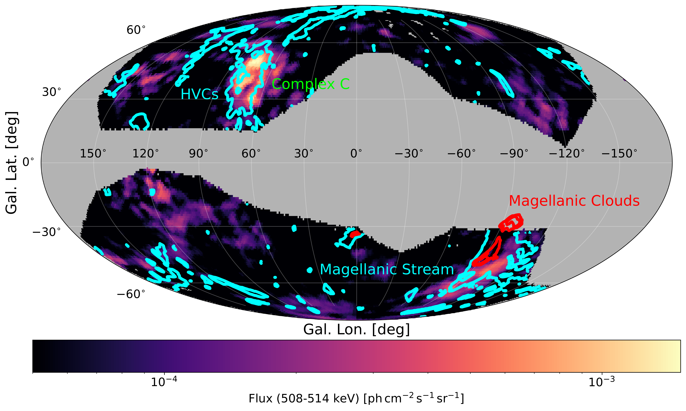
图注：RL 511\,keV map from HY25 with the bright bulge and disk regions masked out (gray) to emphasise on the low surface brightness region at high latitudes. The cyan contours show the HVCs of \(\citet{Westmeier2018_HVC}\) at a hydrogen column density of $10^{19}\,\mathrm{cm^{-2}}$. The highest column densities around the Magellanic Clouds ($(\ell,b)_{\rm LMC} = (280.5^\circ,-32.9^\circ)$, $(\ell,b)_{\rm SMC} = (302.8^\circ,-44.3^\circ)$) are indicated in red at level of $10^{20}\,\mathrm{cm^{-2}}$. The two strongest high-latitude 511\,keV regions around $(\ell_0,b_0) \sim (70^\circ, 40^\circ)$ and $(\ell_0,b_0) \sim (-100^\circ, -55^\circ)$ largely coincide with the HVC Complex C and high-density parts of the Magellanic Stream, respectively. Other 511\,keV emission regions may be associated with LVGs (see Fig.\,\ref{fig:regions}).
对应解读：对应“建议重点查看的图表”第2项和“关键图表逐图导读”图2：511 keV 热点与高速云 H I 柱密度叠加图。
入选理由：这是检验论文核心主张的最关键图：直接把 HY25 的高银纬 511 keV 低表面亮度结构与 HVC 等值线叠加，并在图注中明确指出北天 Complex C 与南天麦哲伦流高柱密度区域分别对应两个最强高银纬 511 keV 区域。相比单独全天图，它同时展示热点位置、掩膜后的前景处理和高速云形态重合，是日报中关于“形态重合还是方向相近”的核心诊断。
来源与置信度：\(arxiv_source\)；high；\(arxiv_source\) / main.tex:figure[2]
Fig07
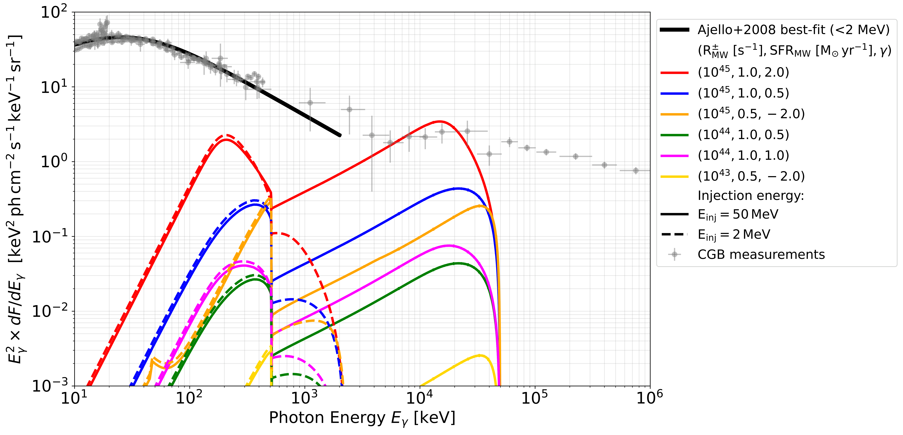
图注：Cosmological positron annihilation signal assuming Eq.\,(\ref{eq:cosmo511}) for different assumptions on the total Galactic positron production (= pair annihilation) rate, $R_{\rm MW}^\pm$, different Galactic SFRs, $\mathrm{SFR}_{\rm MW}$, and dependencies on the SFR history, $\gamma$. Two different but generic positron injection energies are shown. The Ps fraction is set to $f_{\rm Ps} = 0.92$ in both cases. We note that this is not the only contribution to the cosmological positron annihilation spectrum and only assumes some link to SFR. Isotropic Galactic contributions are ignored.
对应解读：对应“建议重点查看的图表”第5项和“关键图表逐图导读”图5：宇宙伽马射线背景中宇宙学正电子湮灭贡献谱。
入选理由：该图直接展示不同银河正电子产生率、银河 SFR、SFR 演化指数和正电子注入能量假设下的宇宙学正电子湮灭信号，是判断其对 CGB 是否为百分之一级或在数 MeV 以上可能超过 10% 的主要依据。它比位置叠加图更能支撑日报中关于红移窄线、飞行中湮灭连续谱和模型退化的讨论。
来源与置信度：\(arxiv_source\)；high；\(arxiv_source\) / main.tex:figure[7]
Fig06
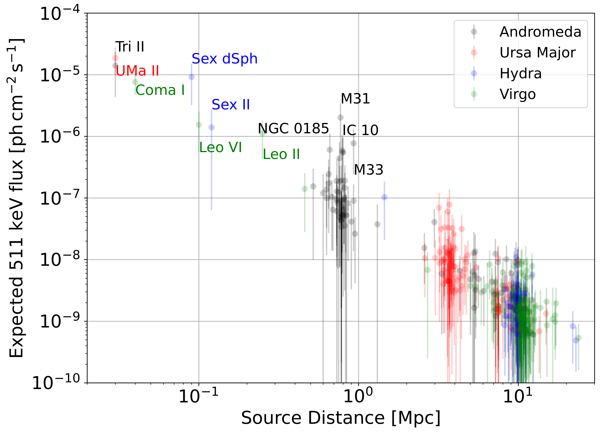
图注：Expected 511\,keV fluxes from individual sources within the bright regions in the study. The fluxes originate from a Bayesian hierarchical decomposition assuming a relation with a galaxy's blue-band luminosity, Eq.\,(\ref{eq:BHM}). Sources with an expected flux stronger than $10^{-6}\,\mathrm{ph\,cm^{-2}\,s^{-1}}$ are named.
对应解读：对应“建议重点查看的图表”第4项和“关键图表逐图导读”图4：单个候选河外源的预期 511 keV 通量排序。
入选理由：图中给出明亮区域内单个源的预期 511 keV 通量，并标出超过 10^-6 ph cm^-2 s^-1 的目标，正好支撑日报中关于哪些矮星系、M31/M33 或卫星星系可能达到下一代 MeV 仪器灵敏度的讨论。它把空间相关性转化为可观测通量预算，因此对后续观测可检验性最重要。
来源与置信度：\(arxiv_source\)；high；\(arxiv_source\) / main.tex:figure[6]
Fig05
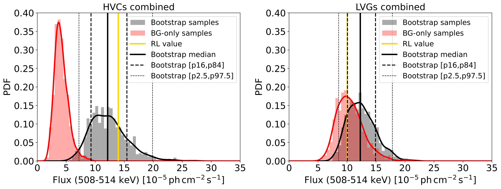
图注：Bootstrapping samples for the combined regions of HVCs (Complex C \& Magellanic Stream; left) and selected LVGs (Andromeda, Ursa Major, Hydra \& Virgo; right). Shown are the samples for the entire dataset (gray histogram) and background-only (red), together with the 68.3 (dashed) and 95.4\% (dotted) confidence intervals and the true RL value (gold vertical line).
对应解读：对应“建议重点查看的图表”第6项和模型拟合/残差稳健性段落：HVC 与 LVG 区域的 bootstrap 显著性诊断。
入选理由：虽然不是传统残差图，但它提供了整合 HVC 区域和 LVG 区域的 bootstrap 分布、背景-only 对照、68.3%/95.4% 置信区间以及真实 RL 值，是候选图中最接近统计稳健性检验的图。它能帮助判断热点关联是否超出背景波动，而不仅是目视位置重合。
来源与置信度：\(arxiv_source\)；high；\(arxiv_source\) / main.tex:figure[5]
Fig03
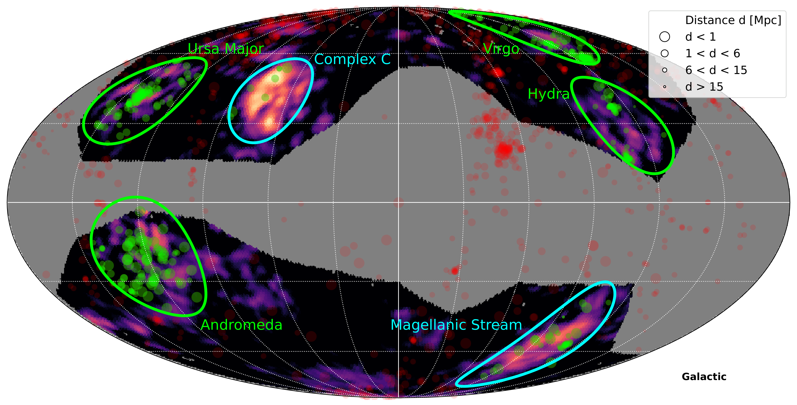
图注：Selected regions in this study (ellipses) on top of the masked HY25 511\,keV map. We show the distribution of all known ($\sim 1600$) LVGs up to a distance of 30\,Mpc in red outside, and green inside the LVG regions (green). Distance intervals are indicated as marker sizes.
对应解读：对应“建议重点查看的图表”第3项和“关键图表逐图导读”图3：Local Volume Galaxies 在 511 keV 热点区域中的分布。
入选理由：该图在掩膜后的 511 keV 图上叠加 30 Mpc 内约 1600 个 LVG，并用椭圆标出研究区域、用点大小表示距离区间。它直接支撑日报中关于热点区域是否包含局部星系过密或累积贡献的讨论，也提示需要注意距离加权和目录选择效应。
来源与置信度：\(arxiv_source\)；high；\(arxiv_source\) / main.tex:figure[3]
Fig01
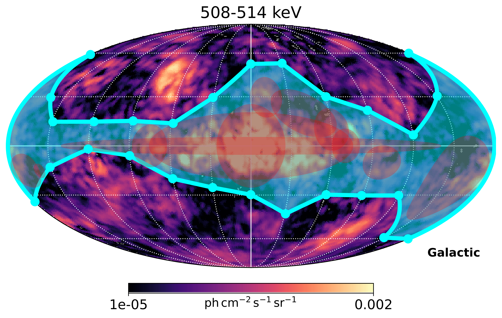
图注：{RL 511\,keV map from HY25 in Mollweide projection with high contrast and reduced lower threshold. The masked region (cyan) is chosen to remove the Galactic bulge, thin and thick disk, nearby massive star regions such as Scorpius Centaurus ($\Delta\ell \approx [290^\circ,360^\circ]$, $\Delta b \approx [-10^\circ,+30^\circ]$), Orion-Eridanus ($[180^\circ,230^\circ]$, $[-50^\circ,-5^\circ]$), Taurus ($[160^\circ,180^\circ]$, $[-25^\circ,-5^\circ]$), Perseus ($[155^\circ,165^\circ]$, $[-25^\circ,-15^\circ]$), Vela ($[245^\circ,280^\circ]$, $[-25^\circ,+5^\circ]$), Carina ($[285^\circ,295^\circ]$, $[-5^\circ,+5^\circ]$), and Cygnus ($[70^\circ,90^\circ]$, $[-10^\circ,+10^\circ]$), plus a margin of a few degrees to take into account the surrounding HI regions. The lower threshold defines the cut regions.}
对应解读：对应“建议重点查看的图表”第1项和“关键图表逐图导读”图1：HY25 511 keV 全天图及高银纬热点识别。
入选理由：这是后续所有叠加和区域选择的基础图，展示高对比度 RL 511 keV 全天图、掩膜区域以及被排除的银河核球、盘面和附近恒星形成区。它有助于读者先确认高银纬热点相对于主导银河成分的位置和掩膜策略，但相较 Fig02 缺少 HVC 或 LVG 的物理关联信息，因此排序稍低。
来源与置信度：\(arxiv_source\)；high；\(arxiv_source\) / main.tex:figure[1]
强相关工作
这篇工作直接延续了 INTEGRAL/SPI 对银河系 511 keV 线的长期研究传统。相关基础文献包括早期 SPI 发现强核球成分、后续核球加盘面模型、正电子素分数和线宽测量，以及近年更长曝光的全天成像。建议检索关键词包括 “INTEGRAL SPI 511 keV positron annihilation Galactic bulge disk”, “Yoneda 2025 511 keV map”, “positron annihilation high latitude hotspots”。
它也与宇宙 MeV 背景和河外 511 keV 源预测有关。类似工作通常讨论 Ia 型超新星正电子逃逸、星形成星系 MeV 辐射、暗物质轻质量湮灭或衰变产生正电子、以及 M31 或矮星系中的 511 keV 线可探测性。建议检索 “extragalactic 511 keV emission”, “cosmic gamma-ray background MeV positron annihilation”, “in-flight annihilation constraints”, “dwarf spheroidal 511 keV line”。
潜在张力来自两个方向：一方面，传统银河系 511 keV 线模型通常强调核球和盘面，未必需要强高银纬正电子湮灭；另一方面，CGB 在 MeV 波段的测量和前景扣除本身存在历史系统误差，给任何新成分留下空间但也限制了强结论。相反观点会认为这些热点更可能是 SPI 成像和背景残差，而非真实河外源；因此最重要的检验是独立仪器复现和模板稳健性。
相似工作：
- https://arxiv.org/abs/2605.21289
- https://ui.adsabs.harvard.edu/search/q=extragalactic%20511%20keV%20positron%20annihilation
- https://ui.adsabs.harvard.edu/search/q=cosmic%20gamma-ray%20background%20MeV%20positron%20annihilation
基础理论 / 方法工作：
- https://ui.adsabs.harvard.edu/search/q=INTEGRAL%20SPI%20511%20keV%20Galactic%20bulge%20disk
- https://ui.adsabs.harvard.edu/search/q=positronium%20fraction%20511%20keV%20INTEGRAL%20SPI
- https://ui.adsabs.harvard.edu/search/q=Galactic%20positron%20annihilation%20511%20keV%20review
相反观点 / 张力线索：
- https://ui.adsabs.harvard.edu/search/q=511%20keV%20line%20imaging%20artefacts%20SPI%20background
- https://ui.adsabs.harvard.edu/search/q=MeV%20cosmic%20gamma-ray%20background%20systematic%20uncertainties
- https://ui.adsabs.harvard.edu/search/q=in-flight%20positron%20annihilation%20constraints%20511%20keV
3. Thermal Structure and Chemical Enrichment of the North and South Polar Spurs: Supersolar N/O and Ne/O in the X-ray Plasma
- 来源：arXiv / astro-ph.HE
- 链接：https://arxiv.org/abs/2605.20335v1
- 作者：Anjali Gupta, Smita Mathur, Joshua Kingsbury, Anthony Taylor, Sanskriti Das, Joy Bhattacharya, Manami Roy, Yair Krongold
- 评分：novelty 8/10，importance 8/10，relevance 8/10，final 9.00/10
- 推荐理由：对NPS/SPS进行统一XMM/Suzaku/Chandra X射线谱分析，给出距离、双温等离子体和超太阳N/O、Ne/O证据，支持其为银河泡两侧边缘；与弥散高能结构和银河中心反馈相关，值得读。
中文题目：北、南极刺的热结构与化学富集：X 射线等离子体中的超太阳 \(\mathrm{N/O}\) 与 \(\mathrm{Ne/O}\)
做了什么：这篇论文用统一流程重分析 \(Suzaku\)、\(XMM\text{--}Newton\) 档案数据，并加入新的 \(Chandra\) 观测，研究北极刺 \(\mathrm{NPS}\) 和南极刺 \(\mathrm{SPS}\) 的弥散 X 射线谱。作者发现 \(\mathrm{NPS}\) 发射被中性星际介质充分吸收，说明它不在本地热泡或近邻超新星遗迹内，而是位于银河盘之后。谱需要两个热等离子体温度成分：\(kT\approx 0.2\,\mathrm{keV}\) 的温热相和 \(kT\approx 0.4\text{--}0.5\,\mathrm{keV}\) 的较热相。最关键的结果是温热相中 \(\mathrm{N/O}=3.6\pm0.3\) 倍太阳、\(\mathrm{Ne/O}=1.9\pm0.1\) 倍太阳；\(\mathrm{SPS}\) 外侧视线也显示相似吸收、温度和超太阳丰度比。作者据此认为 \(\mathrm{NPS}\) 与 \(\mathrm{SPS}\) 很可能是银河泡双极壳层的两侧边缘，且其化学组成指向恒星反馈对银河泡形成的重要贡献。
为什么重要：\(\mathrm{NPS}\) 的距离和起源是几十年的老问题：它究竟是太阳附近的超新星遗迹、局部超泡，还是银河中心尺度外流的一部分？这篇文章的重要性在于把“距离”和“化学指纹”两个证据放在一起：完全吸收的软 X 射线谱排除了很近的前景解释，而 \(\mathrm{N/O}\) 与 \(\mathrm{Ne/O}\) 的超太阳比值把它与银河泡其他明亮壳层联系起来。
理论 / 观测 / 仪器方法价值：对理论而言，这给银河泡能量来源提供了丰度约束：若壳层含有显著恒星反馈富集物质，纯活动星系核式爆发或纯激波扫起模型就要解释这些化学比值。对观测而言，论文展示了如何用多台 X 射线望远镜的弥散谱、吸收柱密度、两温模型和元素线比来区分本地前景与银河尺度结构。对方法而言，它强调弥散 X 射线背景建模中前景、仪器背景和吸收模型的一致处理会直接影响物理结论。
为什么应该关注：如果你关心银河系中心反馈、Fermi bubbles/eROSITA bubbles、热气体金属富集或弥散 X 射线谱建模，这篇都值得读。它不是简单又测了一条视线，而是把 \(\mathrm{NPS}\)、\(\mathrm{SPS}\) 与银河泡壳层放进同一物理图像中：温度、吸收和丰度都指向一个更大尺度的双极结构。未来 \(XRISM\)、\(Athena\) 或更高分辨率软 X 射线谱仪要检验银河反馈模型，这类丰度测量会是关键基准。
展开详细解读：文章讲解、背景、理论、重点章节、图表与相关工作
文章详细讲解
科学问题：北极刺 \(\mathrm{NPS}\) 是全天软 X 射线图中最显眼的弧状结构之一，但它的物理身份长期不清。若它距离很近，它可能只是太阳附近几百秒差距尺度的超新星遗迹或本地超泡边缘；若它位于银河盘之后并延伸到银河中心方向，它就可能是银河泡双极外流的近侧壳层。两种解释对应完全不同的能量尺度、年龄、驱动源和银河生态意义。因此，论文核心问题不是“\(\mathrm{NPS}\) 是否亮”，而是“它在哪里、由什么气体组成、与 \(\mathrm{SPS}\) 和银河泡是否同源”。
作者怎么做：作者把 \(Suzaku\)、\(XMM\text{--}Newton\) 的档案观测和新的 \(Chandra\) 观测放进统一谱分析框架。对弥散 X 射线而言，关键不是单个光子计数，而是能否正确分离本地前景、银河晕/泡发射、宇宙 X 射线背景、太阳风电荷交换和仪器背景。论文用热等离子体模型拟合 \(\mathrm{NPS}\) 视线，并检查吸收是否作用于目标发射成分。若发射位于本地中性气体之前，就不应被全银河中性氢柱密度充分吸收；若发射位于银河盘之后，则软 X 射线低能端会受到明显光电吸收。
关键结果：\(\mathrm{NPS}\) 发射被中性星际介质充分吸收，这一点直接削弱了本地超新星遗迹或邻近超泡解释。谱形不能用单温等离子体充分描述，而需要两个碰撞电离平衡热成分：温热相约为 \(kT\approx0.2\,\mathrm{keV}\)，较热相约为 \(kT=0.4\text{--}0.5\,\mathrm{keV}\)。对应发射量约为 \((41.8\pm4.9)\times10^{-3}\,\mathrm{cm^{-6}\,pc}\) 和 \((12.9\pm2.2)\times10^{-3}\,\mathrm{cm^{-6}\,pc}\)。最具判别力的是温热相丰度比：\(\mathrm{N/O}=3.6\pm0.3\) 倍太阳，\(\mathrm{Ne/O}=1.9\pm0.1\) 倍太阳；南极刺外侧 \(Suzaku\) 视线也给出 \(\mathrm{N/O}=2.9\pm0.4\)、\(\mathrm{Ne/O}=1.6\pm0.2\) 的相似超太阳比。
局限和下一步：这些结论依赖低分辨率 CCD X 射线谱对多成分弥散背景的分解，元素丰度尤其容易与温度结构、吸收柱密度、太阳风电荷交换和仪器背景耦合。论文已经通过多望远镜和统一分析增强稳健性，但真正判定气体速度、非平衡电离、线宽和多温分布，还需要微量热计级别的谱分辨率。下一步应把 \(\mathrm{NPS}\)、\(\mathrm{SPS}\)、eROSITA bubbles 与 Fermi bubbles 的多波段形态、速度场和丰度图连起来，检验恒星形成驱动、活动星系核爆发驱动或混合反馈模型各自能否同时解释温度、发射量和 \(\mathrm{N/O}\)、\(\mathrm{Ne/O}\) 比值。
背景知识
研究对象 \(\mathrm{NPS}\) 是从射电到软 X 射线都非常突出的巨大弧状结构，在银河坐标中从银河面附近向高纬延伸。它在 ROSAT 全天软 X 射线图中尤其显眼，也与 Loop I、局部泡、银河中心外流等概念长期纠缠。\(\mathrm{SPS}\) 则位于南天，对应形态更弱、更难观测，但若南北两者同源，它们将自然组成双极壳层的两侧边缘。
历史争议主要来自距离不确定。早期很多解释把 \(\mathrm{NPS}\) 与本地 Loop I 超泡联系起来，认为它是近邻 OB 星协或超新星活动留下的壳层。这一解释的吸引力在于它能在较小能量预算下产生巨大角尺度结构。但 Fermi bubbles 和 eROSITA bubbles 发现后，另一个图像变得更有吸引力：\(\mathrm{NPS}\) 是银河中心尺度外流或泡壳在天空投影上的亮边缘。
观测上，软 X 射线弥散谱很难解释，因为前景和背景都很强。本地热泡、太阳风电荷交换、银河晕、银河泡壳、未分辨河外源以及粒子背景都可能贡献计数。低能 X 射线还会被中性氢和分子气体强烈吸收，因此吸收本身既是麻烦，也是距离诊断工具。若一个结构在 \(0.3\text{--}1\,\mathrm{keV}\) 的谱形显示全柱密度吸收，它通常不太可能位于太阳附近。
现在值得重新看，是因为 eROSITA、\(XMM\text{--}Newton\)、\(Suzaku\)、\(Chandra\) 已经积累了足够多视线，能够不只谈形态，还能谈温度、发射量和丰度。化学丰度尤其重要：几何形态可能有投影巧合，但 \(\mathrm{N/O}\) 与 \(\mathrm{Ne/O}\) 这样的相对丰度可以作为气体来源和富集历史的指纹。若南北极刺与银河泡壳层共享相似丰度异常，共同起源的论证就比单纯形态相似更强。
该领域常见误区之一是把“角尺度大”直接等同于“距离近”。事实上，银河中心尺度结构也能投影成巨大弧。另一个误区是把单温拟合得到的一个 \(kT\) 当作真实气体温度；弥散壳层通常有多温、混合和投影，单温值更多是谱权重平均。还有一个误区是把绝对金属丰度看得过重，而忽略相对丰度比；在发射量、填充因子和背景不确定时，相对线比有时比绝对丰度更稳健。
基础理论 / 方法脉络
基本物理图像是热稀薄等离子体的 X 射线发射。温度为 \(kT\sim0.1\text{--}1\,\mathrm{keV}\) 的气体会通过碰撞激发线辐射、复合辐射和热轫致辐射产生软 X 射线。对 \(\mathrm{NPS}\) 这类壳层，观测到的谱并不是单个均匀气团的直接温度计，而是沿视线积分后的发射量加权结果。发射强度主要随电子密度和氢密度乘积 \(n_{\mathrm e}n_{\mathrm H}\) 积分变化，因此稠密壳层会在边缘增亮。
吸收诊断来自中性星际介质的光电吸收。软 X 射线光子穿过银河盘气体时，低能光子更容易被 H、He 和金属壳层电子吸收，透过率大致呈 \(\exp[-N_{\mathrm H}\sigma(E)]\)。如果目标发射在吸收气体之后，谱低能端被削弱；如果目标在吸收气体之前，则不应受到完整柱密度作用。论文利用这一点说明 \(\mathrm{NPS}\) 发射位于银河盘中性气体之后，而不是太阳附近。
模型假设上，论文采用碰撞电离平衡的热等离子体成分，通常可用 APEC 或类似模型描述。两温模型意味着观测谱需要一个 \(kT\approx0.2\,\mathrm{keV}\) 成分和一个 \(kT\approx0.4\text{--}0.5\,\mathrm{keV}\) 成分共同解释不同能段的线和连续谱。\(\mathrm{N/O}\) 与 \(\mathrm{Ne/O}\) 主要由 N、O、Ne 相关线复合后的谱形约束；在 CCD 分辨率下，线群可能混合，因此温度结构和响应矩阵会影响丰度解释。
观测方法上，多台仪器的价值在于互补系统误差。\(Suzaku\) 的低背景适合弥散源，\(XMM\text{--}Newton\) 有较大有效面积，\(Chandra\) 的高角分辨率有利于剔除点源和检查小尺度污染。真正拟合时，模型要卷积仪器响应，并同时加入未吸收本地前景、被吸收目标等离子体、被吸收银河晕或河外背景，以及粒子背景项。
常见退化包括 \(N_{\mathrm H}\) 与低温成分强度退化、\(kT\) 与元素丰度退化、发射量与填充因子退化、前景氧线与目标氧线退化。系统误差还包括太阳风电荷交换的时间变化、软质子污染、非 X 射线背景归一化、点源剔除阈值和不同太阳丰度表的选择。因此，论文中“相对丰度比超太阳”比“绝对丰度是多少”更值得关注，但也要看它是否在不同仪器、不同视线和不同背景假设下稳定。
公式与推导
第一步，从光学薄热等离子体的体发射率出发。某能量 \(E\) 处的体发射率可写为
其中 \(n_{\mathrm e}\) 是电子数密度，\(n_{\mathrm H}\) 是氢数密度，\(\Lambda_E(T,Z)\) 是温度 \(T\) 和丰度集合 \(Z\) 决定的谱冷却函数。这个式子说明软 X 射线壳层亮度对密度平方敏感，因此扫积或压缩气体会显著增亮。
第二步，沿视线积分得到发射量。论文报告的发射量可理解为
单位常写为 \(\mathrm{cm^{-6}\,pc}\)。若近似均匀且路径长度为 \(L\)，则
这可把谱拟合归一化转换为壳层气体密度的量级估计，但需要假设几何路径长度和填充因子。
第三步，考虑星际吸收后的观测强度。若发射位于吸收柱 \(N_{\mathrm H}\) 之后，则
其中 \(\sigma(E)\) 是单位氢柱的光电吸收截面。低能处 \(\sigma(E)\) 较大，因此低能谱形对目标是否在银河盘气体之后非常敏感。
第四步，两温模型把目标发射写成两个被吸收热成分之和：
这里 \(T_1\) 对应 \(kT_1\approx0.2\,\mathrm{keV}\)，\(T_2\) 对应 \(kT_2\approx0.4\text{--}0.5\,\mathrm{keV}\)。该式体现论文的核心谱模型：不是一个温度，而是温热相与较热相共同贡献。
第五步，相对丰度比可用太阳归一化表示：
其中 \(A_{\mathrm N}\)、\(A_{\mathrm O}\)、\(A_{\mathrm{Ne}}\) 是相对氢的元素丰度。论文得到温热相中 \(\mathrm{N/O}\) 和 \(\mathrm{Ne/O}\) 明显大于太阳值，这比单个绝对 \(A_Z\) 更能指示富集模式。
第六步，仪器看到的是模型光子谱与响应卷积后的计数。第 \(i\) 个能道的预测计数为
其中 \(t_{\mathrm{exp}}\) 是曝光时间，\(R_i(E)\) 是能量重分布矩阵，\(A_{\mathrm{eff}}(E)\) 是有效面积，\(b_i\) 是背景计数。不同仪器之间的响应差异正是弥散谱系统误差的重要来源。
第七步，计数谱拟合通常基于泊松似然或其近似统计量。泊松对数似然可写为
其中 \(n_i\) 是观测计数，\(\mu_i\) 是模型预测计数。若使用 \(C\)-stat，本质上也是在比较 \(n_i\) 与 \(\mu_i\) 的泊松偏离。
第八步，检验单温与两温模型改进时，可看信息准则或似然差。一个常用诊断是
其中 \(C_{\mathrm{1T}}\) 与 \(C_{\mathrm{2T}}\) 分别是单温和两温模型的统计量。若 \(\Delta C\) 足够大且残差在关键线群处显著减少，两温模型就有物理和统计上的支持。
第九步，从发射量估计压力可用近似关系。若完全电离且宇宙丰度气体中 \(n_{\mathrm e}\approx1.2n_{\mathrm H}\)，热压约为
其中 \(n_{\mathrm i}\) 是离子数密度。这个量可用于把 \(\mathrm{NPS}\) 壳层与银河晕压力、泡内压力和外流模型连接起来，但它依赖路径长度与填充因子。
模型拟合 / 应用方法
这类工作拟合的直接对象是背景扣除或联合建模后的 X 射线能谱计数，而不是已经“纯净”的物理谱。模型通常包含未吸收的本地热前景、被吸收的目标热等离子体、被吸收的银河晕或宇宙 X 射线背景、未分辨点源贡献，以及仪器/粒子背景。论文关注的目标参数包括 \(N_{\mathrm H}\)、两个温度 \(kT_1\) 与 \(kT_2\)、两个发射量 \(\mathrm{EM}_1\) 与 \(\mathrm{EM}_2\)，以及温热相的 \(\mathrm{N/O}\)、\(\mathrm{Ne/O}\) 等丰度比。
似然层面，X 射线 CCD 谱通常按能道计数处理，低计数时应使用泊松统计或 \(C\)-stat，高计数合并后可使用 \(\chi^2\) 近似。关键不是只看全局拟合统计量，而是检查残差是否集中在 O、Ne、Fe-L、N 相关线群附近。若某些线群残差被错误地归因于丰度，实际可能是温度结构或前景成分没有建好。
参数退化非常重要。\(N_{\mathrm H}\) 增大可压低低能通量，从而与低温成分 \(\mathrm{EM}\) 退化；\(kT\) 改变会移动和改变离子线群强度，从而与 \(A_{\mathrm N}\)、\(A_{\mathrm O}\)、\(A_{\mathrm{Ne}}\) 退化；多温连续分布若被强行用两个温度近似，也可能把温度分布误差投射到丰度比上。论文的说服力来自南北视线和其他银河泡壳层都出现相似超太阳 \(\mathrm{N/O}\) 与 \(\mathrm{Ne/O}\)，而不是单条视线的孤立异常。
系统误差方面，要特别关注太阳风电荷交换，因为它会在软 X 射线中产生强 O 线，并且随时间变化。还要关注 \(XMM\text{--}Newton\) 的软质子背景、\(Suzaku\) 非 X 射线背景、\(Chandra\) 点源剔除阈值、响应校准和不同太阳丰度表。若背景模型轻微偏差集中在 \(0.5\text{--}1\,\mathrm{keV}\)，就可能影响 \(\mathrm{O}\) 和 \(\mathrm{Ne}\) 线群。
实际应用上，读者应把拟合结果理解为“有效热结构”和“谱学丰度指纹”，而不是壳层中每个位置都严格有两个离散温度。最好的诊断方式是同时看拟合谱、残差、参数置信区间、不同背景假设下的稳定性，以及南北视线是否共享相同模式。若未来高分辨率谱能够分开具体离子线，例如 \(\mathrm{O\ VII}\)、\(\mathrm{O\ VIII}\)、\(\mathrm{Ne\ IX}\) 和 N 线，就能大幅减少当前 CCD 谱的退化。
重点章节 / 结果段落怎么读
数据/样本部分应先看作者如何选择 \(\mathrm{NPS}\) 与 \(\mathrm{SPS}\) 视线，以及每台望远镜的角色。重点不是曝光时间本身，而是这些视线是否足以代表壳层、是否避开亮点源和复杂前景、以及 \(Chandra\) 是否用于约束点源污染。
背景建模和谱提取部分是全篇最需要仔细读的技术核心。读者应检查本地前景、银河/河外背景、仪器背景和吸收成分如何分配；特别要看哪些热成分被吸收，哪些不被吸收。\(\mathrm{NPS}\) 发射是否“完全吸收”是距离判断的关键。
热模型结果部分要关注单温模型为何不够、两温模型如何改善残差，以及 \(kT\approx0.2\,\mathrm{keV}\) 与 \(kT\approx0.4\text{--}0.5\,\mathrm{keV}\) 两个成分各自的发射量。若残差改善主要在特定线群，应进一步检查这是否可能由丰度变化或多温结构造成。
丰度分析部分是论文的科学亮点。读者应重点看 \(\mathrm{N/O}\) 与 \(\mathrm{Ne/O}\) 如何被约束、误差是否只含统计误差、是否测试过不同背景/温度/吸收假设。相对丰度比比绝对丰度更有物理判别力，因为它更接近富集历史。
讨论部分应关注作者如何把 \(\mathrm{NPS}\)、\(\mathrm{SPS}\) 与银河泡壳层联系起来。这里要区分三类证据：吸收给出距离下限，温度和发射量给出热结构相似性，丰度比给出共同富集历史。三者同时成立时，共同起源的论证才强。
建议重点查看的图表
-
观测视线/天空位置图：检查 \(\mathrm{NPS}\)、\(\mathrm{SPS}\) 视线相对于银河面、Fermi bubbles 或 eROSITA bubbles 边界的位置，确认样本是否真正落在壳层亮边缘。
-
多仪器 X 射线谱图：重点看低能端是否需要全 \(N_{\mathrm H}\) 吸收，以及单温模型在哪些能段出现系统残差。
-
两温模型残差图：看加入 \(kT\approx0.2\,\mathrm{keV}\) 与 \(kT\approx0.4\text{--}0.5\,\mathrm{keV}\) 成分后，O、Ne、Fe-L 和 N 线群附近残差是否显著减少。
-
参数置信区间图或表：重点检查 \(kT\)、\(\mathrm{EM}\)、\(N_{\mathrm H}\)、\(\mathrm{N/O}\)、\(\mathrm{Ne/O}\) 的误差和协方差，尤其是丰度比是否与温度退化。
-
\(\mathrm{NPS}\) 与 \(\mathrm{SPS}\) 对比图/表：看南北两侧的温度、吸收和丰度比是否在误差内相似，发射量差异是否符合壳层亮度或路径长度差异。
-
与其他银河泡视线的比较图：若有，把这篇的 \(\mathrm{N/O}\)、\(\mathrm{Ne/O}\)、\(kT\) 放到已有泡壳测量中，看它们是孤立异常还是同一族群。
关键图表逐图导读
图 1：通常应是天空位置或多波段背景上的观测点分布。横纵轴可能是银河经纬 \((l,b)\)，底图可能来自 ROSAT、eROSITA 或射电/X 射线强度图。读者要看数据点是否沿 \(\mathrm{NPS}\) 和 \(\mathrm{SPS}\) 明亮边缘布置，而不是落在复杂前景或点源拥挤区。读图陷阱是把二维投影边缘当作三维壳层位置；它只能说明形态关联，不能单独给距离。
图 2：应重点检查 \(\mathrm{NPS}\) 的 X 射线谱拟合。横轴是能量 \(E\)，纵轴是计数率或光子通量，模型线可能分成本地前景、目标等离子体和背景成分。关键读法是看低能端曲率是否要求被吸收目标成分，以及未吸收前景能否单独解释软通量。陷阱是只看总模型线贴合，而不看各成分是否物理合理。
图 3：如果展示单温与两温模型残差，横轴仍为能量，纵轴为残差或 \((\mathrm{data}-\mathrm{model})/\sigma\)。读者要找 O 线群、Ne 线群和 Fe-L 复合区的系统偏差是否随两温模型消失。若残差改善只发生在某一窄能段，也要警惕校准或背景线问题；若宽能段都改善，则更支持真实多温结构。
图 4：丰度比或参数置信区间图最关键。若横轴为 \(\mathrm{N/O}\) 或 \(\mathrm{Ne/O}\)，纵轴为 \(kT\)、\(\mathrm{EM}\) 或另一个丰度比，等高线显示 \(1\sigma\)、\(2\sigma\) 置信区间。读者应看太阳值 \(1\) 是否明显落在置信区间之外，以及丰度比是否随 \(kT\) 大幅漂移。陷阱是忽略系统误差，只把统计等高线当作最终可信区间。
图 5：\(\mathrm{SPS}\) 谱或南北对比图应看两侧温度和丰度比是否同向超太阳。若 \(\mathrm{SPS}\) 发射量较低，但 \(\mathrm{N/O}\) 与 \(\mathrm{Ne/O}\) 仍与 \(\mathrm{NPS}\) 相近，这比亮度相似更能支持共同富集历史。陷阱是把低信噪比下的较大误差误读为精确一致。
图 6：与银河泡其他视线的汇总比较若存在，应把本论文点与已有泡壳点放在同一坐标中，例如 \(\mathrm{N/O}\) 对 \(\mathrm{Ne/O}\)、\(kT\) 对 \(\mathrm{EM}\)。读者应检查这些点是否形成共同簇，还是只有选择性引用的几条视线相似。若图中没有系统误差带，应在心里给丰度比结论保留额外不确定度。
论文原图 / 可嵌入图片
Fig04
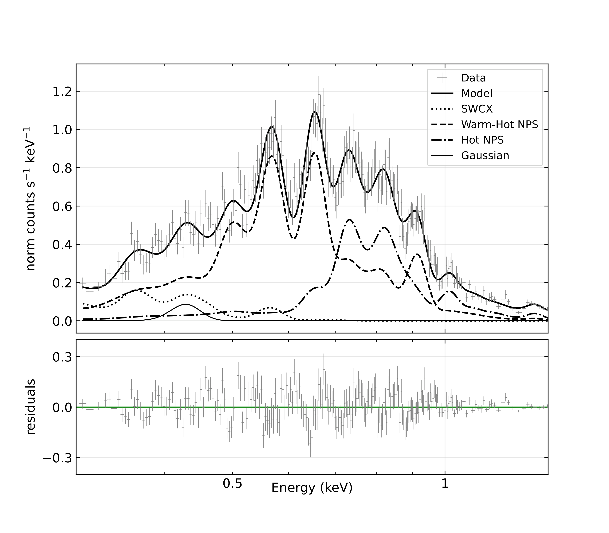
图注：\(\textit{Suzaku}/XIS1\) spectrum of the NPS_field~1 fitted with the absorbed two-temperature model allowing variable N/O and Ne/O. The dashed and dash-dotted curves show the warm–hot enriched and hot NPS components, respectively. The thin curve marks the narrow Gaussian line representing \(\ion{N}{6}\) at 0.43 keV. The dotted curve indicates the foreground SWCX emission. For clarity, the LHB, and the CXB, components are not shown.
对应解读：对应“多仪器 X 射线谱图”“两温模型残差图”和模型拟合段落中关于 NPS 两温吸收模型、N/O 与 Ne/O 可变丰度的核心诊断。
入选理由：这是 NPS 主结果最关键的谱拟合图，直接显示被吸收两温模型、温热富集成分、较热成分、SWCX 前景以及 0.43 keV 的 N VI 高斯线，最能支撑 kT≈0.2 keV 与 0.4–0.5 keV 双温结构和超太阳 N/O、Ne/O 的解读。相比单纯位置图或点源掩膜图，它直接对应论文的核心物理结论。
来源与置信度：\(arxiv_source\)；high；\(arxiv_source\) / ms.tex:figure[4]
Fig03
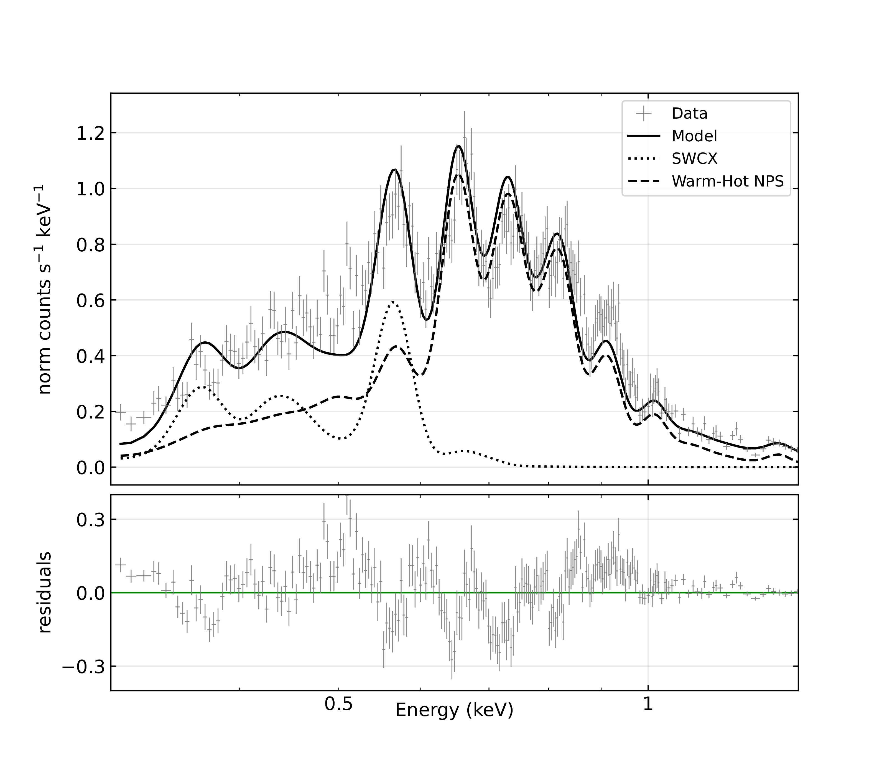
图注：\(\textit{Suzaku}/XIS1\) spectrum of the NPS_field~1 fitted with the SDXB standard model. The residuals clearly show excess emission at both lower and higher energies. For clarity, the LHB and CXB components are not displayed.
对应解读：对应“多仪器 X 射线谱图”“两温模型残差图”中建议检查单温或标准 SDXB 模型在哪些能段出现系统残差。
入选理由：该图展示 NPS Suzaku/XIS1 谱在标准 SDXB 模型下的残差，并明确说明低能和高能均有 excess emission，是论证单一/标准背景模型不足、需要额外吸收两温 NPS 成分的关键证据。它与 Fig04 形成前后对照，科学解释价值很高。
来源与置信度：\(arxiv_source\)；high；\(arxiv_source\) / ms.tex:figure[3]
Fig06
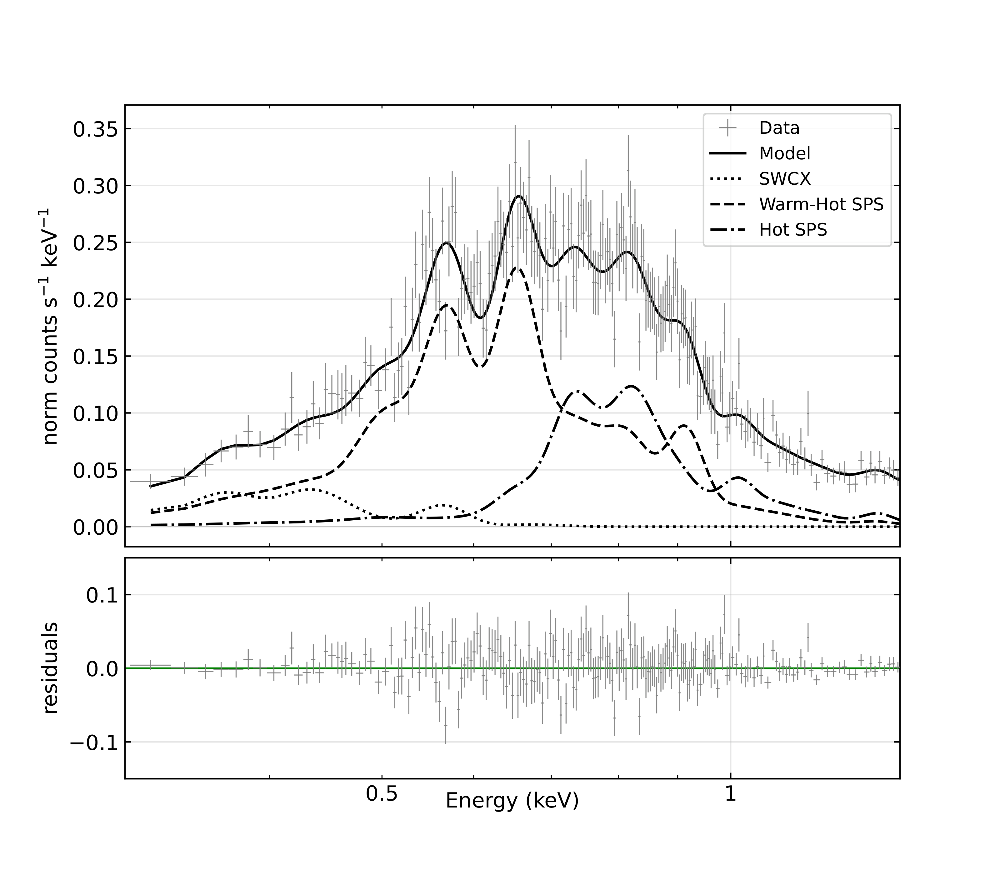
图注：\(\textit{Suzaku}/XIS1\) spectrum of the SPS fitted with an absorbed two-temperature model in which the N/O and Ne/O abundances are allowed to vary. The dashed and dash-dotted curves represent the warm-hot and hot SPS components, respectively, while the dotted curve shows the contribution from foreground SWCX. For clarity, the LHB and CXB components are not displayed.
对应解读：对应“ NPS 与 SPS 对比图/表”和关键图表导读中的图 5：检查 SPS 谱是否也需要吸收两温模型及超太阳 N/O、Ne/O。
入选理由：这是 SPS 的 Suzaku 谱拟合图，包含 warm-hot 与 hot SPS 成分以及 SWCX 前景，直接支撑南极刺也具有类似吸收、温度结构和增强丰度比的结论。由于论文强调南北两侧共同富集历史，这张图是验证 NPS 结果是否可推广到 SPS 的核心图。
来源与置信度：\(arxiv_source\)；high；\(arxiv_source\) / ms.tex:figure[6]
Fig01
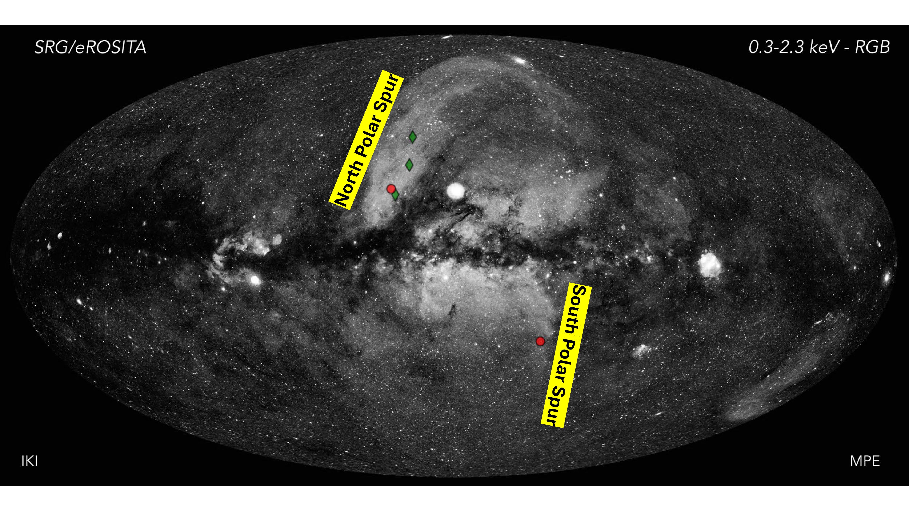
图注：All-sky X-ray map from \(\textit{eROSITA}\) (0.3--2.3 keV) showing large-scale Galactic emission. The NPS and SPS are labeled in yellow. The red circle marks the fields analyzed in this work: for the NPS, it denotes co-spatial \(\textit{Suzaku}\) and \(\textit{Chandra}\) observations, and for the SPS it indicates the \(\textit{Suzaku}-only\) field. Green diamonds mark the \(\textit{XMM-Newton}\) NPS fields studied here. The background image is from the SRG/\(\textit{eROSITA}\) all-sky survey (Credit: Jeremy Sanders, Hermann Brunner and the eSASS team (MPE); Eugene Churazov and Marat Gilfanov, on behalf of IKI).
对应解读：对应“观测视线/天空位置图”和关键图表导读中的图 1：确认 NPS、SPS 视线相对于大尺度 X 射线壳层的位置。
入选理由：该图在 eROSITA 全天软 X 射线图上标出 NPS、SPS 及本文 Suzaku、Chandra、XMM-Newton 观测场，是判断观测点是否落在南北极刺和银河泡壳层亮边缘的唯一候选位置图。它不能单独证明距离，但对理解样本选择和形态关联非常必要。
来源与置信度：\(arxiv_source\)；high；\(arxiv_source\) / ms.tex:figure[1]
Fig07
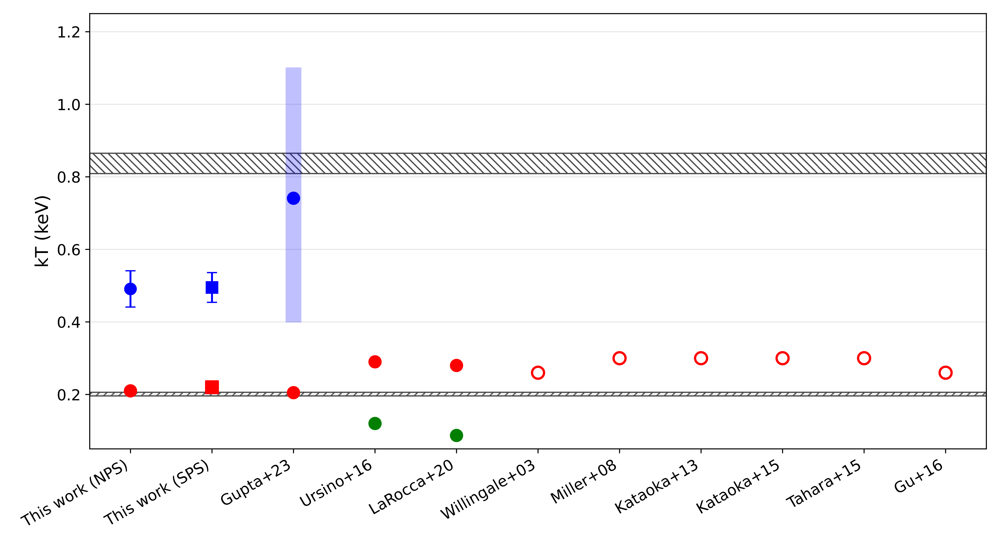
图注：Comparison of plasma temperatures reported in this work and previous X-ray studies of the NPS/Loop~I and SPS regions. Red symbols denote the warm--hot plasma component, blue symbols the hotter thermal component, and green symbols cooler halo components reported in some studies. Circles indicate measurements toward the NPS, while squares correspond to the SPS field analyzed in this work. The vertical blue band indicates the range of hot-component temperatures ($kT \approx 0.4$--$1.1$~keV) measured along Galactic-bubbles sightlines in \(\citet{Gupta2023}.\) Hatched horizontal bands mark the temperatures of the warm--hot and hot phases of the extended Galactic halo.
对应解读：对应“与其他银河泡视线的比较图”和关键图表导读中的图 6：把本文温度结果与既有 NPS/Loop I、SPS 及 Galactic-bubbles 视线比较。
入选理由：该图汇总本文与以往研究的等离子体温度，并标出 Galactic-bubbles 视线的热成分温度范围，可检验本文两温结构是否属于已有银河泡壳层测量的同一族群。虽然它不直接比较 N/O、Ne/O，但对温度一致性和大尺度银河泡解释很有支撑作用。
来源与置信度：\(arxiv_source\)；high；\(arxiv_source\) / ms.tex:figure[7]
Fig05
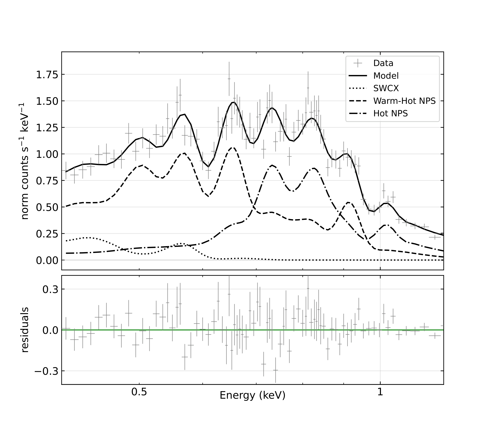
图注：\(\textit{XMM–Newton}/MOS1\) spectrum of the NPS_field~2, fitted with an absorbed two-temperature model with variable N/O and Ne/O abundances. The warm–hot enriched and hotter NPS components are indicated by the dashed and dash-dotted curves, respectively, and the dotted curve represents the foreground SWCX contribution. The LHB, CXB, and proton-induced background components are omitted for visual clarity.
对应解读：对应“多仪器 X 射线谱图”和模型拟合段落中关于 XMM-Newton NPS 视线的独立谱拟合验证。
入选理由：该图展示 XMM-Newton/MOS1 对另一个 NPS 场的两温吸收模型拟合，并包含可变 N/O、Ne/O、SWCX 和软质子背景等信息，有助于说明 NPS 结论并非只来自单个 Suzaku 场。其重要性略低于主 Suzaku NPS 谱和 SPS 对比谱，但能增强多仪器一致性的说服力。
来源与置信度：\(arxiv_source\)；high；\(arxiv_source\) / ms.tex:figure[5]
强相关工作
这篇工作与 Fermi bubbles、eROSITA bubbles 和银河中心双极外流研究直接相关。Fermi bubbles 最初在 \(\gamma\) 射线中揭示了银河中心上下约 \(10\,\mathrm{kpc}\) 尺度的双极结构；eROSITA 后来在软 X 射线中显示更大的泡状/壳状结构。\(\mathrm{NPS}\) 是否是这些泡的投影边缘，是连接高能粒子泡和热等离子体壳层的关键问题。建议检索关键词包括 “North Polar Spur distance”, “eROSITA bubbles”, “Fermi bubbles X-ray shell”, “Galactic center outflow”, “Loop I North Polar Spur”。
与相反观点的张力主要来自本地 Loop I/局部超泡解释。支持近邻起源的工作通常强调射电环、偏振、尘埃相关性或局部星协能量输入；支持银河中心起源的工作则强调吸收距离、双极对称性、X 射线温度和与 Fermi/eROSITA 泡边界的对应。这篇论文的新贡献是加入化学丰度维度，尤其是 \(\mathrm{N/O}\) 与 \(\mathrm{Ne/O}\) 的超太阳比值。建议检索 “Loop I superbubble model”, “local bubble North Polar Spur”, “X-ray abundance Galactic bubbles”, “stellar feedback chemical enrichment Galactic center”。
相似工作：
- https://arxiv.org/abs/2009.08554
- https://www.nature.com/articles/s41586-020-2979-0
- https://arxiv.org/abs/1005.5480
基础理论 / 方法工作：
- https://ui.adsabs.harvard.edu/abs/1960MNRAS.120..287B/abstract
- https://ui.adsabs.harvard.edu/abs/1997ApJ...482..205S/abstract
- https://ui.adsabs.harvard.edu/abs/2003ApJ...588..155S/abstract
相反观点 / 张力线索：
- https://ui.adsabs.harvard.edu/abs/2016MNRAS.461..292S/abstract
- https://ui.adsabs.harvard.edu/abs/2015Natur.523..535L/abstract
4. Simulation-Based Prediction of Black Hole Fe K$α$ Line Profiles
- 来源：arXiv / astro-ph.HE
- 链接：https://arxiv.org/abs/2605.20317v1
- 作者：Chris Nagele, Julian H. Krolik, Brooks E. Kinch, Jeremy D. Schnittman
- 评分：novelty 8/10，importance 8/10，relevance 8/10，final 9.00/10
- 推荐理由：基于GRMHD快照和辐射转移自洽预测黑洞Fe Kα线，指出ISCO附近完全电离、宽线不必然意味着高自旋；对X射线反射谱和黑洞自旋测量很重要。
中文题目：基于广义相对论磁流体模拟预测黑洞铁 \(\mathrm{K}\alpha\) 发射线轮廓
做了什么：这篇文章用广义相对论磁流体模拟快照加辐射转移，直接预测吸积黑洞盘面产生的铁 \(\mathrm{K}\alpha\) 荧光线，而不是把反射谱简化为给定的径向发射率和单一电离参数。作者在局部热平衡与电离平衡下计算盘大气中的铁线发射，并把光子沿弯曲时空传播到远处观测者。主要结论是：在 \(\dot{M}\simeq 0.01\dot{M}_{\rm Edd}\) 的模拟中，线等效宽度约为 \(25\)--\(225\,\mathrm{eV}\)，强烈依赖视角；内盘靠近 \(\mathrm{ISCO}\) 的区域被高度电离，几乎不产生铁 \(\mathrm{K}\alpha\) 光子，主要线通量来自 \(r\gtrsim 10r_g\)。因此，宽铁线不一定只能解释为高自旋黑洞的 \(\mathrm{ISCO}\) 很小，也可能由径向变化的照射谱、电离结构、盘大气康普顿展宽和不同铁离子线能叠加共同造成。
为什么重要：铁 \(\mathrm{K}\alpha\) 线长期被用作黑洞自旋测量工具，核心假设是线宽主要来自靠近 \(\mathrm{ISCO}\) 的相对论性多普勒和引力红移。这篇工作重要在于，它从模拟中的盘体、冕区、照射谱和电离结构出发，显示常用反射拟合中的若干简化假设可能系统性地把线宽解释成更小的内半径或更高自旋。它不是说铁线自旋测量无效，而是指出必须把真实吸积流中的径向电离梯度和局部辐射环境纳入误差预算。
理论 / 观测 / 仪器方法价值：对理论而言，这篇文章把 \(\mathrm{GRMHD}\) 吸积流、辐射转移、电离平衡和荧光线形成连接起来，为反射谱模型提供更物理的先验。对观测而言，它提醒读者不要只看经验性发射率指数和内半径，还要检查照射连续谱、\(\xi(r)\)、盘面温度和线产生半径。对方法而言，它展示了一条从数值模拟生成可拟合光谱模板的路线，可用于未来 \(\mathrm{XRISM}\)、\(\mathrm{Athena}\) 或高信噪比 \(\mathrm{XMM}\)-Newton、\(\mathrm{NuSTAR}\) 反射谱分析。
为什么应该关注：如果你使用铁线或反射谱推断黑洞自旋、内盘截断半径或冕几何，这篇文章值得关注，因为它直接挑战了“越宽的铁线越靠近黑洞、越意味着高自旋”的单一路径解释。它还给出一个更实际的判断：铁线的宽度和等效宽度不仅编码时空几何，也编码盘大气的电离、热结构和辐射转移。如果未来观测发现宽线但自旋证据与连续谱拟合、时延谱或喷流功率不一致，这类模拟预测可能是排查系统误差的关键。
展开详细解读：文章讲解、背景、理论、重点章节、图表与相关工作
文章详细讲解
科学问题：吸积黑洞的铁 \(\mathrm{K}\alpha\) 线通常被当作内盘几何和黑洞自旋的探针。标准图像认为，冷而光学厚的盘被硬 \(\mathrm{X}\) 射线照射后产生 \(6\)--\(7\,\mathrm{keV}\) 附近的铁荧光线；若发射来自靠近 \(\mathrm{ISCO}\) 的区域，强引力红移和高速轨道运动会把窄线拉宽成不对称的红翼。问题在于，许多实际拟合把复杂吸积流压缩成少数经验参数，例如幂律照射发射率、单一或分段的电离参数、理想薄盘几何和固定反射模型。本文要问的是：如果从 \(\mathrm{GRMHD}\) 模拟给出的盘体和冕区辐射场出发，铁线轮廓是否仍主要由 \(\mathrm{ISCO}\) 和自旋决定？
作者怎么做：这篇文章是伴随论文的延续。伴随论文已经展示如何从广义相对论磁流体模拟快照中，用盘体辐射转移和冕区辐射转移得到连续谱；本文把注意力放到铁 \(\mathrm{K}\alpha\) 线。作者在每个盘面位置计算局部照射谱、热平衡和电离平衡，估计铁离子的荧光发射，并把局部产生的线光子经过相对论射线追踪传到远处观测者。这里的关键不是给定一个手调的 \(q\) 型发射率，而是让照射通量、谱形、温度、密度和电离参数随半径自然变化。模拟设定的吸积率约为爱丁顿吸积率的 \(1\%\)，属于低到中等辐射效率、存在热冕照射的吸积状态。
关键结果：作者发现铁线等效宽度约为 \(25\)--\(225\,\mathrm{eV}\)，主要受观测倾角影响。更重要的是，照射谱和电离参数 \(\xi\) 并非弱径向变化量，而是可以强烈随半径改变，例如模拟中 \(\xi\propto r^{-1.5}\)。靠近 \(\mathrm{ISCO}\) 的内盘区域因为被完全或近乎完全电离，铁不再以能产生强 \(\mathrm{K}\alpha\) 荧光的离子态存在，因此贡献很少铁线光子。线通量主要来自 \(r\gtrsim 10r_g\)，这与许多把最大线宽直接对应到最内稳定圆轨道的解释不同。线宽则来自多个机制叠加：轨道多普勒效应和引力频移仍然存在，但盘大气中的康普顿散射会展宽线，不同铁离子态具有不同本征线能，也会把总轮廓抹宽。
局限和下一步：这项工作基于特定模拟、特定吸积率和辐射处理，不能直接覆盖所有活动星系核和黑洞 \(\mathrm{X}\) 射线双星状态。电离平衡、盘大气垂向结构、非局域辐射场、时间平均方式和数值分辨率都可能影响预测线形。论文的价值更像是打开参数空间而非给出最终通用模板：它说明宽线可以在较低自旋或较大有效发射半径下产生，因此未来需要在不同自旋、吸积率、磁通量状态、冕几何和观测倾角下建立成套模拟库，并与真实反射谱联合拟合。下一步特别值得做的是把这种物理模板同传统 \(\mathrm{relxill}\) 类模型在同一观测数据上盲测比较，量化自旋和内半径偏差。
背景知识
研究对象是黑洞吸积盘的铁 \(\mathrm{K}\alpha\) 荧光线。中性或低电离铁的 \(\mathrm{K}\alpha\) 线能在 \(6.4\,\mathrm{keV}\) 附近，氦样和氢样铁的相关线能可到约 \(6.7\) 和 \(6.97\,\mathrm{keV}\)。在活动星系核和黑洞 \(\mathrm{X}\) 射线双星中，硬 \(\mathrm{X}\) 射线照射冷盘后产生反射谱，包括铁线、吸收边和 \(20\)--\(30\,\mathrm{keV}\) 左右的康普顿反射峰。由于铁丰度高、荧光产额高且能区适合 \(\mathrm{X}\) 射线望远镜，铁线成为最常用的强引力诊断之一。
历史上，宽铁线的经典解释来自相对论薄盘模型：盘面局部发射一条窄线，远处观测到的轮廓由多普勒增强、横向多普勒效应、引力红移和光线弯曲共同塑造。若黑洞自旋高，顺行 \(\mathrm{ISCO}\) 更靠近事件视界，红翼可以延伸到更低能量；因此宽红翼常被看作高自旋证据。这一方法推动了大量 \(\mathrm{AGN}\) 和 \(\mathrm{XRB}\) 自旋测量，也发展出复杂的反射谱拟合工具。
但观测和理论背景一直存在张力。真实吸积流不是静态、均匀、薄而冷的理想盘：磁湍流输运角动量，盘表面有热电离大气，冕区可能是扩展的、斑块状的或喷流基部状的，照射谱也可能随半径和时间改变。传统拟合中的径向发射率通常用 \(\epsilon(r)\propto r^{-q}\) 或折断幂律表示，电离参数也常取单值或简单梯度；这些简化在信噪比较低时可行，但在高质量数据中会把物理误差转移到自旋、铁丰度、倾角或内半径上。
为什么现在值得重新看：一方面，\(\mathrm{GRMHD}\) 模拟和辐射转移计算已经可以把盘内耗散、磁湍流和热冕结构联系到可观测谱；另一方面，\(\mathrm{XRISM}\) 等高分辨率谱仪以及未来 \(\mathrm{Athena}\) 将更精细地区分线芯、肩部和离子态结构。过去许多反射谱争论受限于模型族本身，现在需要问模型假设是否足够物理。本文的贡献正是在模拟层面检验这些假设。
该领域常见误区包括：第一，把宽铁线完全等同于高自旋，而忽略电离、散射和多离子线叠加也会展宽；第二，把等效宽度简单理解为铁丰度指标，而忽略倾角、照射几何和盘表面电离状态；第三，把拟合得到的内半径直接看作真实盘截断半径，而忘记它可能只是“有效发射内半径”；第四，认为单一电离参数足以代表整个盘面。本文显示，至少在其模拟中，\(\xi(r)\) 的径向变化对线产生区域有一阶影响。
基础理论 / 方法脉络
基础物理图像从反射开始：热冕或盘上方高能电子产生硬 \(\mathrm{X}\) 射线，照射光学厚吸积盘。入射光子若能量超过铁 \(\mathrm{K}\) 壳层阈值，就可电离内层电子；外层电子跃迁填补空穴时产生 \(\mathrm{K}\alpha\) 光子，或者能量被俄歇电子带走。荧光线强度取决于入射谱在阈值以上的光子数、铁离子态、荧光产额、盘大气的吸收和散射逃逸概率。
相对论效应决定局部发射到远处观测的能量映射。盘面物质以接近开普勒速度绕黑洞运动，不同方位有不同视向速度，因此蓝峰和红峰来自接近侧与远离侧；靠近黑洞处还会有强引力红移和光线弯曲。传统模型常把局部发射能量固定，再用频移因子 \(g\) 把它映射到观测能量。本文保留这些效应，但强调局部发射本身不是简单窄线：盘大气温度导致康普顿散射，铁离子态改变本征线能，电离过强时甚至没有有效铁线。
本文的关键量之一是电离参数 \(\xi\)，它大致衡量单位气体密度受到的电离照射强度。若 \(\xi\) 低，铁多为中性或低电离态，\(6.4\,\mathrm{keV}\) 线较强；若 \(\xi\) 中等，氦样或氢样铁线增强；若 \(\xi\) 很高，铁被完全剥离或接近完全剥离，\(\mathrm{K}\alpha\) 荧光被抑制。传统反射拟合常让 \(\xi\) 取常数或少数分区值，而模拟显示 \(\xi\) 可随半径强烈变化，这会移动线产生的主要半径。
观测方法上，铁线不是孤立可见的完美谱线，而是叠在连续谱和完整反射谱上。等效宽度衡量线通量相对局部连续谱的强弱，倾角影响多普勒展宽和投影面积，吸收和仪器响应会进一步改变观测轮廓。对于模拟预测，必须把局部发射率、频移、透镜放大和到达方向积分起来，再与仪器响应卷积，才能与数据比较。
主要退化关系包括：自旋与内发射半径退化，倾角与多普勒展宽退化，铁丰度与反射分量归一化退化，电离参数与线芯能量及吸收边结构退化，冕几何与径向发射率退化。本文特别强调一个容易被低估的系统误差：如果内盘电离到不发线，拟合模型却强迫内盘按经验发射率产生铁线，就可能把非几何展宽错误地解释成更高自旋或更陡照射。
公式与推导
第一步是定义黑洞尺度和吸积问题中最基本的长度单位。对质量为 \(M\) 的黑洞，引力半径为
其中 \(G\) 是引力常数，\(c\) 是光速。论文中讨论的 \(r\gtrsim 10r_g\) 意味着线产生主要发生在十几个引力半径之外，而不是只在 \(\mathrm{ISCO}\) 附近。
第二步是把照射场和气体密度联系到电离状态。常用电离参数写作
其中 \(F_X(r)\) 是盘面局部接收的电离 \(\mathrm{X}\) 射线通量，\(n(r)\) 是气体数密度。本文的核心物理点是 \(F_X(r)\)、谱形和 \(n(r)\) 都来自模拟或辐射转移，因此 \(\xi\) 不是任意常数；模拟中可近似出现 \(\xi(r)\propto r^{-1.5}\) 的趋势。
第三步是估计局部荧光线发射。若用简化表达表示单位面积线能量通量，可写成
其中 \(Y_{\rm Fe}\) 是依赖电离和温度的有效荧光产额，\(A_{\rm Fe}\) 是铁丰度，\(E_K\) 是 \(\mathrm{K}\) 壳层阈值，\(F_E^{\rm inc}\) 是入射谱能量通量，\(\sigma_K(E)\) 是 \(\mathrm{K}\) 壳层光电截面。这个式子说明线强不只取决于总照射强度，也取决于谱形和离子态。
第四步是考虑电离过强的极限。可用一个响应函数 \(\mathcal{R}_{\rm Fe}(\xi)\) 表示铁线效率，则
其中 \(N_H(r)\) 是大气柱密度。对于很高的 \(\xi\)，\(\mathcal{R}_{\rm Fe}\rightarrow 0\)，因为铁被高度电离后缺少可产生强 \(\mathrm{K}\alpha\) 荧光的束缚电子。这正是内盘虽照射强却不一定贡献强铁线的原因。
第五步是把局部发射能量映射到观测能量。相对论频移因子为
其中 \(k^\mu\) 是光子四动量，\(u^\mu_{\rm obs}\) 和 \(u^\mu_{\rm em}\) 分别是观测者和发射气体的四速度。\(g\) 同时包含引力红移、多普勒频移和横向多普勒效应。
第六步利用相对论辐射转移中的不变量。比强度满足
因此远处观测到的谱通量可写为
其中 \(I_{E_{\rm em}}^{\rm em}\) 是局部发射比强度，\(d\Omega_{\rm obs}\) 是观测者天球上的像素立体角。这个积分就是射线追踪预测线轮廓的核心。
第七步是加入盘大气康普顿展宽的尺度估计。若电子温度为 \(T_e\)，单次散射造成的相对能量展宽近似为
其中 \(k_B\) 是玻尔兹曼常数，\(m_e\) 是电子质量。若线光子在逃逸前经历多次散射，展宽会进一步增加。这解释了为什么非相对论局部过程也能使线变宽。
第八步是定义观测常用的等效宽度。若连续谱在铁线附近为 \(F_E^{\rm cont}\)，线的等效宽度为
其中 \(E_0\) 通常取线附近参考能量。论文得到的 \(\mathrm{EW}\sim 25\)--\(225\,\mathrm{eV}\) 表示线相对于局部连续谱的强弱随倾角和辐射环境显著变化。
第九步是与传统经验发射率比较。传统模型常设
其中 \(q\) 是拟合的发射率指数。但模拟驱动模型更接近
其中 \(\mathcal{P}_{\rm esc}\) 是线光子逃逸概率。两式的差别说明：即使照射在内盘很强，只要 \(\mathcal{R}_{\rm Fe}\) 很小，实际铁线发射也会被推到更大半径。
第十步是拟合诊断。给定模型预测的计数 \(m_i(\boldsymbol{\theta})\) 和观测计数 \(d_i\)，泊松似然可写为
其中 \(i\) 标记能道，\(\boldsymbol{\theta}\) 包括自旋、倾角、归一化、电离结构和连续谱参数等。若传统模型缺少 \(\xi(r)\) 和康普顿展宽等自由度，残差可能被错误地吸收到自旋或铁丰度参数中。
模型拟合 / 应用方法
这类工作最终要进入谱拟合，拟合量通常包括连续谱归一化和斜率、反射归一化、铁丰度、倾角、内外半径、自旋、发射率参数和电离参数。本文的模拟路线把其中一部分经验参数替换为由 \(\mathrm{GRMHD}\) 快照和辐射转移决定的物理量，例如局部照射谱、密度、温度和 \(\xi(r)\)。因此它更像是生成物理模板，而不是直接提出一个少参数解析模型。
若与真实观测比较，似然通常在计数空间构建，需要把模型光谱先乘以星际吸收，再通过仪器响应矩阵和有效面积得到每个能道的预测计数。高计数时可用 \(\chi^2\) 近似，低计数或窄能道时更适合 \(C\)-stat 或泊松似然。残差应分开检查铁线红翼、蓝峰、线芯、吸收边和康普顿峰，因为不同能段对应不同物理退化：红翼影响内半径和自旋，蓝峰影响倾角，吸收边和线芯能量影响电离态，康普顿峰影响反射强度和高能截止。
参数退化是这篇文章特别相关的部分。传统拟合中，高自旋、小内半径、陡发射率都能增强红翼；高倾角会增强多普勒分裂；高铁丰度会增强线和边；高电离会移动线能并改变反射连续谱。本文增加了一个重要退化：径向电离梯度和盘大气康普顿展宽可在没有极端高自旋的情况下产生宽轮廓。换句话说，拟合得到的 \(a_\ast\) 可能依赖模型是否允许内盘铁线发射被电离抑制。
系统误差方面，需要关注模拟本身和辐射微物理两类误差。模拟有限时长可能导致湍流状态采样不足；磁通量状态、电子加热处方、辐射冷却和盘厚度会改变冕区照射；大气电离平衡可能受非局域辐射、密度不均匀和时间变电离影响。原子数据、铁丰度、康普顿散射处理和离子线列表也会影响线轮廓。实际拟合时，这些系统误差不应只用统计误差条表示。
模型可能失败的场景包括：真实源有强盘风或复杂吸收，窄线和吸收线混入宽线区域；冕几何与模拟不匹配，例如灯柱型紧凑冕或喷流主导硬 \(\mathrm{X}\) 射线；吸积率远高于本文模拟，使盘厚度和辐射压结构不同；或黑洞双星处于快速状态转变，时间平均谱混合了多个物理状态。因此这篇文章最适合作为“物理先验和系统误差警示”，而不是立即替代所有反射模型。
实际应用上，读者可以把本文结论转化为拟合检查清单：不要只报告最佳自旋，还要报告允许径向 \(\xi(r)\) 后自旋是否稳定；检查铁线主要贡献半径的后验分布；比较单电离和径向电离模型的残差；评估康普顿展宽是否能解释部分红翼；用独立方法如连续谱拟合、混响时延或偏振约束倾角和内盘几何。
重点章节 / 结果段落怎么读
-
引言和问题设定：应重点看作者如何界定传统铁线自旋测量的假设，尤其是线宽与 \(\mathrm{ISCO}\) 的关系、经验发射率和单一电离参数的使用范围。这里决定了本文不是单纯做一条新模型线，而是在检验反射谱建模的物理基础。
-
模拟与连续谱输入：读者应关注 \(\mathrm{GRMHD}\) 快照、吸积率、黑洞参数、盘体和冕区辐射转移如何连接。由于铁线对照射谱极敏感，连续谱的来源、冕的空间分布和局部照射角分布比最终图上的线形同样重要。
-
局部电离与热平衡计算：这是本文的核心方法段。建议仔细看 \(\xi(r)\)、温度、密度和铁离子态如何计算，以及作者如何决定某一半径是否能产生铁 \(\mathrm{K}\alpha\) 光子。若这里采用的近似改变，线产生半径也可能改变。
-
线轮廓和等效宽度结果：重点看不同倾角下线轮廓如何变化、等效宽度为何从 \(25\) 到 \(225\,\mathrm{eV}\) 变化，以及哪些半径贡献了主要线通量。不要只看总轮廓宽不宽，要看宽度来自哪个物理过程。
-
与传统反射拟合的讨论：这一部分应关注作者如何解释“宽线不必然等于高自旋”的论证边界。好的读法是区分几何相对论展宽、电离抑制导致的发射半径重分布、康普顿展宽和多离子态混合这几项贡献。
-
稳健性和未来模型库：如果论文有附录或补充测试，应看不同快照、不同辐射假设、数值分辨率和视角采样是否改变结论。对于想用这类模型做观测拟合的人，这些内容比单个最佳线形更有价值。
建议重点查看的图表
-
径向电离参数 \(\xi(r)\) 或相关照射量图：看 \(\xi\) 是否确实随半径强烈下降，内盘是否进入铁完全电离区；注意误差带或时间波动是否很大。
-
局部照射谱随半径变化图：看不同半径处入射 \(\mathrm{X}\) 射线谱的硬度和归一化，尤其是 \(\mathrm{K}\) 壳层阈值以上光子数如何变化。不要只看总通量。
-
铁线径向贡献函数图：看线通量主要来自 \(r\lesssim 6r_g\)、\(6\)--\(10r_g\) 还是 \(r\gtrsim 10r_g\)。这是判断本文对自旋拟合影响的关键诊断。
-
不同倾角的观测线轮廓图：看蓝峰、红翼和线芯如何随倾角变化；同时检查等效宽度变化是否由投影、多普勒增强或散射逃逸差异驱动。
-
局部线轮廓或离子态分解图：看 \(6.4\)、\(6.7\)、\(6.97\,\mathrm{keV}\) 附近不同离子线是否叠加，是否存在康普顿肩或热展宽。
-
与传统模型或经验发射率的对比图：看模拟预测的线形能否被简单 \(r^{-q}\) 模型近似，残差集中在哪些能段。若残差在红翼和蓝峰都有结构，说明简单调自旋可能不是充分解释。
-
等效宽度随倾角或其他参数变化的表格/图：看 \(25\)--\(225\,\mathrm{eV}\) 的范围是否与观测常见值相当，以及是否存在强烈方向性选择效应。
关键图表逐图导读
图 1：建议首先看模拟几何或辐射场示意图。横纵坐标通常可能是以 \(r_g\) 为单位的空间坐标，颜色表示温度、密度、辐射能量密度或硬 \(\mathrm{X}\) 射线照射强度。读图重点是确认冕并非理想点源，盘面接收的照射具有空间结构。陷阱是不要把二维切片上的亮区直接等同于铁线强发射区，因为线效率还取决于电离状态。
图 2：若论文给出 \(\xi(r)\)、密度或温度的径向分布，应把横轴的 \(r/r_g\) 与纵轴的 \(\xi\) 或相关物理量联系起来看。模型线若近似呈 \(\xi\propto r^{-1.5}\)，说明内外盘电离条件差异很大。读图陷阱是只看平均曲线而忽略散布；在湍流盘中，局部斑块可能偏离平均趋势。
图 3：线发射的径向贡献函数应是本文最关键图之一。横轴通常是半径，纵轴是单位半径或单位对数半径贡献的铁线通量。若峰值在 \(r\gtrsim 10r_g\)，就支持“内 \(\mathrm{ISCO}\) 区域不产线”的结论。读图时要分清每单位 \(dr\) 和每单位 \(d\ln r\) 的贡献，因为二者会改变视觉峰值位置。
图 4：不同观测倾角下的铁线轮廓图，横轴应为观测能量，纵轴为通量、归一化通量或相对连续谱的线超额。倾角增大时，蓝翼和红翼通常都会更明显，等效宽度也可能变化。陷阱是把宽翼全部归因于相对论红移；需要结合局部康普顿展宽和离子态线能分布一起读。
图 5：如果有局部物理过程分解图，例如只含相对论转移、加入康普顿散射、加入多离子态后的轮廓对比，应看每一步对线宽和峰位的改变。模型线之间的差异若在 \(6\)--\(7\,\mathrm{keV}\) 主峰附近和低能红翼都明显，说明传统单一窄线卷积模型可能不足。
图 6：与经验反射模型或不同参数假设的比较图应重点看残差面板。横轴为能量，残差可用 \((D-M)/\sigma\) 或比值表示。若残差在铁线两侧呈系统性波纹，而非随机散布，说明缺失物理过程正在驱动拟合偏差。读图陷阱是只看总 \(\chi^2\) 改善而忽略残差的物理位置。
图 7：等效宽度或线通量随倾角变化的图，横轴可能是 \(\cos i\) 或倾角 \(i\)，纵轴为 \(\mathrm{EW}\) 或线通量。应检查变化是否单调，以及高倾角是否可能受盘自遮挡、散射路径变长或吸收影响。这个图直接关系到样本选择：高倾角源更容易显示强而宽的线，但也更容易有吸收污染。
论文原图 / 可嵌入图片
Fig11
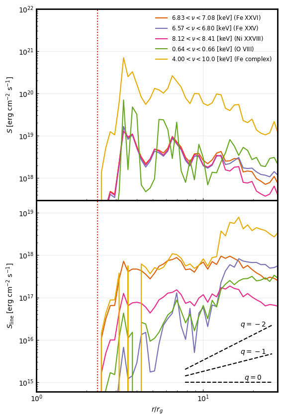
图注：Surface brightness of several emission lines for the $M=10\;\msun$, $\mdot=0.01$ model. The upper panel shows the surface brightness in energy bands defined in the legend. The lower panel shows the continuum subtracted surface brightness in each band. Although the total surface brightness decreases with radius, the line surface brightness increases to a peak at around $r\sim 12-15\;r_g$. The vertical dotted line shows the ISCO. Note that the sum of the fluxes in the narrow iron and nickel lines is less than the flux in the 4-10 keV band. This is because the energy bands for the individual lines are too narrow to include the Compton broadened component, but this component is contained within the 4-10 keV band (cf. Fig. \ref{fig:Ldisk_observed}).
对应解读：建议重点查看的图表第3项；关键图表逐图导读中的“图3：线发射的径向贡献函数”。
入选理由：这是最直接支撑本文核心结论的候选图：铁线相关表面亮度随半径变化，并明确显示线表面亮度在约12--15 r_g达到峰值、ISCO位置以竖线标出。它能直接检验日报强调的“内ISCO区域不产线、主要贡献来自r≳10 \(r_g\)”，比单纯密度或连续谱图更关键。
来源与置信度：\(arxiv_source\)；high；\(arxiv_source\) / main__1_.tex:figure[11]
Fig03
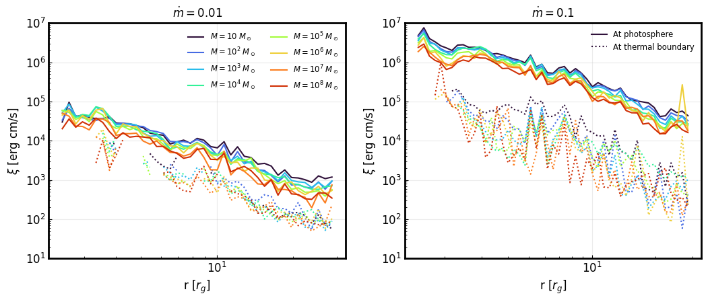
图注：Azimuthally averaged ionization parameter ($\xi$) measured at the photosphere (solid line) and at the thermal boundary (dotted line). The left panel shows the $\mdot=0.01$ case and the right panel the $\mdot=0.1$ case while colors denoted black hole masses.
对应解读：建议重点查看的图表第1项；关键图表逐图导读中的“图2：xi(r)、密度或温度的径向分布”。
入选理由：该图给出光球面和热边界处的径向电离参数xi，是验证xi是否强烈随半径下降、内盘是否过度电离的核心诊断。日报中特别提到xi∝r^{-1.5}以及内盘铁完全电离，必须优先嵌入这类径向xi图。
来源与置信度：\(arxiv_source\)；high；\(arxiv_source\) / main__1_.tex:figure[3]
Fig08
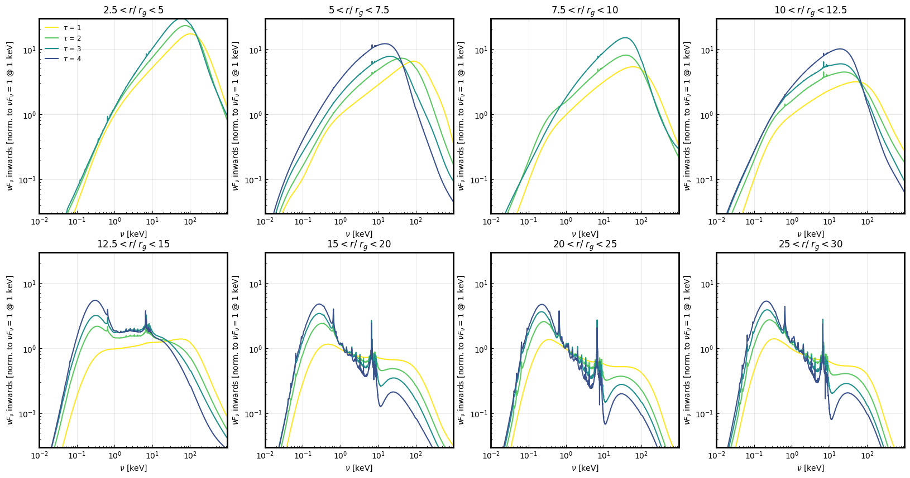
图注：Inwards flux (traveling from the upper photosphere towards the lower photosphere/thermal core) at integer optical depths for the indicated radial bins in the $M=10\;\msun$, $\mdot = 0.01$ model. The flux at 1 keV at the photosphere ($\tau=1$) is normalized to unity.
对应解读：建议重点查看的图表第2项；详细解读中关于局部照射谱随半径变化和K壳层阈值以上光子数的讨论。
入选理由：该图展示不同半径径向bin中的向内通量谱，并按光学深度分层，能够直接检查照射到盘大气的谱形如何随半径和深度变化。相比只给出单一硬度指标的图，它更接近日报要求的“不要只看总通量，要看K壳层阈值以上光子数”。
来源与置信度：\(arxiv_source\)；high；\(arxiv_source\) / main__1_.tex:figure[8]
Fig05
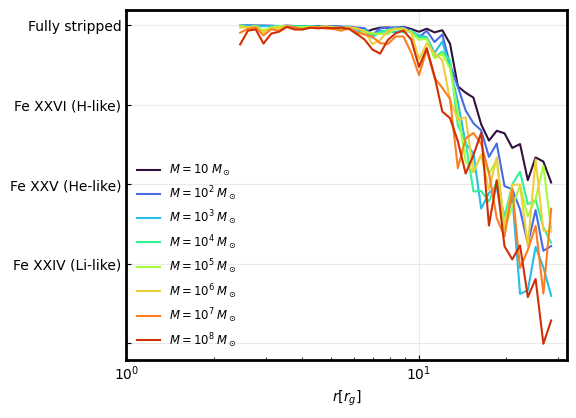
图注：Average Fe ionization state as a function of slab radius. The average has been performed over mass density. Colors denote different masses and all models are from the $\mdot=0.01$ case.
对应解读：建议重点查看的图表第5项；关键结果中关于不同铁离子态和内盘完全电离抑制Fe Kα发射的段落。
入选理由：该图给出平均Fe电离态随半径的变化，是连接xi(r)与实际铁线产生效率的关键中间量。它能说明为什么即使内盘照射强，也可能因为铁高度电离而不产生强Fe Kα线。
来源与置信度：\(arxiv_source\)；high；\(arxiv_source\) / main__1_.tex:figure[5]
Fig06
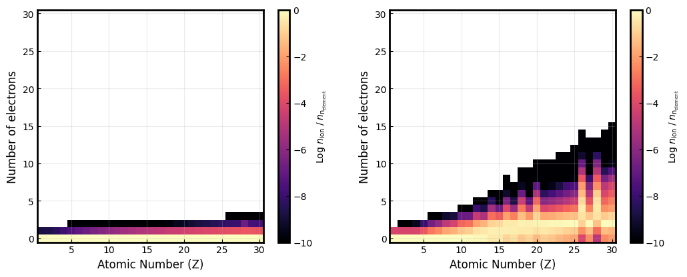
图注：Two extremal examples of ion densities determined by \(\texttt{XSTAR}\) during the \(\texttt{PTransX}\) calculation. The horizontal axis is atomic number (e.g., Z(Fe) = 26, Z(Ni) = 28) and the vertical axis is the remaining number of electrons (0 electrons means fully-stripped, 1 electron H-like, etc). The colorbar shows $\log n_{\rm ion}/n_{\rm element}$, so that each column sums to 1. The left panel shows the ionization state of a cell near the surface of a highly ionized slab, located at $r=3.13 \;r_g$, whereas the right panel shows the ionization state of a cell with low ionization parameter ($\xi\sim100$, Fig. \ref{fig:xi_r}); this cell is located near the thermal boundary in a slab at $r=23.7\;r_g$. Both slabs are taken from the $M=10\;\msun$, $\mdot=0.01$ case. Other slabs from this model fall between these two extreme cases, so there are no locations with $r < 30 r_g$ in which the ionization density is dominated by ions with more than a few electrons.
对应解读：建议重点查看的图表第5项；详细解读中关于局部离子态、6.4/6.7/6.97 keV线来源以及完全剥离铁的讨论。
入选理由：该图用XSTAR结果展示高电离内区与低电离外区的离子丰度极端例子，特别是r=3.13 r_g附近高度电离与r=23.7 r_g附近较低xi的对比。它比平均曲线更直观地支撑“内盘缺少可产生荧光线的铁离子”这一物理解释。
来源与置信度：\(arxiv_source\)；high；\(arxiv_source\) / main__1_.tex:figure[6]
Fig10
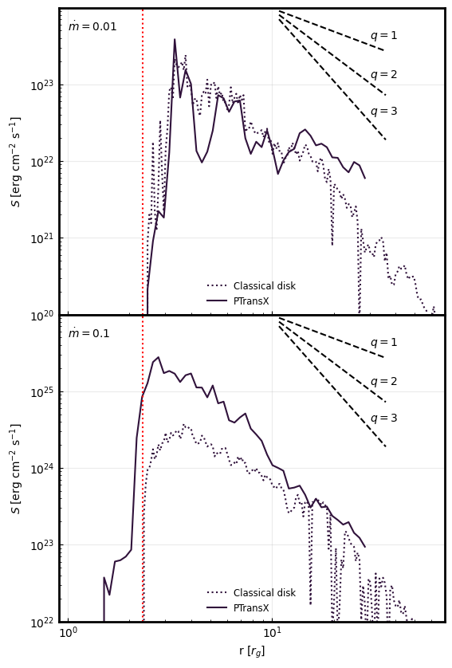
图注：Surface brightness of the \(\texttt{HARM3D}\) disk according to classical accretion disk theory with the Shakura-Sunyaev reduction factor (dotted line) and \(\texttt{PTransX}\) (solid line). This figure shows $M=10\;\msun$ for the $\mdot=0.01$ case (upper panel) and the $\mdot=0.1$ case (lower panel). The vertical dotted line is the ISCO, while the dashed lines show integer emissivity indices.
对应解读：建议重点查看的图表第6项；模型拟合段落中关于传统幂律发射率r^{-q}和经验模型偏差的讨论。
入选理由：该图比较经典Shakura-Sunyaev修正盘表面亮度与PTransX预测，并标出ISCO和整数发射率指数，可用于判断模拟产生的径向发射率是否能被简单经验幂律近似。虽然它不是残差图，但在候选图中最贴近日报关于传统发射率模型对比的需求。
来源与置信度：\(arxiv_source\)；high；\(arxiv_source\) / main__1_.tex:figure[10]
强相关工作
这篇工作与经典相对论铁线研究直接相连。早期模型强调由 \(\mathrm{ISCO}\) 决定的强引力红移和多普勒展宽，后来发展出可用于观测拟合的反射模型族，例如 \(\mathrm{relline}\)、\(\mathrm{relxill}\) 和各种灯柱几何模型。本文并不否认这些模型的价值，而是指出其经验性发射率和电离处理可能在高质量数据中成为主导系统误差。检索关键词可用“relativistic Fe K alpha line black hole spin”、“relxill ionization gradient”、“ISCO iron line profile”。
它也与 \(\mathrm{GRMHD}\) 后处理辐射转移和模拟驱动光谱预测的工作相邻。近年来许多研究尝试从 \(\mathrm{GRMHD}\) 模拟生成连续谱、偏振、图像或时变光变曲线；本文把同样思想推进到铁线反射谱。相关检索关键词包括“GRMHD radiative transfer reflection spectrum”、“simulation based X-ray reflection accretion disk”、“Fe K alpha GRMHD disk atmosphere”。
潜在张力来自两个方向：一是已有大量观测论文报告高自旋，且部分结果在不同模型下看似稳定；二是一些源的连续谱拟合、混响时延或喷流功率推断可能与铁线自旋不完全一致。本文提供了一种解释这些张力的物理通道，即非几何展宽和径向电离结构会改变铁线对内半径的响应。检索相反或互补观点可用“black hole spin measurement systematic uncertainties”、“continuum fitting versus reflection spin”、“disk truncation Fe line ionization degeneracy”。
相似工作：
- https://arxiv.org/abs/2605.20317
- https://ui.adsabs.harvard.edu/abs/2014ApJ...782...76D/abstract
- https://ui.adsabs.harvard.edu/abs/2013ApJ...768..146G/abstract
基础理论 / 方法工作：
- https://ui.adsabs.harvard.edu/abs/1989MNRAS.238..729F/abstract
- https://ui.adsabs.harvard.edu/abs/1991ApJ...376...90L/abstract
- https://ui.adsabs.harvard.edu/abs/1995Natur.375..659T/abstract
- https://ui.adsabs.harvard.edu/abs/2005ApJS..157..335G/abstract
相反观点 / 张力线索：
- https://ui.adsabs.harvard.edu/abs/2013CQGra..30x4003R/abstract
- https://ui.adsabs.harvard.edu/abs/2014SSRv..183..277M/abstract
- https://ui.adsabs.harvard.edu/abs/2020ARA%26A..58..117B/abstract
5. Characterizing the origins of gamma-ray variability of the jetted active galactic nuclei observed with the Fermi-LAT
- 来源：arXiv / astro-ph.HE
- 链接：https://arxiv.org/abs/2605.20843v1
- 作者：Yongyun Chen, Qiusheng Gu, Junhui Fan, Dingrong Xiong, Xiaoling Yu, Xiaogu Zhong, Xiaotong Guo, Nan Ding
- 评分：novelty 6/10，importance 7/10，relevance 10/10，final 8.75/10
- 推荐理由：基于Fermi-LAT大样本喷流AGN光变曲线，用DRW模型研究伽马射线光变起源和发射区位置；直接涉及GeV伽马、AGN/blazar，相关性很高。
中文题目：用 Fermi-LAT 长期光变刻画喷流活动星系核伽马射线变异的起源
做了什么：这篇论文用 Fermi-LAT 档案光变曲线研究一大批喷流活动星系核的伽马射线变异，核心方法是用阻尼随机游走模型估计变异幅度和阻尼时间尺度。作者发现样本的典型阻尼时间约为 \(100\) 天，平谱射电类星体比 BL Lac 天体的伽马射线变异幅度更大；结合经验尺度关系，他们推断伽马射线辐射区通常在宽线区之外，更接近或超过尘埃环半径。论文还报告了变异幅度与射电、X 射线、伽马射线亮度和 loudness、同步辐射峰、逆康普顿峰、康普顿优势、黑洞质量、吸积盘光度和爱丁顿比之间的统计相关，指向喷流活动与吸积盘状态共同调制高能变异。
为什么重要：喷流活动星系核的伽马射线光变既包含粒子加速、辐射冷却和多普勒增强的信息，也可能记录喷流中辐射区相对宽线区和尘埃环的位置。这个问题直接影响外部康普顿模型、喷流能量耗散位置、伽马射线吸收以及多波段相关变异的解释。该文的价值在于把大样本、长期 Fermi-LAT 光变和统一的随机过程参数化结合起来，尝试从统计层面约束变异时间尺度、辐射区位置和喷流/吸积联系。
理论 / 观测 / 仪器方法价值：对理论而言，\(\sim100\) 天阻尼时间给扩散激波加速、湍流单元叠加或喷流传播时间模型提供了一个可检验的统计尺度；对观测而言，论文把 FSRQ 与 BL Lac 的变异幅度差异、以及变异幅度与多波段亮度和峰值性质的关系系统化；对方法而言，阻尼随机游走模型提供了一种比简单方差或最大/最小通量更稳健的光变幅度度量，但也要求读者严肃检查采样、误差、红噪声泄漏和选择效应。
为什么应该关注：如果你关心喷流伽马射线到底是在宽线区内、宽线区外还是尘埃环附近产生，这篇论文给出了一组基于变异统计的证据链。如果你做 Fermi-LAT 光变、AGN 统一模型或多波段 SED 拟合，它也提醒你：所谓“变异幅度”不是一个纯粹描述量，它会和源类别、红移、探测阈值、喷流多普勒因子、吸积盘光度以及外部光子场共同纠缠。
展开详细解读：文章讲解、背景、理论、重点章节、图表与相关工作
文章详细讲解
科学问题：喷流活动星系核在伽马射线波段表现出强烈而复杂的变异，但这些变异究竟主要由什么控制并不清楚。可能的驱动包括喷流内部激波、磁重联、湍流单元叠加、辐射冷却、几何多普勒因子变化、以及吸积盘向喷流注入功率的长期波动。论文关心的是：在一个大样本中，能否用统一的随机过程参数提取出代表性的变异时间尺度和幅度；这些参数是否能区分 FSRQ 与 BL Lac；以及它们是否能反推出伽马射线辐射区相对宽线区和尘埃环的位置。
作者怎么做：作者使用 Fermi-LAT 档案伽马射线光变曲线，对喷流 AGN 样本进行阻尼随机游走建模。阻尼随机游走把光变看成短时随机扰动与长时回复的组合，主要参数包括长期方差或变异幅度、以及阻尼时间尺度。相比直接计算样本方差，这种模型能在一定程度上处理不规则采样和测量误差，并给出一个有物理解释的相关时间。随后，作者把得到的变异幅度与源的分类、多波段亮度、loudness、SED 峰值量、康普顿优势、黑洞质量、吸积盘光度和爱丁顿比做统计相关分析。
关键结果：论文报告样本平均阻尼时间约为 \(100\) 天，作者将其解释为可能与扩散激波加速在伽马射线变异中的重要作用有关。FSRQ 的伽马射线变异幅度整体高于 BL Lac，这与 FSRQ 中更强的外部光子场、更高的康普顿优势、更强的吸积盘/宽线区环境以及可能更大的多普勒增强波动相一致。作者还估算辐射区距离中心黑洞约为尘埃环半径的 \(2\) 到 \(4.5\) 倍，而相对宽线区内外半径则达到 \(10^2\) 量级，因而认为典型伽马射线辐射区位于宽线区之外，可能与尘埃环尺度相关。
局限和下一步：这类结论的关键风险在于统计相关不等于因果关系。变异幅度与亮度、loudness、黑洞质量和爱丁顿比之间的相关都可能受到红移、探测阈值、样本截断、光变曲线信噪比和多普勒因子共同影响。阻尼随机游走模型也未必是喷流光变的唯一或最佳随机过程；AGN 伽马射线光变常有非平稳耀发、幂律功率谱、准周期候选信号和状态转变。下一步更有价值的是把 DRW 与连续时间自回归移动平均模型、幂律 PSD、分层贝叶斯模型以及多波段时滞分析结合，并用模拟光变注入恢复检验来量化参数偏差。
背景知识
喷流活动星系核是超大质量黑洞吸积系统中最极端的一类，喷流几乎沿视线方向指向我们时，强相对论多普勒增强使其在射电到伽马射线都非常明亮。常见子类包括 FSRQ 和 BL Lac。FSRQ 通常有强发射线、明显吸积盘和宽线区，外部光子场丰富；BL Lac 发射线弱，常被认为吸积率较低或喷流连续谱淹没了线辐射。这种环境差异会影响逆康普顿辐射、伽马射线吸收和光变幅度。
伽马射线辐射区位置是 blazar 研究中的老问题。若辐射区在宽线区内部，外部康普顿散射宽线区光子可以高效产生 GeV 辐射，但同时高能伽马射线可能被紫外线场通过 \(\gamma\gamma\) 吸收。若辐射区在宽线区外、尘埃环附近，红外光子场可作为外部康普顿种子光子，且高能吸收较弱，但需要解释非常快速的耀发和足够高的能量密度。不同观测常给出不同答案，说明辐射区可能随源、状态和耀发事件而变化。
Fermi-LAT 的长期全天巡天使大样本伽马射线光变研究成为可能。过去十多年，研究者积累了从分钟级耀发到年尺度变化的丰富现象。单个亮源的多波段监测可以给出精细的时滞和 SED 约束，但样本偏小；大样本统计则牺牲细节，换来总体趋势。本文属于后者，目标不是解释某次耀发的微观结构，而是寻找跨源的统计规律。
现在重新看这个问题的原因有三点。第一，Fermi-LAT 时间基线已经足够长，能够更可靠地估计百天到年尺度的随机过程参数。第二，多波段目录和黑洞质量、吸积盘光度估计更完整，可以把变异与喷流和吸积性质联系起来。第三，下一代甚高能伽马射线观测和多信使研究需要更清楚地知道喷流能量耗散区在哪里。
该领域常见误区包括：把最短光变时间直接等同于黑洞尺度，而忽略多普勒因子和几何效应；把相关性直接解释成物理因果，而忽略红移和通量限制样本造成的共同距离偏差；把 FSRQ 与 BL Lac 的差异完全归因于本征物理，而忽略分类依赖发射线等效宽度、连续谱状态和观测选择；以及把一个平均辐射区位置理解成每个耀发都发生在同一位置。
基础理论 / 方法脉络
从物理图像看，喷流 AGN 的伽马射线辐射通常来自相对论电子。电子可以通过同步辐射产生低能峰，从射电、红外、光学到 X 射线；同一批或相关电子再通过逆康普顿散射产生高能峰。种子光子可能来自喷流自身同步辐射，即同步自康普顿，也可能来自吸积盘、宽线区或尘埃环，即外部康普顿。不同种子光子场的能量密度和空间分布决定了伽马射线辐射效率和变异响应。
光变时间尺度有多种来源。一个常用约束是因果尺度：观测到的变异时间 \(t_{\rm var}\) 限制辐射区大小 \(R'\)，但这个限制受多普勒因子 \(\delta\) 和红移 \(z\) 修正。较短光变可以来自小辐射单元、磁重联等离子体团或湍流局部增强；较长的百天尺度可能反映喷流中扰动传播、外部光子场穿越、粒子加速和冷却的平均相关时间，或多个耀发的随机叠加。
本文使用的阻尼随机游走是一种连续时间随机过程，也称 Ornstein-Uhlenbeck 过程。它假设光变值在短时间内受到随机驱动，在长时间上向均值回复。对 AGN 光变而言，它能捕捉“短时红噪声、长时相关衰减”的一阶近似。其阻尼时间 \(\tau\) 可被理解为自相关函数下降到 \(1/e\) 的时间尺度，变异幅度参数则描述长期随机驱动的强度。
辐射区位置的估计通常需要把光变时间、喷流开角、体积尺度和外部辐射场半径联系起来。宽线区半径和尘埃环半径常由吸积盘光度的经验标度估算。若推得辐射区距离远大于宽线区半径，则更倾向尘埃环或更外侧喷流耗散；若距离在宽线区内，则外部康普顿宽线区光子模型更自然。
主要系统误差和退化关系包括：\(\delta\)、喷流洛伦兹因子、喷流开角和辐射区大小之间存在强退化；Fermi-LAT 光变的时间分箱会抹平短时耀发；弱源的通量误差和上限处理会影响方差；红移分布会同时改变光度估计和可探测变异；而 FSRQ 与 BL Lac 的平均差异可能部分来自样本亮度和距离分布不同。
公式与推导
第一步，从相对论喷流的因果尺度出发。若观测到变异时间为 \(t_{\rm var}\)，红移为 \(z\)，多普勒因子为 \(\delta\)，共动辐射区半径满足
这里 \(R'\) 是喷流共动系尺度，\(c\) 是光速。该式说明观测时间不等于源区真实尺寸，\(\delta\) 越大，同样的短时变异可来自更大的共动区域。
第二步，把辐射区尺度与沿喷流距离联系起来。若喷流半开角为 \(\theta_j\)，辐射区横向尺度近似为 \(R'\sim r\theta_j\)，则
这里 \(r\) 是辐射区到中心黑洞的距离。论文讨论辐射区相对宽线区和尘埃环的位置，本质上依赖这类尺度换算和经验半径。
第三步，宽线区和尘埃环半径常用吸积盘光度标度表示，例如
以及
其中 \(L_{\rm d}\) 是吸积盘光度，\(R_{0,\rm BLR}\) 和 \(R_{0,\rm DT}\) 是经验归一化。论文给出的 \(r/R_{\rm DT}\) 和 \(r/R_{\rm BLR}\) 正是将辐射区距离与这些半径比较后的无量纲诊断。
第四步，阻尼随机游走可写成连续随机微分方程
其中 \(X(t)\) 可代表对数通量或归一化光变，\(\mu\) 是长期均值，\(\tau\) 是阻尼时间，\(\sigma\) 是随机驱动强度，\(dW(t)\) 是 Wiener 过程增量。\(\tau\sim100\) 天意味着光变记忆在百天量级显著衰减。
第五步，该过程的协方差函数为
其中 \(t_i\) 和 \(t_j\) 是两次观测时间。测量误差通常加入对角项，得到总协方差
这里 \(ε_i\) 是第 \(i\) 个通量点的不确定度，\(\delta_{ij}\) 是 Kronecker 符号。这个形式让不规则采样的光变也可以用高斯过程似然处理。
第六步，给定观测向量 \({\bf y}\)，模型参数 \(\Theta=(\mu,\tau,\sigma)\) 的高斯似然为
这里 \(N\) 是光变点数。最大化该似然或采样后验即可估计阻尼时间和变异幅度，并能自然考虑测量误差。
第七步，长期平稳方差由
给出。因此常用变异幅度可与 \(\sigma\sqrt{\tau/2}\) 或等价的长期结构函数归一化相关。若 \(\tau\) 很长而时间基线不足，\({\rm Var}(X)\) 与 \(\tau\) 会强烈退化，这是读者检查结果稳健性时必须注意的点。
第八步，光度和 loudness 相关分析通常从通量到光度转换开始：
其中 \(d_L\) 是光度距离，\(F_\gamma\) 是能量通量，\(K(z,\Gamma)\) 是依赖红移和光子谱指数 \(\Gamma\) 的 \(K\)-校正。由于 \(d_L\) 同时影响多波段光度，变异幅度与各种 \(L\) 的相关必须警惕共同距离项。
第九步，康普顿优势可写成
其中 \(L_{\rm IC,peak}\) 与 \(L_{\rm syn,peak}\) 分别是逆康普顿峰和同步峰光度。若变异幅度与 \(q_{\rm C}\) 相关，通常说明外部光子场、电子分布或多普勒因子变化会同步影响高能峰强度。
第十步，吸积强度可用爱丁顿比表示：
这里 \(M_{\rm BH}\) 是黑洞质量。论文发现变异幅度与 \(M_{\rm BH}\)、\(L_{\rm d}\) 和 \(\lambda_{\rm Edd}\) 有统计相关，提示吸积盘可能通过供能、外部光子场或喷流准直间接调制伽马射线变异。
模型拟合 / 应用方法
这篇工作最核心的拟合量是 Fermi-LAT 伽马射线光变的随机过程参数，尤其是阻尼时间 \(\tau\) 和变异幅度。实际拟合时，输入通常是某一时间分箱下的通量或对数通量序列、观测时间和误差。若采用 DRW 的高斯过程形式，似然由协方差矩阵决定，参数估计可以通过最大似然、MCMC 或其他采样/优化方法完成。读者应关注作者是否对非探测上限、低信噪比点和不同时间分箱做了统一处理。
变异幅度的物理解释依赖光变量的定义。如果拟合对象是线性通量，强耀发会对方差贡献很大；如果拟合对象是对数通量，则更接近乘性过程，能减弱极端点支配。AGN 光变常呈近似 lognormal 行为，若直接在线性空间使用高斯 DRW，可能低估非对称误差和耀发尾部。论文的结论应与这些建模选择一起阅读。
参数退化是重点。\(\tau\) 与长期方差在有限时间基线下不容易分开：当 \(\tau\) 接近或超过观测基线时，模型只能看到红噪声上升段，无法可靠测得自相关衰减；当 \(\tau\) 短于时间分箱时，短时变异被平均掉，估计会偏向较长时间尺度或较小幅度。对 Fermi-LAT 而言，弱源还会因为通量误差大而把内禀变异与噪声混合。
相关性分析方面，作者将变异幅度与多波段亮度、loudness、SED 峰值、康普顿优势和吸积参数做统计检验。这里最重要的是控制共同红移和通量限制选择效应。两个光度量即使物理上无关，也可能因为都含有 \(4\pi d_L^2\) 而相关；变异幅度也可能随信噪比变化而产生探测偏差。因此理想做法包括偏相关分析、红移分箱、置换检验、截断数据方法或分层模型。
残差诊断也很关键。DRW 拟合后应检查标准化残差是否接近白噪声，自相关函数是否还留有结构，强耀发阶段是否系统偏离模型，功率谱是否在高频或低频显示与 DRW 不一致的斜率。若残差显示长尾或状态切换，单一 DRW 参数可能只是把多个物理过程压缩成一个有效描述量。
实际应用上，这类拟合可用于比较源类、筛选异常强变源、估计典型辐射区尺度，以及为多波段监测制定采样策略。但它不应单独作为辐射机制的最终判据。更稳健的应用是把 DRW 参数与 SED 拟合、多普勒因子估计、VLBI 运动学、光学谱线和红外尘埃环约束联合起来。
重点章节 / 结果段落怎么读
数据/样本部分应首先看清楚样本如何选取：是否只包含 Fermi-LAT 中足够亮、光变曲线点数足够多的喷流 AGN；FSRQ 与 BL Lac 的数量是否平衡；红移、通量和光度分布是否明显不同。这一步决定了后续“类别差异”有多少是物理差异，有多少可能是选择效应。
方法部分的重点是 DRW 模型。读者应检查作者拟合的是通量还是对数通量，时间分箱是多少，如何处理误差和非探测，参数不确定度如何估计。还要看是否与简单变异指数、归一化超额方差或功率谱分析做了交叉验证。
主结果部分可按三条线阅读：第一是阻尼时间尺度分布，尤其 \(\sim100\) 天这个平均值的散布和置信区间；第二是 FSRQ 与 BL Lac 的变异幅度差异；第三是辐射区距离与 \(R_{\rm BLR}\)、\(R_{\rm DT}\) 的比较。只有这三条线都稳健，论文关于喷流耗散位置和变异起源的解释才更有说服力。
相关性分析部分要特别谨慎。变异幅度与射电、X 射线、伽马射线亮度及 loudness 的相关支持喷流活动联系，但也容易受共同距离项和探测阈值影响。变异幅度与 \(L_{\rm syn,peak}\)、\(L_{\rm IC,peak}\)、康普顿优势的相关更直接连接 SED 物理；与黑洞质量、吸积盘光度和爱丁顿比的相关则关系到吸积—喷流耦合。
讨论和稳健性检验部分应看作者如何解释 \(100\) 天阻尼时间与扩散激波加速的联系，以及是否排除湍流、磁重联、几何多普勒因子变化等替代解释。若附录中有拟合质量、模拟检验或子样本检验，应优先阅读，因为大样本统计论文的结论往往取决于这些技术细节。
建议重点查看的图表
-
样本分布图：检查红移、伽马射线通量、光度、源类别的分布，尤其 FSRQ 与 BL Lac 是否存在明显的距离和亮度偏差。
-
DRW 参数分布图：重点看阻尼时间 \(\tau\) 是否真的集中在 \(\sim100\) 天，还是分布很宽并受边界条件影响；同时看变异幅度的源类差异。
-
代表性光变拟合图：检查 Fermi-LAT 数据点、误差棒、DRW 模型均值或置信带，以及强耀发处残差是否系统偏离。
-
辐射区位置对比图：看 \(r/R_{\rm BLR}\) 和 \(r/R_{\rm DT}\) 的分布，确认“宽线区外、尘埃环附近”是否对大多数源成立，而不是由少数源驱动。
-
变异幅度与多波段亮度/loudness 的散点图：重点看相关是否由红移或少数高光度 FSRQ 主导，是否分别给出 FSRQ 和 BL Lac 的子样本趋势。
-
变异幅度与 SED 峰值及康普顿优势图：关注高同步峰 BL Lac、低同步峰 FSRQ 是否形成不同序列，避免把类别混合作为单一连续关系解释。
-
变异幅度与吸积参数图：检查黑洞质量、吸积盘光度、爱丁顿比的误差是否纳入，以及相关是否在控制红移后仍显著。
-
统计显著性或相关矩阵表：看 Spearman/Pearson 系数、\(p\) 值、偏相关结果和多重检验修正，而不是只看散点图上的拟合线。
关键图表逐图导读
图 1：若论文给出样本基本性质分布，横轴通常可能是红移、通量、光度或源类别，纵轴是源数。读者要看 FSRQ 与 BL Lac 的分布是否错位：FSRQ 往往更远、更亮，BL Lac 可能红移缺失更多。读图陷阱是把后续变异差异完全当成本征物理，而忽略初始样本分布已经不同。
图 2：DRW 拟合示例图通常横轴为观测时间，纵轴为伽马射线通量或对数通量，数据点带误差棒，模型可能以平滑均值、随机过程重构或置信带表示。关键是看模型是否跟随长期趋势而不过度追逐单点噪声。若耀发峰值远离置信带，说明单一平稳 DRW 可能无法描述非平稳爆发。
图 3：阻尼时间和变异幅度分布图通常用直方图或核密度图展示。横轴为 \(\tau\) 或变异幅度，纵轴为源数或概率密度。应检查 \(\tau\sim100\) 天是否是清晰峰值，还是由拟合先验、时间分箱或参数边界造成的有效平均值。FSRQ 与 BL Lac 的分布若有重叠，类别差异应理解为统计差异而非逐源判据。
图 4：辐射区距离与外部结构半径比较图可能展示 \(r/R_{\rm DT}\)、\(r/R_{\rm BLR-in}\) 和 \(r/R_{\rm BLR-out}\)。横轴可能为源编号、源类别或吸积盘光度，纵轴为半径比。读者应看多数点是否位于 \(r/R_{\rm BLR}\gg1\) 且 \(r/R_{\rm DT}\) 为数倍。如果误差条很大，结论应表述为统计上倾向宽线区外，而非精确定位。
图 5：变异幅度与射电、X 射线、伽马射线光度或 loudness 的散点图中，横轴为某个亮度或 loudness，纵轴为 DRW 变异幅度。模型线若是线性回归或幂律趋势，必须看是否分源类拟合。读图陷阱是共同红移项会让不同波段光度彼此相关，导致变异幅度相关被夸大。
图 6：变异幅度与同步峰光度、逆康普顿峰光度、康普顿优势的关系图更接近辐射机制诊断。若康普顿优势越高，伽马射线变异越强，可能支持外部康普顿或多普勒因子变化的重要性。但也要注意康普顿优势本身来自 SED 拟合，峰值位置和峰值光度在非同时多波段数据中可能有系统误差。
图 7：变异幅度与黑洞质量、吸积盘光度、爱丁顿比图用于讨论吸积—喷流耦合。横轴的 \(M_{\rm BH}\)、\(L_{\rm d}\) 和 \(\lambda_{\rm Edd}\) 通常误差不小，且不同估计方法会有系统偏移。若置信区间较宽或子样本趋势不一致，不能过度解读为吸积盘直接驱动每一次伽马射线耀发。
论文原图 / 可嵌入图片
（未提供 verified figure；为避免编造图片链接，本节只在能确认官方图片 URL 或成功提取论文原图时嵌入图片。）
强相关工作
这项工作与 Fermi-LAT blazar 长期监测、AGN 随机光变建模和辐射区定位三条文献线相连。相似研究包括用 Fermi-LAT 目录光变指数、归一化超额方差、功率谱密度或结构函数分析 blazar 伽马射线变异；也包括针对单个亮源，如 3C 454.3、PKS 1510-089、BL Lacertae 和 Mrk 421 的多波段耀发建模。建议检索关键词包括“Fermi LAT blazar variability damped random walk”、“gamma-ray variability amplitude FSRQ BL Lac”、“blazar gamma-ray emission region BLR dusty torus”。
基础理论上，它依赖 blazar 统一模型、同步辐射与逆康普顿辐射、外部康普顿模型、宽线区和尘埃环半径标度、以及 Ornstein-Uhlenbeck/DRW 随机过程。相反或有张力的观点主要来自两方面：一是分钟到小时级极快速 TeV 或 GeV 耀发常要求非常小的辐射区，似乎难以放在尘埃环尺度的均匀区域中；二是某些源的谱断裂、时滞和多波段相关更支持宽线区内或准直加速区内的辐射。检索时可使用“blazar emission site inside BLR”、“external Compton dusty torus blazar”、“minute-scale gamma-ray flares blazars”、“gamma gamma absorption BLR FSRQ”。
相似工作：
- https://arxiv.org/abs/2605.20843
- https://arxiv.org/abs/1501.06054
- https://arxiv.org/abs/1607.07875
基础理论 / 方法工作：
- https://arxiv.org/abs/1002.2280
- https://arxiv.org/abs/0902.1089
- https://arxiv.org/abs/1104.1385
相反观点 / 张力线索：
- https://arxiv.org/abs/1004.3828
- https://arxiv.org/abs/1111.5341
6. FR0 radio galaxy jets -- I. linking jet dynamics and high-energy emission in LEDA 55267 and LEDA 58287
- 来源：arXiv / astro-ph.HE
- 链接：https://arxiv.org/abs/2605.21320v1
- 作者：André F. S. Cardoso, Rita C. Anjos
- 评分：novelty 7/10，importance 7/10，relevance 9/10，final 8.70/10
- 推荐理由：FR0射电星系喷流的RHD模拟与从射电到TeV的SED建模，并预测CTAO可区分轻子/强子情景；涉及AGN、TeV伽马和CTA，相关性高。
中文题目：FR0射电星系喷流之一：把 LEDA 55267 与 LEDA 58287 的喷流动力学和高能辐射联系起来
做了什么：这篇文章研究两个 FR0 射电星系 LEDA 55267 和 LEDA 58287 的核心问题：为什么它们有活动星系核喷流，却不像经典 FR I 或 FR II 那样形成大尺度射电结构。作者把三维相对论流体力学模拟与从射电到 TeV 能段的宽带谱能量分布建模结合起来，认为再准直激波会触发流体不稳定性、湍流和快速减速，使喷流在几十秒差距内被破坏。现有数据可由轻子模型解释到 GeV 能段；但加入模拟的 CTAO 观测后，TeV 能段的统计比较更偏向轻子-强子混合模型。论文还指出这些紧凑喷流的发射区可能高度磁化，等离子体参数约为 \(\beta_{\rm p}\sim 10^{-5}-10^{-3}\)，这为“紧凑形态”和“潜在强子高能辐射”之间提供了同一个物理解释。
为什么重要：FR0 是本地宇宙中数量很多但物理图像仍不清楚的射电活动星系核族群。它们既有喷流，又缺少大尺度射电瓣，因此是研究喷流启动、准直、减速和湍流耗散的关键样本。若 FR0 的 TeV 辐射确实带有强子成分，它们还可能成为低功率活动星系核与宇宙线加速研究之间的连接点。
理论 / 观测 / 仪器方法价值：理论上，这项工作把喷流传播失败、再准直激波、不稳定性增长和高能粒子辐射放在同一个框架中，而不是把形态和谱能量分布分开解释。观测上，它给出 CTAO 可检验的 TeV 能段判据：现有 GeV 数据不足以区分轻子与轻子-强子模型，但未来 TeV 数据可能显著改变模型选择。方法上，它展示了如何用相对论流体模拟结果约束多区或物理化的辐射模型参数。
为什么应该关注：如果你关心喷流为何有的能长到千秒差距甚至兆秒差距、有的却困在星系核附近，这篇文章提供了一个具体可检验的机制。如果你做高能天体物理，它提示 FR0 可能不是“弱版 FR I”，而是高磁化、强湍流、紧凑耗散的独立实验场。如果你关注 CTAO 科学目标，这篇文章说明 TeV 能段对判别活动星系核中强子过程可能是决定性的，而不仅是给现有谱补一个高能点。
展开详细解读：文章讲解、背景、理论、重点章节、图表与相关工作
文章详细讲解
科学问题：FR0 射电星系的核心矛盾是，它们在光学和射电核心性质上显示有活动星系核喷流，但射电结构异常紧凑，通常没有经典 FR I 或 FR II 那样的长距离准直喷流和大尺度瓣。问题不只是“喷流弱”，而是喷流动能、环境密度、内部马赫数、磁化程度、粒子加速和辐射机制怎样共同决定了喷流能否逃离宿主星系中心区。LEDA 55267 和 LEDA 58287 被用作两个具体案例，因为它们具备可进行宽带谱能量分布拟合的多波段数据，也有适合与紧凑射电形态对照的观测约束。
作者怎么做：论文采取两条线并行。第一条线是三维相对论流体力学模拟，目标是看低功率紧凑喷流在宿主星系中心环境中如何传播、再准直和失稳。模拟强调再准直激波对喷流内部结构的作用：喷流与外部介质压力不匹配时会周期性收缩和扩张，在收缩处形成激波，随后触发 Kelvin-Helmholtz 类不稳定性和湍流混合。第二条线是宽带谱能量分布建模，从射电、X 射线、GeV 到预测的 TeV 能段比较轻子模型与轻子-强子模型。作者还用模拟的 CTAO 观测检验未来数据是否能区分这些辐射图像。
关键结果：动力学模拟给出的图像是，喷流不是平稳地穿过星系尺度环境，而是在几十秒差距内经历再准直、湍流化和快速减速，因此自然解释 FR0 的紧凑射电形态。辐射方面，纯轻子模型可以解释现有观测直到 GeV 能段，这意味着目前数据并不能强迫引入强子辐射；但是当加入模拟的 CTAO TeV 数据后，统计模型比较显示两源都强烈偏向轻子-强子方案。另一个重要结果是，模拟中可作为高能发射区的区域具有很低的等离子体参数 \(\beta_{\rm p}\sim 10^{-5}-10^{-3}\)，说明磁压远高于热压，这与延展 FR I 喷流中常见的较高 \(\beta_{\rm p}\) 不同。
局限和下一步：需要强调的是，TeV 偏向轻子-强子模型目前是基于模拟 CTAO 观测的理论预测，而不是已被真实 TeV 探测确认的观测结论。相对论流体力学模拟本身不显式演化全磁流体结构和非热粒子分布，因此从动力学到辐射参数之间仍有模型映射。未来最关键的是获得 CTAO 或其他甚高能望远镜对这类 FR0 的探测或上限，同时结合甚长基线干涉测量、射电偏振、核心谱指数和时变信息，检验再准直激波位置、磁化程度和粒子加速区域是否一致。
背景知识
FR0 是近十多年在本地射电星系研究中被系统强调的一类源。它们通常有明亮射电核心和活动星系核特征，但缺少延展的千秒差距至百千秒差距尺度射电喷流或瓣。与经典 Fanaroff-Riley 分类中的 FR I 和 FR II 相比，FR0 的名字并不是简单表示“没有喷流”，而是表示它们的射电结构在当前灵敏度和角分辨率下高度核心主导、延展结构很弱或缺失。
历史上，射电星系分类很大程度受大尺度形态支配：FR I 边缘暗化、喷流在较近距离减速；FR II 边缘亮化、有热点和强终端激波。FR0 打破了这种直观图像，因为它们可能在中心发动机、黑洞质量、宿主星系类型上与 FR I 有重叠，却没有发展出类似的大尺度结构。这导致几类解释并存：喷流年轻、间歇活动、喷流功率低、外部环境阻塞、内部速度结构不同、或磁化和组成差异导致早期耗散。
观测上，FR0 的难点在于多波段信息不均衡。射电核心可以较容易探测，但解析喷流横向结构、偏振和小尺度形态需要高分辨率干涉测量。高能波段中，GeV 源的定位和能谱常受统计限制，TeV 能段对低红移紧凑活动星系核很关键，但当前探测数量少。正因如此，把形态模拟和谱能量分布拟合结合起来，比单独看射电图像或单独拟合高能谱更有信息量。
现在重新看 FR0 的原因有两个。第一，CTAO 等新一代甚高能伽马射线设施将显著提高 TeV 灵敏度，使原来无法区分的轻子和强子模型有机会被观测分开。第二，三维数值模拟已经能更真实地处理喷流与非均匀环境的相互作用，尤其是再准直激波、湍流混合和减速过程。常见误区是把 FR0 简单视为“太年轻的 FR I”或“观测角度不合适的耀变体”；这些解释可能适用于部分对象，但无法自动解释 FR0 作为族群的高数量、低延展射电功率和相对缺乏强多普勒增强的统计特征。
基础理论 / 方法脉络
从基础图像看，活动星系核喷流是由黑洞吸积系统发出的准直相对论外流。喷流能否保持准直并传播到大尺度，取决于内部动压、热压、磁压与外部介质压力之间的竞争。如果喷流初始过压或欠压，它会在传播中发生横向膨胀和收缩；在收缩处形成再准直激波，把有序动能转化为热能、湍流和非热粒子能量。
FR0 的特殊之处在于耗散发生得很早。对于 FR I，喷流也会在星系尺度内减速，但仍可形成明显的千秒差距结构；对于 FR0，减速和混合可能在几十秒差距内已经足够强，使喷流无法维持高马赫数、低开角的传播通道。再准直激波可以同时解释两个现象：一方面它破坏喷流，使射电形态紧凑；另一方面它提供粒子加速和磁场压缩的位置，使高能辐射集中在核附近。
辐射建模中，轻子模型通常假定相对论电子在磁场中产生同步辐射，并通过同步自康普顿或外康普顿过程产生 X 射线到伽马射线。轻子-强子模型则加入相对论质子及其同步辐射、光介子过程或次级级联。由于不同机制可以在有限能段内产生相似谱形，单靠射电到 GeV 的谱能量分布常存在强退化，特别是在磁场强度、发射区大小、多普勒因子、电子最高能量和质子注入功率之间。
本文特别关注等离子体参数 \(\beta_{\rm p}\)，即热压与磁压之比。低 \(\beta_{\rm p}\) 表示磁场动力学上重要，甚至占主导。虽然论文使用的是相对论流体力学而非完整相对论磁流体力学模拟，但通过后处理或辐射区参数估计得到的低 \(\beta_{\rm p}\) 提示：FR0 的紧凑发射区可能保留了喷流启动区的高磁化特征。读者需要注意，这类结论依赖于发射区体积、粒子能量密度、磁场估计和多普勒因子的联合假设，因此不能把 \(\beta_{\rm p}\) 当作直接观测量。
公式与推导
第一步是喷流的相对论动量与能量通量。若喷流截面积为 \(A\)，静质量密度为 \(\rho\)，比焓为 \(h\)，洛伦兹因子为 \(\Gamma\)，速度为 \(v=\beta c\)，则流体能动张量给出的轴向动量通量可写成近似形式
这里 \(p\) 是热压，\(c\) 是光速。该式说明喷流抗外界扰动的能力来自惯性项 \(\Gamma^{2}\rho h v^{2}\) 和内部压力项 \(p\)。FR0 若在小尺度被破坏，意味着这些项相对于外部压力梯度和不稳定性增长不足以长期维持准直。
第二步是压力不匹配导致再准直。设喷流内部压力为 \(p_{\rm j}(z)\)，外部压力为 \(p_{\rm ext}(z)\)。当
时，喷流横向会加速膨胀或收缩；在收缩汇聚处形成再准直激波。这个条件本身不是完整激波解，但它给出为什么紧凑喷流容易产生周期性压缩结构：只要喷流初始状态与环境不平衡，形态就不会是简单圆柱流。
第三步是不稳定性增长的量纲判断。对速度剪切层，Kelvin-Helmholtz 型扰动的增长时间可粗略写成
其中 \(k\) 是扰动波数，\(\Delta v\) 是喷流与环境的速度差，\(\rho_{\rm j}\) 和 \(\rho_{\rm a}\) 分别是喷流与环境密度。再准直激波会增强剪切和湍动，因此有效缩短非线性混合所需距离。
第四步是磁化程度的诊断。等离子体参数定义为
其中 \(p_{\rm th}\) 是热压，\(p_{\rm B}=B^{2}/8\pi\) 是磁压，\(B\) 是磁场强度。论文给出的 \(\beta_{\rm p}\sim 10^{-5}-10^{-3}\) 意味着 \(p_{\rm B}\gg p_{\rm th}\)，发射区可能处于高度磁化状态。
第五步是同步辐射的特征频率。洛伦兹因子为 \(\gamma_{e}\) 的电子在磁场 \(B\) 中辐射的观测特征频率近似为
其中 \(\delta\) 是多普勒因子，\(z\) 是红移，\(e\) 是元电荷，\(m_{e}\) 是电子质量。这个式子连接了射电到 X 射线同步峰的位置与 \(B\)、\(\gamma_{e}\)、\(\delta\) 的退化。
第六步是同步自康普顿的能量提升。在 Thomson 极限下，逆康普顿散射后光子频率约为
其中 \(\nu_{\rm seed}\) 是种子光子频率。若种子光子来自同步辐射，就是同步自康普顿过程。该式说明同一电子群可同时解释低能同步成分和高能伽马成分，但也显示 \(\gamma_{e}\) 与种子光场能量密度之间存在退化。
第七步是强子辐射的标度。若考虑质子同步辐射，其特征频率可写成
其中 \(m_{p}\) 和 \(\gamma_{p}\) 是质子质量和质子洛伦兹因子。由于 \(m_{p}\gg m_{e}\)，要在 TeV 能段产生显著质子同步辐射通常需要很高的 \(\gamma_{p}\) 或强 \(B\)，这正是低 \(\beta_{\rm p}\) 高磁化发射区变得重要的原因。
第八步是谱能量分布拟合和模型比较。对观测通量点 \(F_{i}\)、模型值 \(M_{i}(\boldsymbol{\theta})\) 和误差 \(\sigma_{i}\)，高斯近似下可用
评价拟合残差。若比较参数数目不同的模型，可用贝叶斯信息准则
其中 \(k\) 是参数数目，\(n\) 是数据点数，\(\hat{\mathcal{L}}\) 是最大似然。较小的 \({\rm BIC}\) 表示在惩罚模型复杂度后仍更受数据支持；论文中模拟 CTAO 数据使 TeV 区域对轻子-强子模型更有判别力。
模型拟合 / 应用方法
这类工作拟合的核心量不是单一参数，而是一组动力学和辐射参数的联合一致性。动力学侧包括喷流初始速度、密度比、压力比、开角、环境密度剖面和注入功率；辐射侧包括发射区大小 \(R\)、磁场 \(B\)、多普勒因子 \(\delta\)、电子谱指数、电子最低和最高洛伦兹因子、质子谱参数以及粒子注入功率。论文的关键在于让流体模拟给出的紧凑耗散区为辐射模型提供物理背景，而不是任意指定一个一团模型区域。
似然或统计量通常来自多波段谱能量分布点与模型谱之间的残差。射电点可能受自吸收、多区混合和非同时观测影响；X 射线可能混有吸积盘、冕或宿主环境成分；GeV 数据的能谱误差和上限会显著影响高能峰位置；TeV 模拟点则依赖 CTAO 灵敏度、曝光时间和背景模型。因此残差图比单纯的最佳拟合曲线更重要，尤其要看模型是否只在少数高权重点上表现好。
参数退化非常严重。提高 \(B\) 会增强同步辐射并改变冷却时间，但可通过调整电子归一化或 \(\delta\) 部分补偿；增大发射区 \(R\) 会降低光子密度并影响同步自康普顿效率；引入质子成分可改善 TeV 谱形，但会增加能量预算压力。低 \(\beta_{\rm p}\) 的推断也依赖热压估计和磁场估计，如果发射区并非单区、或存在未解析的多速度结构，磁化程度可能被系统性偏置。
模型可能失败的地方主要有三类。第一，真实喷流可能是磁流体主导，而纯相对论流体力学无法自洽描述磁张力、磁重联和各向异性压力。第二，宽带数据不同时，活动星系核变源性会把不同状态拼接成一个并不存在的平均谱。第三，若 TeV 辐射来自更外区、星系团环境或未识别源混合，那么把它全部归因于紧凑 FR0 核区会误导强子成分判断。未来实际应用中，应把 CTAO 数据、VLBI 尺度结构和偏振信息放入联合拟合框架。
重点章节 / 结果段落怎么读
数据与源选择部分应首先阅读。这里读者要确认 LEDA 55267 和 LEDA 58287 的红移、射电紧凑性、多波段覆盖、GeV 探测或上限，以及是否存在可能污染谱能量分布的邻近源。源选择决定了后续结论能否推广到 FR0 族群，而不只是两个特殊个例。
数值模拟方法部分是理解论文物理主张的核心。重点看喷流注入条件、环境剖面、网格分辨率、边界条件和模拟时间是否足以捕捉再准直激波与湍流非线性发展。尤其要看作者如何定义“喷流被破坏”或“传播到几十秒差距停止”，以及这个尺度如何与观测角分辨率下的紧凑形态对应。
谱能量分布建模部分要区分现有数据拟合和未来 CTAO 模拟数据拟合。现有射电到 GeV 数据若已能被轻子模型解释，说明强子模型不是当前观测的唯一解；加入 CTAO 后模型比较才变得有判别力。读者应特别关注模型比较使用的统计标准、参数数目惩罚和 TeV 点的假设误差。
结果与讨论部分应重点看作者如何把再准直激波、湍流减速、低 \(\beta_{\rm p}\) 和轻子-强子 TeV 辐射连成因果链。一个稳健的论证应说明这些量不是相互独立调参得到的，而是由同一紧凑高磁化耗散区自然产生。附录或稳健性检验若包含不同喷流功率、环境密度、观测曝光或模型参数范围，应优先检查，因为这些决定预测是否脆弱。
建议重点查看的图表
-
喷流密度、压力或洛伦兹因子切片图：看再准直激波出现的位置、喷流横截面是否快速破碎、湍流混合是否在几十秒差距内发生。
-
喷流轴向速度或动量通量随距离变化图：看减速是否连续发生，还是由少数激波位置突然触发；这关系到“紧凑 FR0”是否真由动力学破坏解释。
-
射电形态或合成辐射图与观测对比：看模拟是否只解释尺度，还是也能解释核心主导、缺少延展瓣和表面亮度分布。
-
宽带谱能量分布图：分别检查纯轻子模型和轻子-强子模型在射电、X 射线、GeV、TeV 各段的贡献，不要只看总曲线是否穿过数据点。
-
CTAO 模拟观测或灵敏度图：看模拟 TeV 点的误差条、曝光假设、能量覆盖，以及它们是否真的能把两个模型分开。
-
模型比较表或统计诊断量：重点看 \(\chi^{2}\)、似然、\({\rm BIC}\) 或类似指标的差值，而不是只看最佳拟合视觉效果。
-
\(\beta_{\rm p}\)、磁场或发射区参数分布：看低 \(\beta_{\rm p}\) 是否是稳健范围，还是只出现在少数最佳拟合点。
关键图表逐图导读
图 1：若论文给出源的多波段图像或射电形态概览，横纵轴通常是天球坐标或投影尺度，等值线表示射电表面亮度。读图时应看核心是否明显主导、是否存在低表面亮度延展结构，以及图像动态范围是否足以排除弱喷流。陷阱是把“未见延展结构”直接等同于“没有延展结构”，实际还要看灵敏度和空间频率覆盖。
图 2：喷流三维模拟切片通常显示密度、压力、速度或洛伦兹因子，坐标轴为沿喷流方向和横向距离。应关注再准直激波的准周期压缩、激波后的湍流羽流和喷流边界层增厚。如果颜色条是对数标度，小的颜色变化可能对应很大的物理量变化；不同变量图之间不要简单逐像素比较。
图 3：轴向剖面图可能给出平均速度、马赫数、压力或动量通量随距离的变化。关键是看喷流是否在几十秒差距内从相对论高速降到低速，以及减速位置是否与再准直激波和不稳定性增长位置一致。若曲线有时间平均和瞬时结果，要分清湍流波动和长期趋势。
图 4：谱能量分布图通常以频率或光子能量为横轴，以 \(\nu F_{\nu}\) 或能量通量为纵轴。数据点来自不同仪器和不同历元，模型线可能分为同步辐射、同步自康普顿、质子同步或级联成分。读图陷阱是把非同时数据点过度解释为单一物理状态；还要看上限是否真正约束模型。
图 5：CTAO 模拟观测图应显示 TeV 能段的预期点、误差条和仪器灵敏度。关键问题是 TeV 谱的斜率和归一化是否落在纯轻子模型与轻子-强子模型差异最大的区域。如果模拟点只覆盖模型交叉处，判别力会弱；若覆盖高能端弯折或硬尾，判别力才强。
图 6：统计比较或参数空间图如果存在，应看置信区间、后验云图或 \({\rm BIC}\) 差值。横纵轴可能是 \(B\)、\(R\)、\(\delta\)、粒子谱指数或质子功率。读者应寻找退化方向：例如 \(B\) 与粒子归一化、\(R\) 与光子密度、\(\delta\) 与本征 luminosity 的相关性。
论文原图 / 可嵌入图片
Fig06
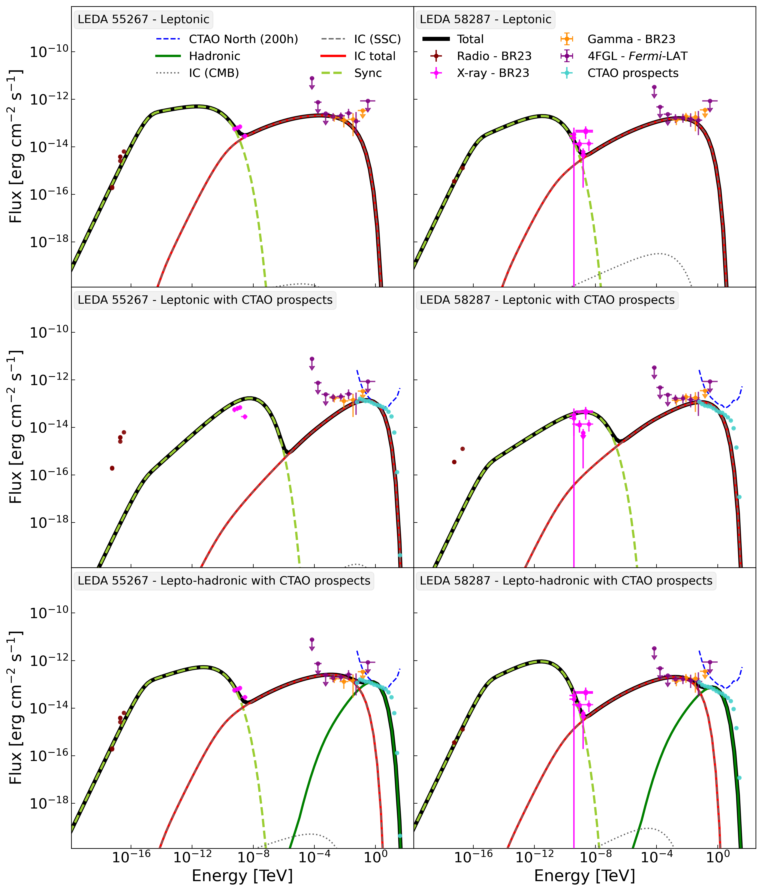
图注：Broadband SED models for LEDA~55267 (left panels) and LEDA~58287 (right panels). From top to bottom, the panels show the leptonic model, the leptonic model with CTAO prospects, and the lepto-hadronic model with CTAO prospects. Data points: brown, magenta, and orange correspond to radio, X-ray, and gamma-ray measurements from~\(\citetalias{Boughelilba_2023},\) respectively; purple to gamma-ray flux points from the 4FGL \(\textit{Fermi}-LAT\) catalog~\(\citep{Abdollahi_2020, Ballet_2023}\); and light-blue to simulated CTAO flux points. Curves: blue dashed, CTAO sensitivity; green solid, hadronic flux contribution; gray dotted, inverse Compton emission from the CMB; gray dashed, synchrotron self-Compton emission from the emitting region; red solid, total inverse Compton emission; olive dashed, synchrotron emission; black solid, total emission.
对应解读：对应“建议重点查看的图表”第4、5、6项，以及“关键图表逐图导读”图4、图5和模型拟合段落中的SED、CTAO模拟点、轻子/轻子-强子模型比较。
入选理由：这是论文辐射结论的核心图，同时展示两个源的宽带SED、纯轻子模型、加入CTAO模拟后的轻子模型和轻子-强子模型，并标出同步辐射、SSC、CMB逆康普顿、强子贡献、总辐射和CTAO灵敏度。它最直接支撑日报中“现有GeV以内数据可由轻子模型解释，但模拟TeV数据偏向轻子-强子模型”的关键判断。
来源与置信度：\(arxiv_source\)；high；\(arxiv_source\) / \(main_paper_arxiv.tex\):figure[6]
Fig07
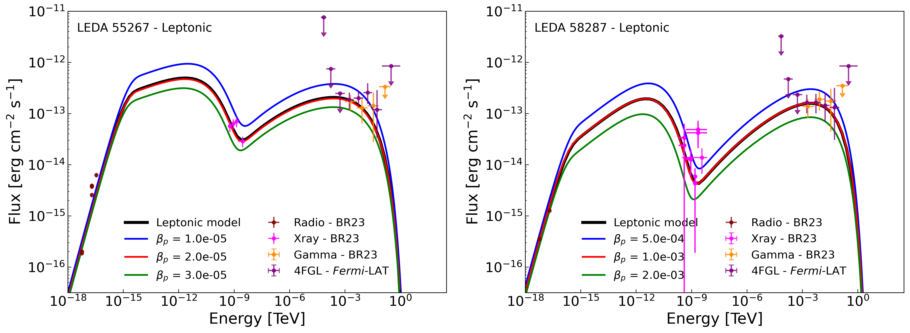
图注：Leptonic model fits for LEDA~55267 (upper panel) and LEDA~58287 (lower panel) for different values of the plasma parameter $\beta_{\rm p}$. In each panel, the black curve corresponds to the reference leptonic model with the parameters listed in Table~\(\ref{tab:parameters-sed},\) while the blue, red, and green curves show the fits obtained for varying $\beta_{\rm p}$. For LEDA~55267, the three curves correspond to $\beta_{\rm p} = 1.0 \times 10^{-5}$, $2.0 \times 10^{-5}$, and $3.0 \times 10^{-5}$, respectively, with the red curve ($\beta_{\rm p} = 2.0 \times 10^{-5}$) providing the best agreement with the data. For LEDA~58287, the curves correspond to $\beta_{\rm p} = 4.0 \times 10^{-4}$, $1.0 \times 10^{-3}$, and $2.0 \times 10^{-3}$, respectively, with the red curve ($\beta_{\rm p} = 1.0 \times 10^{-3}$) providing the best agreement.
对应解读：对应“建议重点查看的图表”第7项，以及“关键结果”和模型拟合段落中关于低等离子体参数β_p、磁化发射区和参数稳健性的讨论。
入选理由：该图直接给出不同β_p取值下两个源的轻子模型SED拟合，能够检验低β_p是否只是单一最佳点还是在有限参数范围内影响谱形。相比单纯参数表，它更适合支撑日报中关于β_p约为10^-5到10^-3、磁压主导和系统偏置风险的解读。
来源与置信度：\(arxiv_source\)；high；\(arxiv_source\) / \(main_paper_arxiv.tex\):figure[7]
Fig02

图注：Tracer fraction, showing the spatial distribution of jet material throughout the simulation.
对应解读：对应“建议重点查看的图表”第1项，以及“关键图表逐图导读”图2中关于喷流物质分布、再准直后破碎、湍流混合和几十秒差距内受限传播的讨论。
入选理由：示踪剂分数图直接显示喷流物质在模拟中的空间分布，是判断喷流是否保持准直、何处扩散混合、是否能传播到大尺度的基础动力学图。它比高能辐射图更直接支撑FR0紧凑形态来自喷流破坏和混合的解释。
来源与置信度：\(arxiv_source\)；high；\(arxiv_source\) / \(main_paper_arxiv.tex\):figure[2]
Fig03
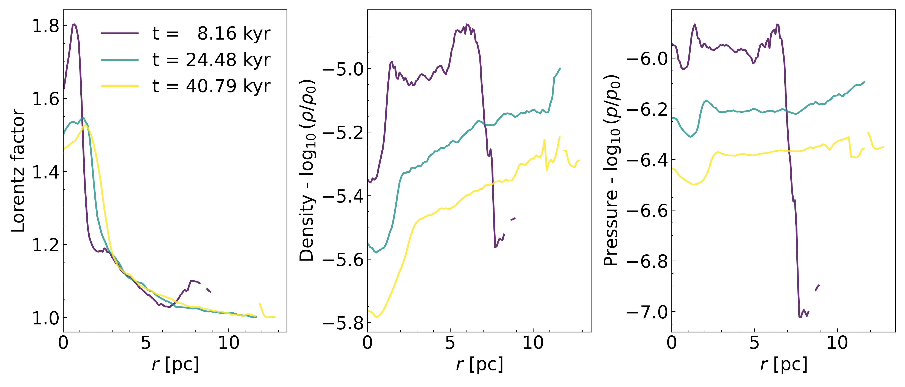
图注：Azimuthally averaged radial profiles of the Lorentz factor (left), rest-mass density (middle), and thermal pressure (right) at three evolutionary times: $t = 8.16$~kyr, $24.48$~kyr, and $40.79$~kyr. Each profile is obtained by averaging the corresponding quantity over cylindrical shells in the plane transverse to the jet axis, restricted to cells where the tracer fraction exceeds $10\%$, thereby isolating the jet material from the ambient medium. The profiles illustrate the rapid radial decline of the Lorentz factor, the progressive density flattening driven by entrainment, and the tendency of the pressure profile to relax towards the external value as the jet evolves.
对应解读：对应“建议重点查看的图表”第2项，以及“关键图表逐图导读”图3中关于洛伦兹因子、密度、压力随演化变化和喷流减速/夹带的诊断。
入选理由：该图给出洛伦兹因子、静质量密度和热压在三个演化时刻的平均径向剖面，能定量展示速度下降、密度因夹带而变平、压力向外部环境松弛。虽然不是严格的轴向速度图，但它是候选图中最接近动力学剖面诊断的图，对验证喷流快速减速和湍流混合很重要。
来源与置信度：\(arxiv_source\)；high；\(arxiv_source\) / \(main_paper_arxiv.tex\):figure[3]
Fig04
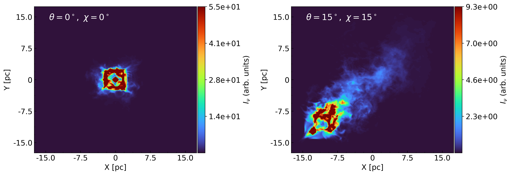
图注：Synthetic synchrotron emission maps of the simulated jet projected onto the $(x, y)$ plane. The upper panel represents LEDA~55267, obtained without jet reorientation ($\theta = 0^{\circ}$, $\chi = 0^{\circ}$), corresponding to a configuration approximately aligned with the line of sight. The lower panel represents LEDA~58287, obtained after rotating the jet by~$\theta = 15^{\circ}$ around the $x$ axis and~$\chi = 15^{\circ}$ around the $y$ axis, producing a more asymmetric projected morphology consistent with the observed radio structure. The color bar indicates the synchrotron intensity in arbitrary units.
对应解读：对应“建议重点查看的图表”第3项，以及日报中关于合成射电形态与观测紧凑结构对照的讨论。
入选理由：该图展示模拟喷流的合成同步辐射图，并分别通过不同投影角对应LEDA 55267和LEDA 58287，可用于检查模拟是否不仅产生紧凑尺度，也能再现核心主导和投影不对称的射电形态。它在连接流体模拟与观测形态方面比单独的IC图更有价值。
来源与置信度：\(arxiv_source\)；high；\(arxiv_source\) / \(main_paper_arxiv.tex\):figure[4]
Fig01
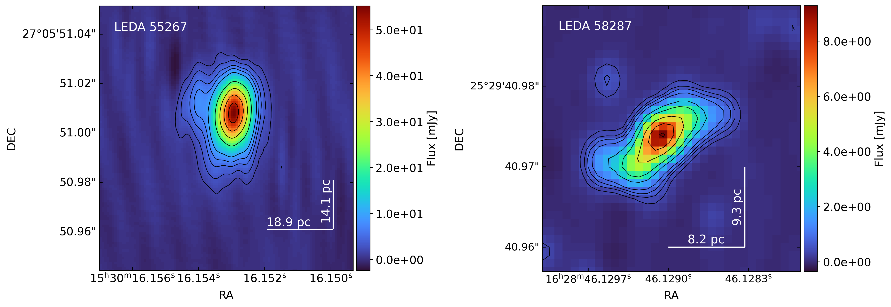
图注：Radio maps of LEDA~55267 and LEDA~58287. The upper panel shows LEDA~55267 observed with the EVN at 1.7~GHz, with a peak flux density of $5.5 \times 10^{-2}$~Jy\,beam$^{-1}$ and contour levels of $(1.5,\, 3.0,\, 5.0,\, 7.0,\, 10.0,\, 20.0,\, 30.0,\, 40.0,\, 50.0) \times 10^{-3}$~Jy\,beam$^{-1}$. The lower panel shows LEDA~58287 observed with the VLBA at 1.5~GHz, with a peak flux density of $9.3 \times 10^{-3}$~Jy\,beam$^{-1}$ and contour levels of $(-0.3,\, 0.3,\, 0.5,\, 0.7,\, 1.0,\, 2.0,\, 3.0,\, 5.0,\, 7.0,\, 9.0) \times 10^{-3}$~Jy\,beam$^{-1}$. Both sources show compact morphologies consistent with jet structures on parsec scales. Radio maps adapted from~\(\citet{Giovannini_2023}.\)
对应解读：对应“关键图表逐图导读”图1，以及“建议重点查看的图表”第3项中关于实际射电形态、核心主导和是否存在延展结构的检查。
入选理由：这是两个目标源的实际EVN/VLBA射电图，给出峰值流量和等值线水平，是判断FR0紧凑形态和解析尺度喷流结构的观测基准。它为后续模拟形态图和合成辐射图提供必要参照，尤其适合提醒读者区分未探测到延展结构与真实不存在延展结构。
来源与置信度：\(arxiv_source\)；high；\(arxiv_source\) / \(main_paper_arxiv.tex\):figure[1]
强相关工作
这篇工作与 FR0 族群研究、FR I 喷流减速理论和紧凑活动星系核高能辐射模型直接相关。可把它放在三个关键词组下检索：一是“FR0 radio galaxies compact jets”，用于理解 FR0 的样本定义、宿主星系和射电核心主导统计；二是“relativistic hydrodynamic jet recollimation instability deceleration”，用于对照再准直激波和湍流减速的数值模拟文献；三是“FR0 gamma-ray TeV lepto-hadronic SED”，用于比较轻子与强子模型在高能谱中的退化和判据。
与传统观点的张力在于，FR0 常被解释为年轻源、间歇源或低功率 FR I 的未发展阶段；本文更强调喷流早期动力学破坏和高磁化发射区。它不是否定年轻或间歇解释，而是提出一种可由形态模拟和 TeV 观测共同检验的机制。未来若 CTAO 给出严格 TeV 上限，可能削弱轻子-强子预测；若 VLBI 发现稳定长距离准直结构，则也会挑战“几十秒差距内破坏”的普适性。
相似工作：
- https://arxiv.org/abs/2605.21320
基础理论 / 方法工作：
- https://ui.adsabs.harvard.edu/abs/1974MNRAS.167P..31F/abstract
相反观点 / 张力线索：
（未提供）
7. Multi-wavelength Emission for a Post-merger Magnetar: The Magnetar-Driven Poynting Jet and Its Associated Pulsar Wind Nebula
- 来源：arXiv / astro-ph.HE
- 链接：https://arxiv.org/abs/2605.20632v1
- 作者：Yun-Peng Li, Da-Bin Lin, Ning-Yuan Zhang, En-Wei Liang
- 评分：novelty 7/10，importance 7/10，relevance 9/10，final 8.70/10
- 推荐理由：后并合磁星驱动Poynting喷流及PWN的多波段模型，预测晚期GeV bump和TeV分量，可联系GRB、PWN和TeV源，属于高优先级伽马射线理论。
中文题目：并合后磁星的多波段辐射：磁星驱动的坡印廷喷流及其伴随脉冲星风星云
做了什么：这篇文章建立了一个用于双中子星并合后长寿命磁星的多波段辐射模型：新生快速旋转磁星驱动以坡印廷通量为主的相对论喷流，喷流在并合抛射物和外部介质中传播，形成正向激波、反向激波以及夹在中间的脉冲星风星云。作者同时跟踪喷流动力学、磁能耗散、热辐射、同步辐射和逆康普顿辐射，给出从早期光学/紫外热辐射、随后喷流供能的 X 射线平台，到晚期 GeV 凸起和 TeV 分量的统一图像。核心结论是：反向激波在多数参数下很长寿，系统变透明后会出现特征性的 X 射线平台，而脉冲星风星云正向激波对喷流光子的外逆康普顿散射可自然产生晚期 GeV 过量，并预示并合后磁星系统可能是 TeV 光子源。
为什么重要：双中子星并合后的中心引擎究竟是迅速坍缩成黑洞，还是能维持一段时间的强磁场毫秒磁星，是解释短伽马暴余辉、千新星额外供能和高能辐射的关键分叉。这篇工作重要之处在于，它没有只把磁星当成一个注入光度函数，而是把磁星喷流、抛射物、反向激波、正向激波和脉冲星风星云放在同一个动力学与辐射框架中，直接连接多波段可观测信号。
理论 / 观测 / 仪器方法价值：对理论而言，它提供了并合后磁星喷流和脉冲星风星云协同演化的半解析/数值框架，可用于区分热扩散辐射、喷流耗散辐射和星云非热辐射。对观测而言，它给出了早期热成分、X 射线平台、晚期 GeV 凸起与 TeV 辐射之间的时序关系，有助于设计 Swift、Fermi、CTA 或 LHAASO 类设施的联合搜索。对方法而言，它提醒读者不能只用单一余辉幂律去拟合并合后高能光变曲线，因为反向激波寿命、透明化时间和外逆康普顿目标光子场都会改变谱能分布。
为什么应该关注：如果你关心短伽马暴中心引擎、并合后剩余物是否为长寿命磁星、千新星额外能量注入，或者未来 TeV 望远镜如何捕捉多信使事件的高能余辉，这篇文章值得读。它的可检验预言很直接：同一类事件中，热光学/紫外信号、X 射线平台和晚期 GeV/TeV 成分不应彼此孤立，而应通过磁星自转能、喷流磁耗散和星云激波动力学联系起来。
展开详细解读：文章讲解、背景、理论、重点章节、图表与相关工作
文章详细讲解
科学问题：双中子星并合后如果形成的是一个新生、快速旋转、强磁场磁星，而不是立即形成黑洞，那么它会持续释放巨大的自转能。传统模型常把这种能量注入写成一个随时间衰减的中心引擎光度，用来解释短伽马暴的 X 射线平台或千新星额外增亮。但真实系统更复杂：磁星风可能高度磁化，喷流需要穿过并合抛射物，传播过程中会形成激波结构，并在接触间断面附近充满热粒子、磁场和辐射场。本文要回答的是：这样一个磁星驱动的坡印廷喷流及其伴随脉冲星风星云，能否同时解释早期热辐射、X 射线平台和晚期高能伽马射线过量。
作者怎么做：作者构建了喷流—抛射物—脉冲星风星云的动力学演化模型，跟踪喷流在抛射物和外部介质中的正向激波与反向激波。喷流本身以磁能为主，并允许磁能耗散为辐射和粒子能量。模型中包含几个相互耦合的部分：磁星自转降能提供中心功率；喷流头和激波结构决定能量如何传给抛射物与星云；光学深度决定早期辐射是否被热化；系统变透明后，喷流耗散可以直接贡献 X 射线；晚期脉冲星风星云中的电子通过同步辐射和逆康普顿散射产生从 X 射线到 GeV/TeV 的非热信号。
关键结果：一个突出的动力学结论是，反向激波在多数情况下是长寿命的。它起初落后于接触间断面，之后在喷流突破到外部介质以后，反向激波、接触间断面和正向激波逐渐趋于重合。这种演化使辐射自然呈现阶段性：早期系统光学厚，辐射主要来自被加热抛射物的热成分；透明化以后，喷流耗散产生的辐射可以表现为 X 射线平台；更晚期，脉冲星风星云正向激波中的相对论电子产生同步辐射和逆康普顿辐射。特别是，喷流光子作为外部种子光子被正向激波电子上散射，可形成晚期 GeV 凸起，同时伴随可观的 TeV 分量。
局限和下一步：模型的说服力取决于若干难以直接测量的参数，包括磁星初始自转周期、偶极磁场、喷流初始磁化度、磁耗散效率、抛射物质量和速度分布、电子加速效率、磁场能量分数以及外部介质密度。二维/三维喷流传播、非轴对称抛射物、磁重联的微观效率、伽马射线在本地和宇宙背景光中的吸收，都可能改变定量预言。下一步最有价值的是把该模型嵌入真实事件拟合，联合光学、X 射线、Fermi-LAT 和 TeV 上限，检验晚期 GeV 凸起是否真的与早期平台和热成分共享同一中心引擎参数。
背景知识
研究对象是双中子星并合后的中心剩余物和它驱动的多波段暂现源。并合后可能形成超大质量中子星、短寿命差分旋转中子星、长寿命稳定磁星，或很快坍缩为黑洞。若剩余物是毫秒磁星，其可用自转能可达典型短伽马暴辐射能量以上，且释放时间可覆盖秒到数万秒，因此很自然被用来解释短伽马暴之后的 X 射线平台、扩展发射和某些千新星的额外供能。
历史上，短伽马暴余辉的标准解释多采用黑洞—吸积盘中心引擎加外激波余辉。后来 Swift 发现不少短暴具有 X 射线平台或陡降，这促使人们引入磁星自转降能模型。与此同时，双中子星并合抛射物会产生千新星，抛射物的不透明度、放射性加热和中心引擎注入共同决定早期光学/红外光变曲线。GW170817 之后，人们更加重视几何结构、喷流突破、茧状物和离轴观测效应，但长寿命磁星场景仍是重要备选。
本文所在的问题现在值得重新看，是因为高能观测窗口正在扩大。Fermi-LAT 已经能在部分伽马暴中探测到持续到晚期的 GeV 光子；切伦科夫望远镜和广角高海拔阵列正在把 TeV 暂现源搜索推进到短暴和引力波触发事件。若磁星驱动的脉冲星风星云真能在并合后产生 TeV 分量，那么未来多信使触发的快速响应将直接检验中心引擎模型，而不只是拟合低能光变曲线。
该领域常见误区有三点。第一，把 X 射线平台简单等同于磁星存在并不充分，因为能量注入、观测角、余辉微物理参数变化也能产生类似平台。第二，把千新星热辐射与高能非热辐射完全分开也不合理，因为中心引擎注入、抛射物光学深度和喷流传播会把两者耦合起来。第三，晚期 GeV/TeV 信号不一定只来自标准外激波同步辐射；如果存在强烈喷流光子场，外逆康普顿过程可能成为关键。
基础理论 / 方法脉络
最基本的物理图像是：新生磁星像一个快速旋转的磁偶极子，把自转能以磁化风或坡印廷通量形式释放出去。若磁轴与旋转轴不完全对齐，偶极辐射和磁层风会使磁星逐渐自转降能。对于毫秒周期和 \(10^{14}\) 到 \(10^{16}\,\mathrm{G}\) 量级磁场，自转能和降能光度都足以影响短伽马暴和并合后暂现源。
喷流传播部分可以理解为一个相对论活塞问题：中心引擎不断向外注入能量，喷流遇到较慢的并合抛射物和外部介质，会在前方形成正向激波，在后方形成反向激波，中间由接触间断面分开。正向激波扫掠外部物质，反向激波处理喷流物质；两者之间的高压区可被视为脉冲星风星云或喷流泡。本文强调反向激波并非瞬间消失，而是在很多参数下长期影响能量转换和辐射。
辐射部分涉及热与非热两类机制。早期抛射物光学深，中心注入和激波能量被多次散射并热化，观测者看到的是近似热扩散辐射。随着半径增大、密度降低，光学深度下降，喷流耗散和星云粒子辐射开始直接逃逸。非热辐射主要包括同步辐射和逆康普顿散射；前者由相对论电子在磁场中回旋辐射产生，后者由电子把低能光子上散射到高能段。
本文特有的关键设定是，种子光子场不只来自星云本身的同步光子，也可来自喷流耗散产生的光子。因此正向激波电子可以通过外逆康普顿过程产生 GeV 到 TeV 辐射。这里的主要退化包括：更大的电子能量分数和更高的种子光子密度都能增强逆康普顿分量；更强的磁场会增强同步辐射但也改变电子冷却；更高外部密度既改变激波动力学也改变辐射效率。观测上若只有单波段光变，通常很难唯一分辨这些参数。
公式与推导
第一步是中心引擎能量库。把新生磁星近似为转动惯量 \(I\)、角速度 \(\Omega_0\) 的刚体，其初始自转能为
这里 \(P_0=2\pi/\Omega_0\)，\(I_{45}=I/10^{45}\,\mathrm{g\,cm^2}\)，\(P_{0,-3}=P_0/10^{-3}\,\mathrm{s}\)。该式说明毫秒磁星的能量库足以驱动短暴平台、千新星额外热化和高能星云辐射。
第二步是偶极自转降能。若磁星半径为 \(R_*\)、表面偶极场为 \(B_p\)，真空偶极近似给出
对应的自转降能时间为
这些量控制能量注入持续多久，因此直接影响 X 射线平台长度和晚期星云供能。
第三步是喷流头和激波的动力学量纲。设喷流各向同性等效光度为 \(L_j\)，开角为 \(\theta_j\)，在半径 \(r\) 处截面积为 \(\Sigma_j\approx \pi\theta_j^2r^2\)，环境密度为 \(\rho_a\)。常用无量纲喷流头强度参数为
当 \(\tilde{L}\gg1\) 时喷流头相对论性前进，当 \(\tilde{L}\ll1\) 时传播受到抛射物强烈阻滞。该参数把中心引擎功率、几何结构和抛射物密度联系起来。
第四步是抛射物透明化。对质量为 \(M_{\rm ej}\)、平均速度为 \(v_{\rm ej}\)、不透明度为 \(\kappa\) 的近似球对称抛射物，光学深度可写为
令 \(\tau(t_{\rm tr})=1\) 得到透明化时间
在 \(t
第五步是非热电子分布。激波加速电子常被写成幂律分布
其中 \(\gamma_e\) 是电子洛伦兹因子，\(p\) 是谱指数，\(K\) 是归一化常数，\(\gamma_m\) 与电子能量分数和激波强度有关。该分布决定同步辐射和逆康普顿辐射的谱斜率。
第六步是同步辐射特征频率。若下游磁场为 \(B'\)，整体洛伦兹因子为 \(\Gamma\)，红移为 \(z\)，电子 \(\gamma_e\) 的观测特征频率近似为
该式说明提高 \(B'\)、\(\Gamma\) 或 \(\gamma_e\) 都会把同步峰推向更高能段，但强磁场也会加快冷却。
第七步是外逆康普顿能量提升。在 Thomson 极限下，种子光子频率 \(\nu_{\rm seed}\) 被电子上散射后的观测频率近似为
若 \(4\gamma_e h\nu_{\rm seed}'\gtrsim m_ec^2\)，则进入 Klein-Nishina 区，截面下降，TeV 通量会被压低。因此 GeV/TeV 预言对种子光子能量和电子最高能量很敏感。
第八步是用能量密度估计逆康普顿相对强度。若共动系种子光子能量密度为 \(U'_{\rm ph}\)，磁能量密度为 \(U'_B=B'^2/(8\pi)\)，则 Compton 参数近似为
当喷流光子场强、且 \(Y\gtrsim1\) 时，外逆康普顿分量可与同步分量相当甚至超过它，形成本文强调的晚期 GeV 凸起和 TeV 成分。
模型拟合 / 应用方法
这类模型实际拟合时，核心参数可分为四组。第一组是中心引擎参数，包括磁星初始周期 \(P_0\)、偶极磁场 \(B_p\)、半径 \(R_*\)、转动惯量 \(I\) 以及喷流能量分配效率。它们决定 \(E_{\rm rot}\)、\(L_{\rm sd,0}\) 和 \(t_{\rm sd}\)，从而控制平台光度与持续时间。第二组是环境和几何参数，包括抛射物质量 \(M_{\rm ej}\)、速度 \(v_{\rm ej}\)、不透明度 \(\kappa\)、喷流开角 \(\theta_j\)、外部介质密度以及观测角。
第三组是辐射微物理参数，包括电子能量分数、磁场能量分数、电子谱指数 \(p\)、粒子加速上下限、磁耗散效率以及逆康普顿种子光子场。拟合时通常需要同时比较光变曲线和谱能分布，否则参数退化非常严重。例如较高的电子能量分数、较高的外部密度和较强种子光子场都可能增强高能通量；较大的不透明度和较大的抛射物质量都会推迟透明化时间。
统计上，可以把多波段数据点和上限放入联合似然。光学/紫外热辐射通常约束温度、半径和扩散时间；X 射线平台约束中心引擎降能时间与喷流耗散效率；GeV/TeV 数据或上限约束非热电子、逆康普顿效率和高能吸收。残差诊断应重点看阶段转换处：热成分衰减到 X 射线平台的时间是否与透明化时间一致，平台结束是否与 \(t_{\rm sd}\) 或激波动力学转折一致，晚期 GeV 凸起是否在同步辐射外推之上。
模型可能失败的地方也很清楚。若真实喷流强烈非轴对称或观测角很大，一维或准球对称动力学会误判突破时间和光度。若磁耗散主要发生在更内区或更外区，喷流光子场对外逆康普顿的贡献会改变。若本地 \(\gamma\gamma\) 吸收或宇宙背景光吸收很强，TeV 预言可能显著降低。实际应用时，最好用贝叶斯层级模型或网格扫描展示后验相关性，而不是只给一组最佳拟合曲线。
重点章节 / 结果段落怎么读
-
引言与物理动机：读者应先抓住作者要统一解释的三类信号，即早期热辐射、X 射线平台和晚期 GeV/TeV 非热分量。这里的重点不是单个波段能否拟合，而是这些信号是否可由同一个并合后磁星引擎自然串联。
-
动力学模型：这是全文最关键的技术部分。应重点看喷流如何穿过抛射物、正向激波和反向激波如何定义、脉冲星风星云如何被注入能量，以及反向激波为何在多数参数下长寿。这个部分决定后面所有辐射阶段的时间排序。
-
辐射过程：建议分开读热辐射、喷流耗散辐射、同步辐射和逆康普顿辐射。特别要注意作者如何处理光学深度从厚到薄的转变，因为这决定早期能量是热化为光学/紫外，还是直接以 X 射线或更高能光子逃逸。
-
参数研究与光变曲线：这里应看不同磁星磁场、初始周期、抛射物质量、喷流功率和环境密度如何改变多波段光变。重点不是记住每条曲线，而是理解哪些参数控制峰值时间，哪些参数控制高能峰值亮度。
-
讨论与观测含义：这一部分连接短伽马暴、并合后磁星和未来 TeV 搜索。读者应关注作者是否给出可证伪预言，例如晚期 GeV 凸起与早期 X 射线平台之间的关联，以及哪些事件最适合用 Fermi-LAT、CTA 或 LHAASO 进行检验。
建议重点查看的图表
-
系统结构或动力学示意图：看磁星、坡印廷喷流、正向激波、反向激波、接触间断面、抛射物和外部介质的相对位置。关键是确认作者所说的脉冲星风星云具体位于哪一层，以及反向激波如何随时间移动。
-
激波半径或洛伦兹因子随时间演化图：重点看反向激波、接触间断面和正向激波是否在喷流突破后趋于重合。若图中不同曲线的间距变化明显，这就是支撑“反向激波长寿命”的主要证据。
-
光学深度或透明化时间诊断：看 \(\tau\) 从大于 \(1\) 到小于 \(1\) 的转变时间。这个时间应与热辐射主导阶段结束、X 射线平台开始显著化相对应。
-
多波段光变曲线：检查光学/紫外、X 射线、GeV 和 TeV 各波段的峰值时间、衰减斜率和阶段转变。特别要看晚期 GeV 凸起是否独立于标准同步余辉外推。
-
谱能分布图：看同步辐射、同步自康普顿和外逆康普顿分量如何叠加。关键诊断是 GeV/TeV 区域是否由外逆康普顿主导，以及 Klein-Nishina 抑制是否改变高能端斜率。
-
参数依赖图或表格：检查改变 \(B_p\)、\(P_0\)、\(M_{\rm ej}\)、\(\theta_j\)、外部密度和微物理参数时，平台亮度、透明化时间和 TeV 通量如何变化。这些图能告诉你模型预言是否稳健。
关键图表逐图导读
图 1：如果论文给出结构示意图，横向通常表示从中心磁星向外的径向层次，标出喷流、反向激波、接触间断面、正向激波、抛射物和外部介质。读图时不要把脉冲星风星云理解成孤立球形泡；在本文模型里，它与喷流激波结构和接触间断面耦合，决定后续非热粒子的能量来源。
图 2：动力学演化图通常以观测时间或源系时间为横轴，以半径、速度或洛伦兹因子为纵轴，不同线型代表正向激波、反向激波和接触间断面。主要结论应是反向激波长期存在并逐步靠近其他界面。读图陷阱是只看最终重合而忽略早期滞后阶段；早期滞后正是能量在星云中积累并影响后续辐射的原因。
图 3：光学深度和热辐射相关图通常展示 \(\tau(t)\)、温度、热光度或光学/紫外光变。横轴若为对数时间，透明化转折可能看起来很平滑，但物理上它标志着辐射机制切换。应检查热峰时间是否与 \(M_{\rm ej}\)、\(v_{\rm ej}\) 和 \(\kappa\) 给出的扩散/透明化尺度一致。
图 4：X 射线光变图应重点看平台段的斜率、持续时间和结束后的衰减。若平台主要由喷流耗散供能，其时间尺度应与磁星降能和系统透明化共同相关。读图时要避免把所有平坦段都解释为中心引擎注入；也要看是否存在能够由标准外激波产生的替代解释。
图 5：GeV/TeV 光变或谱能分布图是本文最值得检查的高能预言。坐标轴通常是时间—能量通量，或频率/能量—\(\nu F_\nu\)。应看外逆康普顿分量是否在 GeV 处形成凸起，并在 TeV 区仍保持可观通量。陷阱是忽略 \(\gamma\gamma\) 吸收、Klein-Nishina 抑制和宇宙背景光吸收，这些都会影响 TeV 可探测性。
图 6：若有参数扫描图，应把它当作模型可证伪性的核心图来读。看不同 \(B_p\)、\(P_0\)、抛射物质量或环境密度下，早期热峰、X 射线平台和晚期 GeV 凸起是否同步变化。若多波段特征需要彼此矛盾的参数才能拟合，模型统一性的说服力就会下降。
论文原图 / 可嵌入图片
Fig01
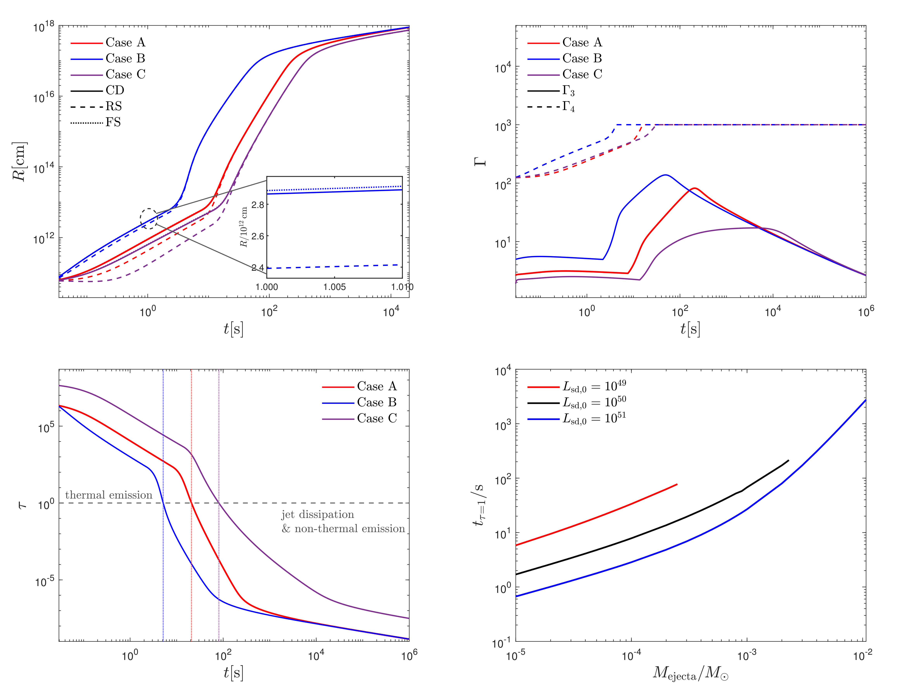
图注：Evolution of the dynamical quantities for different model parameters. Upper left: time evolution of the radii of the contact discontinuity (solid), reverse shock (dashed), and forward shock (dotted). An inset in the upper-left panel shows a zoomed view of the radii around $t\sim 1$~s for Case~B. Upper right: time evolution of the Lorentz factors in regions~3 (solid) and~4 (dashed). Lower left: time evolution of the ejecta optical depth $\tau$; the horizontal dashed line marks $\tau=1$, above which the emission is dominated by thermal radiation from the ejecta, whereas below it the jet dissipation and non-thermal components dominate. The vertical dotted lines indicate the corresponding transparency times $t_{\tau=1}$ for the three cases. In the upper-left, upper-right, and lower-left panels, the red, blue, and purple curves correspond to Case~A ($L_{\rm sd,0}=10^{49}\,\mathrm{erg\,s^{-1}}$, $M_{\rm ej}=10^{-4}\,M_\odot$), Case~B ($L_{\rm sd,0}=10^{50}\,\mathrm{erg\,s^{-1}}$, $M_{\rm ej}=10^{-4}\,M_\odot$), and Case~C ($L_{\rm sd,0}=10^{50}\,\mathrm{erg\,s^{-1}}$, $M_{\rm ej}=10^{-3}\,M_\odot$), respectively. Lower right: transparency time $t_{\tau=1}$ as a function of ejecta mass $M_{\rm ejecta}$ for different initial spin-down luminosities, $L_{\rm sd,0}=10^{49}$, $10^{50}$, and $10^{51}\,\mathrm{erg\,s^{-1}}$.
对应解读：对应“建议重点查看的图表”第2、3、6项，以及“关键图表逐图导读”中图2、图3、图6关于激波动力学、透明化时间和参数依赖的解读。
入选理由：这张图同时给出接触间断面、反向激波、正向激波半径随时间演化，直接支撑“反向激波长寿命并在突破后趋于重合”的核心动力学结论；还包含洛伦兹因子、光学深度跨越τ=1的透明化诊断，以及透明化时间随抛射物质量和自转降能光度的参数依赖，是整篇日报中最关键的物理证据图。
来源与置信度：\(arxiv_source\)；high；\(arxiv_source\) / ms.tex:figure[1]
Fig02
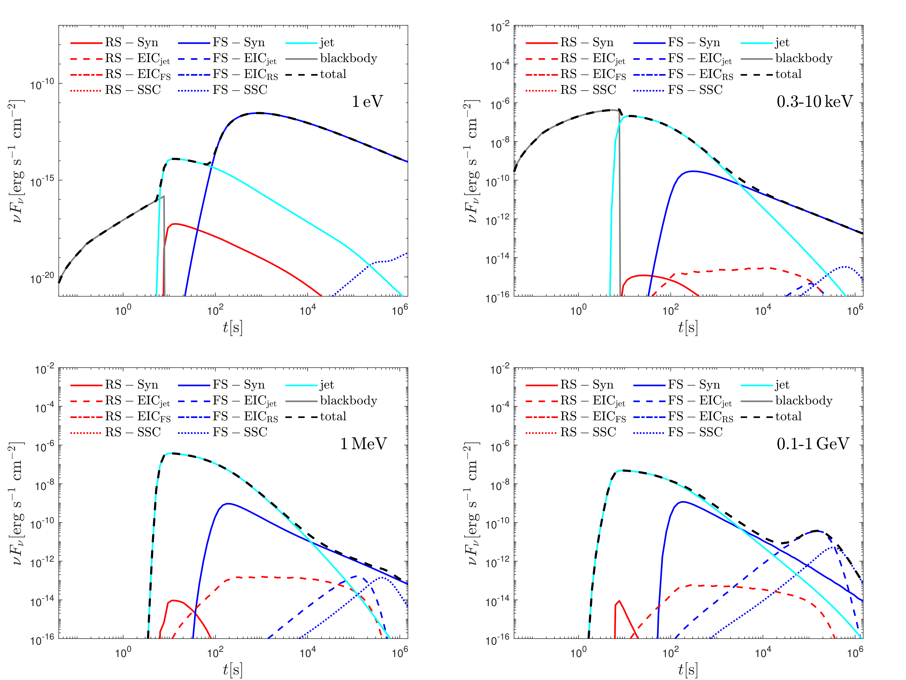
图注：Multi-band light curves of the jet and PWN emission for Case~B. From the upper left to the lower right, the panels show the light curves in the 1~eV, 0.3--10~keV, 1~MeV, and 0.1--1~GeV bands, respectively. Cyan, black, red, and blue lines represent emission from the jet, ejecta blackbody, reverse shock, and forward shock, respectively. Solid lines denote synchrotron radiation from the shocks. Red and blue dashed lines indicate external inverse-Compton (EIC) emission in which jet photons serve as the seed photons. Dash-dotted lines show EIC emission arising from cross-scattering, where seed photons from one shock region are upscattered by electrons in the other region (i.e., forward–reverse shock cross-scattering). Dotted lines represent the synchrotron self-Compton (SSC) component. The black dashed line shows the total emission.
对应解读：对应“建议重点查看的图表”第4项多波段光变曲线，以及“关键图表逐图导读”中图4、图5关于X射线平台、GeV凸起和不同辐射分量分解的解读。
入选理由：这张图展示Case B下1 eV、0.3--10 keV、1 MeV和0.1--1 GeV多波段光变，并区分喷流、抛射物黑体、反向激波、正向激波、同步辐射、SSC和EIC分量。它最直接检验早期热辐射、X射线平台和晚期GeV高能成分是否能由同一模型连续解释。
来源与置信度：\(arxiv_source\)；high；\(arxiv_source\) / ms.tex:figure[2]
Fig04
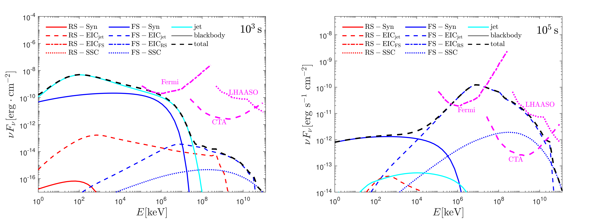
图注：Spectra of the jet and PWN emission above 1~keV for Case~B at $t = 10^3$~s (left panel) and $t = 10^{5}$~s (right panel). Cyan, black, red, and blue lines correspond to emission from the jet, ejecta blackbody, reverse shock, and forward shock, respectively. Solid lines denote synchrotron radiation from the shocks. Red and blue dashed lines indicate external inverse-Compton (EIC) emission produced by scattering of jet photons. Dash-dotted lines represent EIC emission due to cross-scattering between the forward and reverse shock regions. Dotted lines show the synchrotron self-Compton (SSC) component. The black dashed line represents the total emission. Magenta dash-dotted, dashed, and dotted lines correspond to the sensitivity curves of Fermi/LAT, CTA, and LHAASO, respectively, evaluated at $t = 10^3$~s (left) and $t = 10^5$~s (right).
对应解读：对应“建议重点查看的图表”第5项谱能分布图，以及“关键图表逐图导读”中图5关于GeV/TeV谱成分、外逆康普顿主导性和探测可行性的解读。
入选理由：这张图给出Case B在10^3 s和10^5 s的高能谱能分布，并明确分解同步辐射、SSC、喷流光子EIC和前后激波交叉散射成分，同时叠加Fermi/LAT、CTA和LHAASO灵敏度曲线。它是判断晚期GeV凸起和TeV分量是否可观测、是否由EIC主导的核心图。
来源与置信度：\(arxiv_source\)；high；\(arxiv_source\) / ms.tex:figure[4]
Fig03
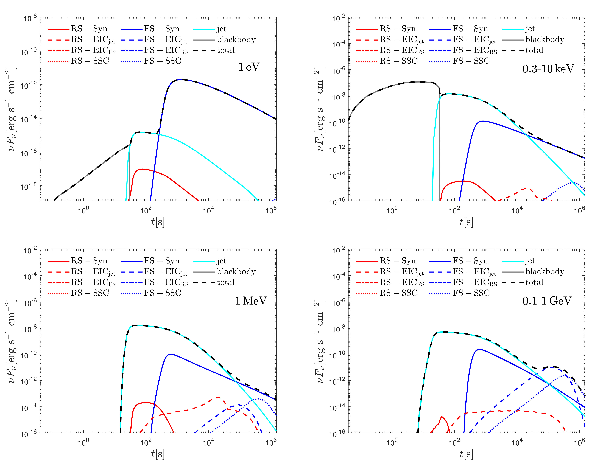
图注：Same as Figure~\(\ref{fig2},\) but corresponding to Case~A.
对应解读：对应“建议重点查看的图表”第4、6项，以及“关键图表逐图导读”中关于不同参数情形下多波段光变稳健性的讨论。
入选理由：这张图是Case A的多波段光变曲线，与Fig02的Case B形成参数对照，可用于检查较低初始自转降能光度下光学、X射线、MeV和GeV各分量如何变化。虽然其科学信息与Fig02类似，但对评估模型预言的参数敏感性和稳健性仍有价值。
来源与置信度：\(arxiv_source\)；high；\(arxiv_source\) / ms.tex:figure[3]
强相关工作
这篇工作与短伽马暴磁星平台模型、并合后千新星中心引擎注入模型、以及伽马暴余辉中的逆康普顿高能辐射模型密切相关。相似方向可检索关键词包括 “short gamma-ray burst magnetar plateau”、“post-merger magnetar wind nebula”、“binary neutron star merger central engine”、“Poynting-flux dominated jet breakout”、“external inverse Compton gamma-ray burst afterglow”。
它也与黑洞—吸积盘中心引擎解释存在竞争关系。黑洞喷流模型可自然解释短暴瞬时辐射和某些结构化喷流余辉，但对长时间平台和持续高能注入需要额外机制；磁星模型能提供长时标能量库，却必须面对能量过注入、重子污染、喷流准直和坍缩时间等问题。若观测到晚期 GeV/TeV 分量与早期平台存在系统关联，将支持本文这类磁星—星云图像；若大量平台事件没有任何高能对应物，或 TeV 上限显著低于模型预言，则会对外逆康普顿效率和磁星长期存活提出压力。
相似工作：
- https://arxiv.org/abs/2605.20632
基础理论 / 方法工作：
（未提供）
相反观点 / 张力线索：
（未提供）
8. Guide-Field-mediated Multiscale Instabilities in Relativistic Reconnection
- 来源：arXiv / astro-ph.HE
- 链接：https://arxiv.org/abs/2605.20318v1
- 作者：Pranab J Deka, Fabio Bacchini, Muni Zhou, Camille Granier
- 评分：novelty 7/10，importance 8/10，relevance 8/10，final 8.70/10
- 推荐理由：三维真实质量比PIC模拟研究导向场如何调控相对论重联、漂移 kink/tearing 模式和非热粒子加速；对喷流、脉冲星风、磁层等高能源辐射机制有可复用意义。
中文题目：Guide-Field-mediated Multiscale Instabilities in Relativistic Reconnection
做了什么：本篇论文已通过推荐筛选，但自动详细解读生成失败。可先根据题目和摘要判断阅读优先级：We investigate magnetic-energy dissipation, current-sheet dynamics, and nonthermal particle acceleration in three-dimensional relativistic reconnection in an electron--ion plasma with a realistic mass ratio. Using particle-in-cell simulations of a double Harris current sheet, we explore a range of ion magnetisations and guide-field strengths to determine how guide fields regulate the overall magnetic energy dissipation. At low magnetisation, $σ_i=0.1$, increasing the guide field suppresses reconnection: magnetic-energy dissipation decreases, the growth of tearing modes is weakened, and nonthermal particle acceleration remains inefficient. At higher magnetisations, $σ_i=1$ and $σ_i=5$, the behaviour changes qualitatively. In the zero-guide-field case, strong drift-kink activity corrugates and broadens the current sheet, inhibiting efficient tearing-mediated reconnection. A weak guide field suppresses this drift-kink-driven disruption, allowing the current sheet to remain laminar and more coherent and thereby enhancing magnetic-energy dissipation. However, once the guide field becomes too strong, reconnection is again suppressed: the onset is delayed, tearing activity weakens, current-sheet compression is reduced, and the system retains a larger fraction of its initial magnetic energy. This non-monotonic behaviour is reflected consistently in magnetic-energy evolution, Fourier analysis of the tearing and kink modes, current-sheet thickness, and nonthermal particle acceleration. The most dissipative cases are not necessarily the zero-guide-field runs, but rather those in which the guide field balances drift-kink suppression without strongly impeding the tearing modes. Our results show that the overall system evolution is controlled not only by the available magnetic energy, but also by the guide-field-regulated morphology and stability of the reconnecting current sheet.
为什么重要：这篇论文在今日候选中通过了本地推荐阈值，说明它与当前高能天体物理兴趣方向或质量标准较匹配；详细内容建议优先查看原文摘要、结论和图表。
理论 / 观测 / 仪器方法价值：由于 LLM 摘要 JSON 解析失败，本节保留为安全占位，不编造论文未确认的公式、图号或链接。
为什么应该关注：日报仍保留这篇论文，是为了避免单篇摘要失败导致整份日报缺失。请把它作为需要人工快速复核的高优先级候选。
展开详细解读：文章讲解、背景、理论、重点章节、图表与相关工作
文章详细讲解
本文要回答的科学问题可以概括为：在真实质量比电子--离子三维相对论电流片中，导向场究竟只是抑制重联，还是会通过调控三维不稳定性而在某些参数区间增强磁能耗散和非热加速？摘要给出的答案是非单调的：低磁化 $\sigma_i=0.1$ 中导向场增加后 tearing 增长变弱、磁能耗散下降、非热加速低效；较高磁化 $\sigma_i=1,5$ 中，零导向场反而会被强 drift-kink 活动破坏片层相干性，弱导向场先抑制 kink、增强 tearing-mediated reconnection，强导向场再抑制撕裂和压缩。
方法上，作者使用三维 PIC 模拟 double Harris current sheet，并扫描离子磁化和导向场强度。PIC 的优势在于可以自洽推进粒子和电磁场，直接解析电子/离子惯性尺度、非理想电场和非热粒子加速，而不需要预设电阻率或热传导闭合。阅读方法部分应核查：$B_0$、$B_g$、片厚、背景密度、温度、漂移速度、边界条件、盒子尺寸、网格分辨率、每胞粒子数、时间步长和质量比，因为这些都会决定 tearing 和 drift-kink 的线性增长率以及非线性饱和。
关键结果的逻辑链应按“形态—模态—能量—粒子谱”来理解。形态上，零导向场高磁化片层被 kink 扭曲、展宽，重联区域不够相干；弱导向场让片层更平直、更薄，tearing 更容易产生有效磁岛/磁通绳；强导向场则让 onset 延迟、片层压缩弱。模态上，傅里叶分析应显示 tearing 相关波数和 kink 相关波数随时间的增长、饱和和相对强弱。能量上，最耗散的情况不一定是 $B_g=0$，而是 guide field 足以压制 kink 但尚未显著抑制 tearing 的中间值。粒子谱上，非热尾的幂律拟合应与最强耗散/最相干重联的运行对应，而不是仅随 $\sigma_i$ 单调变化。
局限性主要来自有限模拟条件和诊断解释。即便使用 realistic mass ratio，PIC 盒子仍远小于天体系统，允许的最大波长、湍流级联范围和粒子最高能量都受限；双 Harris 片和周期边界也可能使两个片层相互作用或限制全局磁通供应。强导向场下若重联 onset 延迟，有限运行时间可能低估其晚期耗散；弱导向场下若 kink 被压制，也需要确认这不是由盒子纵向尺寸、初始噪声谱或边界选择造成。能谱幂律拟合还需看阴影拟合区间是否足够宽、是否远离热峰和高能截断、误差条或运行间方差是否给出。
下一步修复或扩展可以从四方面入手：一是更系统地扫描 $B_g/B_0$，确定非单调耗散峰的位置是否随 $\sigma_i$、片厚和温度移动；二是做线性理论或独立小振幅模拟，分离 tearing 与 drift-kink 的增长率，避免只凭非线性图像判断；三是改变盒子长宽比和边界条件，检查三维模态选择的鲁棒性；四是输出可与辐射模型连接的粒子谱时变、各向异性和空间分布，以便评估磁星、喷流或脉冲星风中的可观测高能辐射后果。
背景知识
相对论磁重联是高能天体等离子体中把有序磁能快速转化为粒子热能、非热能和湍动能的核心机制之一。脉冲星风星云、磁星耀发、活动星系核喷流、伽马暴喷流以及黑洞冕区都可能处在强磁化、低碰撞率的等离子体环境中，经典电阻磁流体中的慢 Sweet--Parker 重联通常不足以解释观测到的快速能量释放和硬非热谱。因此，粒子层面的 kinetic reconnection、等离子体不稳定性以及三维结构如何共同决定能量耗散率，是近十多年高能等离子体研究的主线。
本文研究对象是三维相对论电子--离子等离子体中的双 Harris 电流片。Harris 电流片是反向磁场在有限厚度层内过渡、并由热压和漂移电流支撑的标准初始条件；双电流片则常用于周期边界 PIC 模拟，以避免单片边界条件带来的净磁通或边界不对称问题。与电子--正电子 pair plasma 相比，电子--离子等离子体多了离子惯性尺度、电子尺度和质量比导致的多尺度耦合，因而撕裂模、漂移-kink 模、片层压缩和粒子加速之间的竞争更复杂。摘要中特别强调 realistic mass ratio，说明作者希望避免小质量比模拟中尺度分离不足对结论的影响。
导向场 guide field 是沿电流方向或出平面方向、与反向重联磁场不直接湮灭的磁场分量。一个常见但过度简化的说法是“导向场越强，重联越慢”，因为导向场增加了总磁压和粒子磁化、减少了可释放的反向磁能比例；但三维电流片中还存在漂移-kink 等扰动，弱导向场可能先稳定破坏性 kink 形变，使电流片更薄、更相干，从而反而增强撕裂主导的重联。本文的核心贡献正是把这种非单调性系统地展示出来：低离子磁化 $\sigma_i=0.1$ 时导向场主要表现为抑制重联，而较高磁化 $\sigma_i=1,5$ 时，弱导向场可以通过压制 drift-kink disruption 提高磁能耗散，强导向场又重新抑制撕裂和能量释放。
阅读本文时需要避免三个误区。第一，不应只用初始可用磁能多少判断耗散效率；三维形态和不稳定性谱会改变实际进入 X 点和磁岛/磁通绳的磁通量。第二，不应把二维 tearing-mediated reconnection 的直觉直接搬到三维；三维中 kink、sausage、oblique tearing 和湍动级联都会改变片层厚度、局域重联率和粒子停留时间。第三，非热粒子加速效率不只由 $\sigma_i$ 决定，还受导向场导致的电场结构、粒子逃逸、片层相干长度和压缩历史影响；因此能谱幂律斜率必须和磁能演化、傅里叶模增长、片厚诊断一起读。
基础理论 / 方法脉络
最基本的物理图像是：反向磁场在电流片内相遇，磁场拓扑改变后释放磁能。若上游重联磁场为 $B_0$，等离子体静质量能密度为 $n_i m_i c^2$，离子磁化参数通常可写成量级关系 $\sigma_i\sim B_0^2/(4\pi n_i m_i c^2)$。$\sigma_i\ll1$ 时释放的磁能相对离子静质量能较小，流出速度和粒子最高能量受限；$\sigma_i\gtrsim1$ 时重联外流可接近相对论 Alfvén 速度，非热加速更容易显著。本文扫描 $\sigma_i=0.1,1,5$，正好覆盖从弱相对论到较强相对论重联的过渡。
Harris 电流片的关键是压力平衡：反向磁场的磁压在片中心降低，由等离子体热压补偿，同时漂移电子和离子提供电流。在线性阶段，薄电流片容易发生 tearing instability，形成 X 点和磁岛/三维中的磁通绳；在三维电子--离子片中，漂移电流还可能激发 drift-kink instability，使片面沿电流方向发生波纹状弯折。tearing 有利于拓扑重联和磁能耗散，强 drift-kink 则可能把片层展宽、打乱 X 线相干性，降低有效撕裂增长和全局耗散。本文题名中的 multiscale instabilities 指的就是这些不同波长、不同方向、不同粒子尺度的模态相互竞争。
导向场 $B_g$，摘要中写作 $B_z/B_0$，一方面提高总磁场强度 $B_{\rm tot}=(B_0^2+B_g^2)^{1/2}$，改变粒子回旋半径、Alfvén 速度和压缩性；另一方面给粒子提供沿片方向的磁化约束，使漂移-kink 形变更难把整个片层弯折。弱 $B_g$ 在高 $\sigma_i$ 情况下可能起到“形态稳定器”的作用：它抑制 kink 展宽，让片层保持更薄、更层流，便于 tearing 模形成长寿命 X 线和磁岛链。强 $B_g$ 则可能使可重联磁能占总能量比例下降、流入受阻、撕裂增长变慢，导致重联 onset 延迟和磁能残留增加。
本文的观测量不是望远镜数据，而是 PIC 模拟诊断量：磁能随时间变化、不同 Fourier 模的幅度、当前片厚度或压缩程度、三维电流密度/粒子密度形态，以及最终电子能谱 $(\gamma-1)f(\gamma)$ 的非热尾幂律拟合。把这些量联系起来读很重要：单独看到磁能下降并不能区分是 tearing 主导耗散、数值加热还是 kink 展宽导致的混合；单独看到幂律也不能证明加速机制。可靠结论应来自能量守恒、模态增长、形态演化和粒子谱四条证据链相互一致。
常见退化包括：导向场增加总磁压和改变不稳定性两种效应同时存在，难以只从耗散曲线分离；有限盒子大小可能选择允许增长的 $k$ 模，影响 tearing/kink 竞争；有限模拟时间可能把“强导向场延迟 onset”误读成“永远不重联”；粒子数噪声和能谱拟合区间会影响非热尾斜率。因此读者应特别关注作者是否用相同初始片厚、边界、分辨率、粒子数和诊断定义比较不同 $\sigma_i$ 与 $B_g/B_0$。
公式与推导
可从磁化参数开始建立本文的物理量纲。以上游可重联磁场 $B_0$ 和离子数密度 $n_i$ 定义离子磁化量级为
其中 $m_i$ 是离子质量，$c$ 为光速。该式衡量每个离子静质量能对应的磁能储备；本文扫描 $\sigma_i=0.1,1,5$，因此预期从亚相对论/弱相对论释放过渡到相对论外流。
导向场使总磁场变为
需要区分 $B_0$ 是可重联反向分量，而 $B_g$ 主要不直接湮灭。若只看总磁能，导向场似乎提高能量密度；但真正可释放的反向分量比例约为
这给出强导向场抑制可释放能量的基本标度，但它没有包含对 kink/tearing 稳定性的间接影响。
相对论 Alfvén 速度的常用量级关系为
其中 $\sigma$ 应根据具体定义取可重联磁场或总磁场相对焓密度的比值。该关系提示 $\sigma_i$ 越高，重联外流越快，粒子可获得更高能量；但若导向场主要增加不可释放磁压，$v_A$ 的解释就必须结合可重联分量和流入几何。
Harris 电流片满足一维压力平衡的基本形式
典型反向场可写作 $B_x(y)=B_0\tanh(y/\delta)$，$\delta$ 为片半厚度。由安培定律，片内电流量级为
这说明片越薄，电流峰越高，也越容易进入 tearing 不稳定和 kinetic 尺度耗散。
重联率可用流入电场或磁通变化率估计：
其中 $v_{\rm in}$ 是上游流入速度。若 drift-kink 展宽电流片，$v_{\rm in}$ 与局域 $E_{\rm rec}$ 都可能下降；弱导向场若保持薄而相干的片层，则可提高有效 $R$ 或延长高 $R$ 的持续时间。
能量诊断可写成体积分磁能
以及相对耗散比例
或仅针对可重联分量定义。阅读论文时要核查作者是否把导向场能量计入 $U_B$；若计入，强 $B_g$ 会使总磁能残留更大，但这不一定等同于可重联分量没有释放。
模态分析通常把某个片层诊断量，如电流密度扰动 $\delta J$ 或片中心位移 $\xi$，作傅里叶分解：
tearing 模和 drift-kink 模对应不同波矢方向和扰动物理，线性阶段可近似写为
其中 $\Gamma_k$ 为增长率。本文关于“弱导向场压制 kink、保留 tearing”的判断，应能在 $A_k(t)$ 的相对增长和饱和中看到。
非热电子能谱常用洛伦兹因子 $\gamma$ 表示。若尾部可由幂律描述，拟合形式可写为
或等价地对 $f(\gamma)$ 拟合不同指数；具体指数定义须以图注为准。对数空间中
给出斜率 $-p$。该式只适用于远离热峰、远离高能截断且统计噪声可控的能段，因此 Fig.11 的阴影拟合区间是判断粒子加速结论可靠性的关键。
模型拟合 / 应用方法
本文主要不是传统观测数据的参数拟合论文，而是 PIC 参数扫描和诊断量比较；但仍有几个“拟合/估计”层次需要严格读。第一层是能量演化和重联效率的估计：拟合量可能包括磁能下降率、onset 时间、最终耗散比例和重联率峰值。合理做法是在同一归一化时间窗口内比较不同 $\sigma_i$ 与 $B_z/B_0$，并区分线性准备阶段、快速重联阶段和饱和阶段；若只取最终时刻，强导向场的延迟 onset 可能被误解为永久低效。
第二层是 Fourier 模增长率的拟合。线性阶段模幅可近似满足 $A_k(t)\propto e^{\Gamma_k t}$，因此在半对数图中斜率给出增长率 $\Gamma_k$。应检查作者选择的时间区间是否真在线性阶段：太早会被噪声主导，太晚会进入非线性饱和；不同模式之间若使用不同窗口，也会影响 tearing/kink 强弱比较。残差诊断可以看半对数曲线是否呈直线、拟合后是否有系统弯曲，以及同一物理模式是否在相邻波数上连续增强。
第三层是电流片厚度或压缩程度的统计估计。片厚可由电流密度半高宽、密度/温度剖面、磁场反转尺度或电流加权 rms 宽度定义，不同定义对 kink 波纹和局域 X 点敏感性不同。若论文声称弱导向场使片层更 laminar and coherent，应看到片厚分布更窄、峰值电流更集中，或至少随时间的展宽被抑制。系统误差来自三维弯折导致的投影效应：在固定平面量片厚可能把 kink 位移误当成物理展宽。
第四层是 Fig.11 所示电子能谱非热尾幂律拟合。拟合对象是 $(\gamma-1)f(\gamma)$，图注说明虚线在阴影区间内给出斜率。需要检查拟合区间是否预先定义，还是按视觉挑选；是否避开 Maxwellian/Jüttner 热峰和有限时间导致的高能 cutoff；是否给出斜率误差或至少展示不同运行的统计稳定性。在对数空间拟合时，高能端低计数 bin 的权重会显著影响斜率，若没有误差权重，硬化/软化趋势应谨慎解释。
参数退化方面，$B_g/B_0$ 同时改变总磁压、粒子回旋半径、漂移-kink 稳定性、tearing 增长率和可释放能量分数，因此“导向场导致耗散变化”不是单一因果参数。$\sigma_i$ 又改变 Alfvén 速度、粒子能量上限、片层压缩和非热尾形成效率。要打破退化，最好看多诊断一致性：弱导向场若确实增强耗散，应同时表现为 kink 模下降、tearing 结构更清晰、片厚更小或更稳定、磁能下降更多、非热尾更强。
模型可能失败的情形包括：盒子尺寸限制了最长 kink 波长，使零导向场的破坏程度被低估或高估；周期双片相互作用改变晚期能量平台；粒子数不足使高能尾噪声过大；强导向场运行时间不够长导致低估晚期重联；能量诊断把不可释放导向场磁能纳入分母，使耗散比例在不同 $B_g$ 间不完全可比。读者应在结论中寻找作者是否做了分辨率、盒子尺寸或粒子数收敛检查；若没有，这些就是后续复现实验的优先项。
重点章节 / 结果段落怎么读
-
Introduction：重点读作者如何界定 guide field 在相对论重联中的双重作用。要标出他们引用的二维重联、三维 drift-kink、电子--离子质量比和非热加速文献，并区分已有结论是“导向场抑制重联”还是“弱导向场稳定片层”。引言的价值在于明确本文试图解决的张力：导向场既减少可释放反向磁能，又可能改善三维电流片形态。
-
Simulation setup / numerical method：这是判断结论可信度的核心章节。逐项记录盒子尺寸、网格分辨率、时间步长、每胞粒子数、质量比、边界条件、Harris 片厚度、背景等离子体参数、温度和导向场扫描值。特别要检查所有运行是否只改变 $\sigma_i$ 和 $B_z/B_0$，其他参数是否保持可比；若片厚相对离子/电子惯性长度随 $\sigma_i$ 改变，需要在解释不稳定性时考虑尺度变化。
-
Current-sheet morphology and instability evolution：阅读结果开头时，不要只看漂亮的三维渲染图，应把形态描述转化为可检验命题：零导向场是否 kink 主导并展宽？弱导向场是否使片层层流化？强导向场是否延迟撕裂？最好同时查图 1 和后续 Fourier/片厚诊断，确认作者没有把非线性末态的视觉差异当作唯一证据。
-
Magnetic-energy dissipation and reconnection efficiency：这一节应关注磁能定义和归一化。读者要确认能量曲线是否包含导向场分量、是否扣除了初始不可释放能量、是否展示总能量守恒。本文主结论“最耗散情况不一定是零导向场”必须由相同时间窗口、相同归一化下的耗散比例或重联率支持。
-
Particle acceleration and spectra：重点读最终电子能谱、非热尾拟合方法和拟合区间选择。记录幂律指数、尾部能量占比、最高能量或截断随 $\sigma_i$ 与 $B_z/B_0$ 的变化。要把能谱结果回连到片层形态：更强非热尾是否出现在 tearing 更相干、磁能耗散更多的运行中？如果不是，可能说明局域加速电场、粒子逃逸或导向场约束另有作用。
-
Discussion / conclusion：最后检查作者如何限定适用范围。特别看他们是否讨论有限盒子、有限运行时间、质量比、边界条件和天体尺度外推。结论中的“guide-field-regulated morphology and stability”应被理解为参数依赖机制，而不是所有相对论重联系统的普适单调律。
建议重点查看的图表
-
电流片三维形态随时间演化图：看不同 $B_z/B_0$ 下片层是否被 drift-kink 扭曲、是否展宽、是否保持平直薄层；特别比较相同 $\sigma_i$ 的零导向场、弱导向场和强导向场，不要只看单个时刻。
-
磁能或各能量分量随时间曲线：看可重联磁能下降的 onset 时间、下降斜率、最终残留比例，以及粒子动能/热能/非热能是否对应增加；若图中总能量守恒误差可见，也要检查数值耗散是否足够小。
-
tearing 与 kink Fourier 模分析：看横向/纵向波数定义、模幅归一化、线性增长阶段斜率和非线性饱和幅度；核心是确认弱导向场是否确实降低 kink 模、同时保留或增强 tearing 模。
-
当前片厚度、压缩率或电流密度峰值诊断：看片层是否变薄到有利于撕裂的尺度，还是被 kink/加热展宽；强导向场若压缩减弱，应在片厚曲线或电流峰值中体现。
-
重联率或非理想电场诊断：若论文给出 $E_{\rm rec}/B_0$、磁通变化率或 X 线附近 $E\cdot J$，要看其峰值与磁能下降是否同步；还要检查强导向场下是峰值更低还是仅发生更晚。
-
电子能谱及非热尾幂律拟合：看 $(\gamma-1)f(\gamma)$ 的热峰、非热尾起点、阴影拟合区间、虚线斜率和高能截断；比较 $\sigma_i=1$ 与 $5$、$B_z/B_0=0,0.25,1$ 时幂律是否与耗散效率一致。
-
参数扫描汇总图：若有最终耗散比例、幂律指数、片厚或模幅对 $B_z/B_0$ 的汇总，应重点看是否呈非单调峰值，以及误差/运行间散布是否足以支持“弱导向场最优”的判断。
关键图表逐图导读
图 1：根据已提取图注，图 1 展示 $\sigma_i=1$ 时三种 guide-field 强度下电流片随时间演化。读图时先确认每一列或每一行分别代表哪个 $B_z/B_0$ 和哪个时间，再看颜色代表的是电流密度、密度还是磁场相关量。零导向场若出现明显蛇形弯曲、片层 corrugation 和展宽，应对应 drift-kink 活动增强；弱导向场若片层更平直、更薄，应支持“抑制 kink 后 tearing 更有效”的机制；强导向场若片层仍相干但重联结构少或压缩弱，则说明抑制 tearing/延迟 onset。陷阱是不要把视觉上更平滑误读为更高耗散，必须与能量曲线和模态图交叉验证。
图 2：若论文后续有磁能随时间演化或能量分解图，应把它作为图 1 的定量验证。横轴通常是以等离子体频率、回旋频率或光穿越时间归一化的时间，纵轴可能是总磁能、可重联磁能或相对初值的比例。需要比较不同 $B_z/B_0$ 曲线的三点：开始快速下降的 onset 时间、下降阶段斜率、最终平台值。若高 $\sigma_i$ 中弱导向场曲线下降最多，而零导向场和强导向场残留更多，就支持非单调耗散；若总磁能包含 guide-field 能量，则强导向场残留偏高部分可能只是不可释放导向场储能，读者应检查作者是否做了分量分解。
图 3：若论文给出 tearing/kink 的 Fourier 模幅图，应逐轴辨认 $k_x$、$k_z$ 或模式编号对应的物理方向。tearing 通常与沿反向场方向形成磁岛/磁通绳有关，kink 则表现为沿电流/导向场方向的片中心弯折。理想读法是在早期线性段量斜率，比较 $B_z/B_0=0$、弱导向场和强导向场下 $\Gamma_{\rm kink}$ 与 $\Gamma_{\rm tear}$ 的相对大小；在非线性段看哪个模饱和后主导片层形态。陷阱是傅里叶幅度会受归一化、选取切片和窗口影响，不能只看颜色最亮处。
图 4：若有片厚、电流峰值或压缩率图，应检查其与 tearing onset 是否同步。纵轴若为 rms 厚度、半高全宽或基于电流密度加权的厚度，不同定义会给出不同敏感性。弱导向场增强耗散的机制要求片层不要被 kink 展宽，并且能压缩到足够薄；强导向场抑制重联则可能表现为电流峰值增长较慢或片厚下降不明显。残差式读法是把同一时间的片厚差异与磁能下降差异相减：如果片厚变薄但磁能不降，说明还有其他限制如导向场磁压或流入几何。
图 11：已提取图注显示该图给出最终电子能谱 $(\gamma-1)f(\gamma)$ 的非热尾幂律拟合，蓝色对应 $\sigma_i=1$，红色对应 $\sigma_i=5$，并比较 $B_z/B_0=0,0.25,1$，虚线是阴影区间内的拟合斜率。读图时先看热峰位置和尾部是否真正形成近似直线，再看阴影区间是否跨越足够宽的 $\gamma$ 范围，最后比较不同颜色和不同面板的斜率/归一化。若弱导向场同时给出更高尾部归一化或更硬斜率，并与磁能耗散峰对应，才可说 guide field 通过稳定片层促进非热加速。陷阱是高能端粒子数少、截断位置受盒子和时间限制，幂律斜率不应过度解释为天体观测谱的直接预测。
论文原图 / 可嵌入图片
Fig01
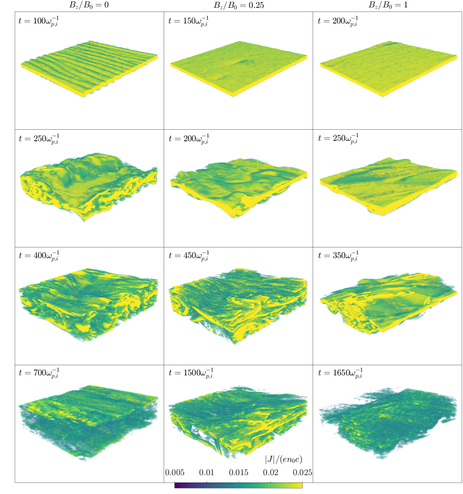
图注：Time evolution of the current sheet for $\sigma_i=1$ three different guide-field strengths $B_z/B_0$.
对应解读：建议重点查看主要数据图；对应论文关于不同 guide-field 强度下电流片形态、撕裂/漂移-kink 活动和磁重联效率变化的核心结果。
入选理由：该图直接展示 σ_i=1 时三种 guide-field 强度下电流片随时间演化，是理解论文主结论的关键：零或弱/强导向场如何改变电流片是否被 drift-kink 扰动展宽、是否保持层流相干结构，以及由此影响 tearing-mediated reconnection 和磁能耗散。相比只给末态能谱的图，它更直接支撑“guide-field 调控多尺度不稳定性”的题名和摘要核心机制。
来源与置信度：\(arxiv_source\)；high；\(arxiv_source\) / main.tex:figure[1]
Fig11
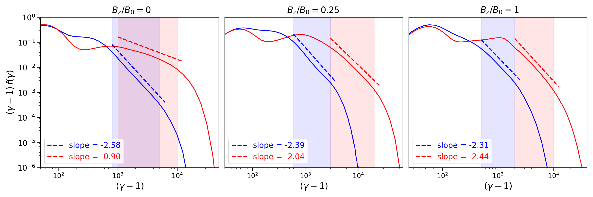
图注：Power-law fits to the nonthermal tails of the final electron energy spectra, $(\gamma-1)f(\gamma)$, for guide-field strengths $B_z/B_0=0$, $0.25$, and $1$. Blue curves correspond to $\sigma_i=1$ and red curves to $\sigma_i=5$; the dashed lines show the fitted slopes over the shaded fitting intervals.
对应解读：建议重点查看非热粒子加速诊断；对应论文中电子能谱非热尾、幂律拟合斜率、不同 σ_i 与 guide-field 强度比较的结果。
入选理由：该图给出最终电子能谱 $(\\gamma-1)f(\\gamma)$ 的非热尾幂律拟合，并用阴影区间和虚线标出拟合范围与斜率，可直接检验摘要中“非热粒子加速随 guide field 与磁化强度呈非单调变化”的结论。它补充 Fig01 的形态学证据，将电流片稳定性变化与可观测的高能粒子分布联系起来。
来源与置信度：\(arxiv_source\)；high；\(arxiv_source\) / main.tex:figure[11]
强相关工作
相关工作可沿三条线检索。第一条是相对论磁重联和非热粒子加速的基础文献，关键词包括 relativistic magnetic reconnection, particle-in-cell, nonthermal particle acceleration, electron-ion plasma, pair plasma, magnetization sigma。这条线能帮助读者理解为什么 $\sigma$ 控制外流速度和粒子最高能量，以及为什么二维 PIC 曾经得到较清晰的幂律加速结论。
第二条是三维电流片不稳定性文献，关键词包括 drift-kink instability, tearing instability, oblique tearing modes, flux ropes, Harris current sheet, guide field reconnection。本文的张力主要来自这里：二维 tearing 常被视为快速耗散通道，但三维 drift-kink 可以 corrugate/broaden 电流片并破坏相干 X 线；导向场既可能稳定 kink，也可能抑制 tearing。因此应重点查找比较 2D/3D、pair/electron-ion、小质量比/真实质量比的研究。
第三条是 guide-field reconnection 的参数扫描工作，尤其是讨论 $B_g/B_0$ 对重联率、能谱硬度、粒子各向异性和能量分配影响的 PIC 论文。检索时不要只找“strong guide field suppresses reconnection”的结论，也要找 weak guide field stabilization、non-monotonic dissipation、kink suppression 相关表述。若不同论文给出相反趋势，通常差异来自磁化、等离子体组分、质量比、盒子长宽比、初始片厚和是否三维。
与天体应用相连时，可查 magnetar flares, pulsar wind nebulae, relativistic jets, black-hole coronae reconnection 等关键词。但要谨慎：本文是理想化 double Harris PIC 模拟，不能直接给出某类天体源的光变或谱指数。更稳妥的用法是把本文结果作为微物理输入：在高磁化电子--离子等离子体中，弱导向场可能通过调节三维稳定性改变耗散率和非热电子注入谱，这会影响辐射模型中的加速效率、谱指数和时间延迟。
相似工作：
（未提供）
基础理论 / 方法工作：
（未提供）
相反观点 / 张力线索：
（未提供）
9. On the origin of anomalous dissipation in simulations of tidal disruption events
- 来源：arXiv / astro-ph.HE
- 链接：https://arxiv.org/abs/2605.20327v1
- 作者：Chris Nixon, Eric R. Coughlin, Zachary L. Andalman
- 评分：novelty 8/10，importance 8/10，relevance 7/10，final 8.65/10
- 推荐理由：指出TDE全局模拟中过早耗散和扇形外流可能是数值算法伪效应，对TDE圆化、吸积和观测解释有直接影响；属于高能暂现源理论/数值方法的重要警示。
中文题目：On the origin of anomalous dissipation in simulations of tidal disruption events
做了什么：本篇论文已通过推荐筛选，但自动详细解读生成失败。可先根据题目和摘要判断阅读优先级：In a tidal disruption event (TDE), a star is destroyed by the tidal field of a supermassive black hole. The stellar debris is initially placed on highly elliptical orbits, and a longstanding question in TDE theory is: How does the stellar debris circularize into a disc and accrete? The originally proposed answer to this question is self-intersection shocks, where relativistic apsidal precession results in a strong collision between the incoming and outgoing material. However, global simulations of TDEs tend to find enhanced hydrodynamical dissipation prior to any intersections of the debris orbits, with the material ``fanning out'' into a wide-angle and partially-unbound outflow upon passing through pericenter. We show that this dissipation is numerical in origin and arises from a combination of 1) the change in the kinematics of the debris as it passes through pericenter, with its velocity profile along the stream transitioning from strongly diverging pre-pericenter to strongly converging post-pericenter, and 2) the dependence of numerical algorithms (viscosity switches for particle-based methods and Riemann solvers for Godunov-based schemes) on the diverging vs. converging nature of the fluid. We support this conclusion with analytical and numerical modeling. We discuss possible resolutions to these issues as well as the implications of our findings in the context of observations.
为什么重要：这篇论文在今日候选中通过了本地推荐阈值，说明它与当前高能天体物理兴趣方向或质量标准较匹配；详细内容建议优先查看原文摘要、结论和图表。
理论 / 观测 / 仪器方法价值：由于 LLM 摘要 JSON 解析失败，本节保留为安全占位，不编造论文未确认的公式、图号或链接。
为什么应该关注：日报仍保留这篇论文，是为了避免单篇摘要失败导致整份日报缺失。请把它作为需要人工快速复核的高优先级候选。
展开详细解读：文章讲解、背景、理论、重点章节、图表与相关工作
文章详细讲解
本文要回答的科学问题可以表述为：全球 TDE 模拟中在碎片流自相交之前出现的强耗散和近心点后扇出，究竟是圆化过程的一部分，还是算法在处理强剪切、强会聚、高马赫数弹道流时产生的伪信号？这一区分很重要，因为如果耗散真实，则 TDE 可在自相交之前就形成热外流和较早辐射；如果耗散是数值的，则许多关于早期圆化、外流和辐射效率的模拟结论需要重新评估。
方法上，作者并不是只指出某一幅模拟图“看起来不对”，而是将问题拆成两个层次。第一层是解析或半解析运动学：沿碎片流参数化相邻流体元的轨道，计算它们在近心点前后的相对速度和速度梯度，说明发散到会聚的转换是自然的轨道几何结果。第二层是数值算法响应：检查粒子法的人工黏性开关或 Godunov 方法的 Riemann 求解器在会聚流中何时把这种可逆压缩当作激波处理，从而产生额外内能。
关键结果应理解为一种“因果链诊断”：近心点前碎片流沿流向强发散，算法较少产生压缩型耗散；过近心点后速度剖面变为强会聚，数值方案中的黏性/通量耗散项被激活；被激活的数值耗散把有序轨道动能转化为热能，热压再推动碎片流横向膨胀，于是形成宽角度扇出和部分看似非束缚的外流。这个链条如果成立，则扇出不是独立证据，而是数值热化的下游后果。
已有摘要和提取图注中特别提到 Fig. 12：该图展示了某个已有模拟中的粒子分布、近心点后扇出，以及若干被作者标记为无物理起源的异常结构，其中一个面板还指出粒子分裂位置上下出现从平滑流到团块流的转变。这类证据的意义在于，它把异常耗散与具体数值处理位置联系起来；如果流体形态在算法操作边界处突变，而非在物理特征尺度处突变，就很难把该结构解释为真实激波或真实不稳定性。
局限性方面，不能仅凭摘要断言所有 TDE 模拟中的近心点耗散都是伪影。真实气体压力、自引力、磁场、辐射冷却、广义相对论进动、多流相交和核燃烧等过程都可能在特定参数区间产生物理耗散。本文更稳妥的结论应读作：在一类常见的全局模拟设置中，过近心点时出现的早期强耗散有充分理由被怀疑为数值起源，必须用分辨率收敛、算法交叉验证和解析运动学基准测试来排除。
下一步可修复方向包括：构造只含弹道运动学、无真实激波的标准测试题；在同一初始条件下比较 SPH、移动网格、静态网格和高阶无黏格式；输出人工黏性耗散率或 Riemann 数值耗散率的空间分布；检查总能量和 Jacobi 常数误差；并将近心点后扇出角、内能增长和非束缚质量分数随分辨率外推到无穷分辨率极限。只有这些诊断同时支持非零耗散，才应将其作为 TDE 圆化物理。
背景知识
潮汐瓦解事件（TDE）的核心图像是：一颗恒星进入超大质量黑洞的潮汐半径以内，恒星自引力无法抵抗黑洞潮汐场，被拉伸成一条能量分布很宽的碎片流。约一半物质获得负轨道能而回落，另一半可能逃逸；回落物质如何从近乎弹道的高偏心率轨道转化为可黏滞吸积的圆盘，是 TDE 理论中最关键、也最容易被数值模拟误判的问题之一。
早期理论中，圆化的常见机制是相对论近心点进动导致的碎片流自相交激波：已过近心点并向外运动的物质，与下一圈回落的向内物质发生高速碰撞，将轨道能转化为热能，从而降低偏心率并形成盘状结构。这个图像在深穿透、黑洞质量较大、近心点足够接近史瓦西半径时尤其直观；但在弱进动或轨道交点很远的情形，自相交激波是否足以快速圆化，一直存在争议。
近年的全局流体模拟常报告另一类现象：碎片流尚未发生清晰自相交之前，在通过近心点附近时就出现显著流体耗散、宽角度“扇出”（fanning out）以及部分非束缚外流。若将这些现象解释为真实物理，则会影响 TDE 早期辐射、外流质量、圆化效率、光变曲线滞后和谱线形成区的判断。因此，区分“真实近心点流体相互作用”与“数值算法引入的伪耗散”并不是技术细节，而是会改变 TDE 物理解读的基础问题。
本文的动机正是重新审查这种近心点前后的异常耗散。摘要给出的结论非常明确：作者认为许多模拟中的增强耗散并非真实天体物理过程，而是由两件事共同造成的数值效应：第一，碎片流沿流线的速度梯度在过近心点时从强发散转为强会聚；第二，粒子法中的人工黏性开关、Godunov 类方法中的 Riemann 求解器/通量构造，都会对“发散流”和“会聚流”作出不同响应，从而在速度场符号改变处产生非物理热化。
阅读时要避免一个常见误区：看到近心点附近内能上升、熵增或粒子分布变宽，并不能自动说明存在物理激波。真实激波应满足可解析的压缩、动量通量和熵跃迁条件，并且应随分辨率、数值黏性参数和求解器选择呈现可控收敛；若所谓耗散随算法开关、粒子分裂位置或网格重构方式强烈变化，则更像数值伪影。本文应被视为一篇“数值物理诊断”论文，而不是单纯提出新的 TDE 圆化机制。
基础理论 / 方法脉络
TDE 碎片流在最初阶段通常可近似看作一族具有小能量差的弹道轨道。恒星被撕裂时，黑洞潮汐场在恒星尺度上施加近似线性的势能差，使碎片获得从负到正的轨道能分布；随后每个流体元主要在黑洞引力场中运动，直到流体压力、自引力、磁场或轨道交叉变得重要。对本文而言，关键不是完整辐射转移，而是碎片流在近心点附近的运动学结构。
沿碎片流方向的速度梯度是本文的核心量之一。若相邻流体元之间距离随时间增大，流是发散的；若距离缩小，流是会聚的。近心点前后，由于轨道几何和开普勒剪切，流线上的速度剖面可从“前端跑得更快、后端更慢”的拉伸状态，转变为“后端追赶前端”的压缩状态。这个转变本身是弹道运动学允许的，并不等价于真实激波；只有当压缩导致多流相交、不可逆熵增，并满足跳跃条件时，才是物理耗散。
数值流体方法对这种运动学转变非常敏感。在 SPH 或其他粒子法中，人工黏性通常被设计为只在粒子相互接近时开启，以捕捉激波并避免粒子穿透；因此一个本来可逆的弹道会聚流，也可能触发黏性开关并产生热能。在 Godunov 型网格法中，单元界面处的 Riemann 问题会根据左右状态构造数值通量；如果重构、斜率限制器或声速/马赫数估计不能正确区分弹道会聚与真实激波，也可能引入过量数值扩散。
本文所关注的观测量或诊断量并非传统意义上的望远镜数据拟合，而是模拟中的守恒量、热化率和形态学指标。例如总能量误差、动能到内能的转换率、熵变量变化、束缚/非束缚质量分数、近心点后的角向张角、以及沿流方向的速度散度或速度梯度。研究生读者应把这些量看作“模型拟合诊断”：它们检验模拟结果是否收敛到某个物理解，而不是检验某个观测光变曲线。
一个重要退化是：真实近心点压缩、数值人工黏性和有限分辨率导致的粒子/网格混合，都可能表现为温度升高和流束变厚。另一个系统误差是轨道参数、穿透因子、黑洞质量和相对论进动强度会同时改变近心点速度、压缩率和自相交位置；若没有控制实验，很容易把参数变化导致的真实动力学差异与算法依赖混为一谈。因此，本文强调解析运动学模型与受控数值实验的组合，是理解其论证链的关键。
公式与推导
可从潮汐半径开始建立问题尺度。恒星质量和半径为 \(M_*\)、\(R_*\)，黑洞质量为 \(M_\bullet\)，潮汐半径近似为
当近心点 \(r_p\lesssim r_t\) 时发生显著剥离或瓦解，常用穿透因子 \(\beta=r_t/r_p\) 表征遭遇深度。这个尺度只给出瓦解条件，不直接说明圆化是否发生。
碎片的轨道能展宽可估计为黑洞势在恒星尺度上的梯度：
若初始恒星轨道近似抛物线，则碎片比能 \(\epsilon\) 分布在 \(-\Delta\epsilon\) 到 \(+\Delta\epsilon\) 附近。负能碎片的半长轴满足
这说明最束缚物质最先回落。
回落时间由开普勒周期给出：
若质量在能量上近似平坦，\(dM/d\epsilon\approx \mathrm{const}\)，则经典回落率标度为
本文讨论的近心点异常耗散发生在这些碎片沿高偏心率轨道回落并通过 \(r_p\) 的过程中。
对单个流体元，在牛顿近似下比能为
其中 \(v^2=v_r^2+v_\perp^2\)。若无压力、无激波、无数值误差，\(\epsilon\) 应沿轨道守恒。因此可用 \(\Delta\epsilon_i(t)=\epsilon_i(t)-\epsilon_i(0)\) 检验模拟是否出现非物理能量改变。
沿碎片流取弧长坐标 \(s\)，定义沿流速度 \(u(s,t)=\mathbf{v}\cdot\hat{\mathbf{s}}\)。一维局部运动学的压缩/拉伸可由
描述；\(\theta_s>0\) 表示相邻流体元分离、流束拉伸，\(\theta_s<0\) 表示相邻流体元接近、流束压缩。本文核心物理图像是 \(\theta_s\) 在过近心点时可由正转负。
真实流体的不可逆耗散应满足熵增。理想气体可写
其中 \(e\) 为单位质量内能，\(A\) 是常用熵变量。无激波、绝热、可逆压缩时 \(A\) 应保持不变；若模拟中 \(A\) 在没有物理激波的位置增长，就应怀疑人工耗散。
粒子法中人工黏性常在粒子对接近时开启，其判据可抽象写为
并在 \(\mathbf{v}_{ij}\cdot\mathbf{r}_{ij}\ge 0\) 时关闭。这里 \(h_{ij}\) 是平滑长度，\(\eta\) 防止奇异。近心点后弹道会聚流天然满足接近判据，因此可能触发并非物理激波的黏性加热。
可将数值热化率诊断为
或在 Godunov 框架中理解为界面数值通量带来的耗散项。无论具体离散形式如何，应该检查体积分后的
是否与 \(\theta_s<0\) 区域、算法开关区域和形态扇出区域空间重合。
最终，若近心点后的横向膨胀由热压驱动，可用粗略标度
估计扇出半角，其中 \(v_p\simeq \sqrt{2GM_\bullet/r_p}\) 是近心点速度量级。若 \(c_s\) 的升高主要来自 \(\dot e_{\rm num}\) 而非物理激波，则 \(\alpha_{\rm fan}\) 也会成为数值伪影的下游表现。
模型拟合 / 应用方法
本文的“拟合”更接近数值模型校准和诊断，而不是对观测数据做参数后验。可拟合或比较的量包括沿流速度剖面 \(u(s,t)\)、速度梯度 \(\partial u/\partial s\)、内能增长 \(E_{\rm int}(t)\)、熵变量 \(A(t)\)、扇出角 \(\alpha_{\rm fan}\)、非束缚质量分数 \(M_{\epsilon>0}/M\)，以及总能量误差。这些量应同时与解析弹道模型、不同数值算法和不同分辨率结果比较。
若构造统计意义上的似然，可把解析或高精度基准解作为“模型均值”，把不同空间位置和时间的模拟残差作为数据。例如对速度场可写高斯残差 \(r_k=u_{\rm sim,k}-u_{\rm ballistic,k}\)，并检查 \(\chi^2=\sum_k r_k^2/\sigma_k^2\) 是否在近心点后系统增大。但更重要的是残差结构而非单个 \(\chi^2\)：如果残差与 \(\nabla\cdot\mathbf{v}<0\)、人工黏性开启区或 Riemann 数值耗散区共定位，则支持本文提出的机制。
后验或参数扫描应覆盖数值参数和物理参数两类。数值参数包括粒子数/网格分辨率、平滑长度、人工黏性系数、黏性开关阈值、Riemann 求解器、斜率限制器、时间步准则和粒子分裂方案；物理参数包括 \(M_\bullet\)、\(M_*\)、\(R_*\)、\(\beta\)、轨道偏心率、相对论进动强度和气体绝热指数。若异常耗散对数值参数比对物理参数更敏感，就不应解释为稳健物理结果。
残差诊断至少应包括四类图：第一，总能量和单粒子比能漂移随时间的曲线；第二，熵变量或内能增长的空间分布；第三，模拟速度场相对弹道解的残差图；第四，目标量随分辨率的收敛曲线。特别要检查近心点前后是否存在不连续的误差增长，因为本文的机制预言误差应在速度梯度由发散转会聚后显著增强。
主要退化包括：真实弱激波与人工黏性耗散都能产生熵增；压力支撑导致的横向膨胀与数值热化导致的扇出在形态上相似；有限分辨率下的粒子噪声可被误认为流体不稳定性；相对论进动造成的真实自相交可能与近心点数值耗散在时间上接近。打破这些退化需要无激波弹道基准、关闭或改变黏性开关的对照、跨代码比较，以及对激波跳跃条件的局地验证。
系统误差还来自边界和重采样操作。已有图注指出粒子分裂点上下可能出现流体形态突变，这提示任何改变粒子质量、分辨率或邻居数的操作都必须被记录并与异常结构位置对照。对于网格法，也应检查 AMR 细化边界、坐标奇点、近心点处的 Courant 时间步变化和高马赫低内能流的能量更新误差。若这些工程细节没有进入误差预算，模拟给出的外流质量和圆化效率可能被系统高估。
重点章节 / 结果段落怎么读
-
引言部分应重点找两条线索：一是传统自相交激波圆化图像如何建立，二是哪些全球模拟报告了自相交前的近心点耗散和扇出。阅读时要标出作者认为既有解释中最可疑的环节，即把模拟内能增长直接当作物理圆化证据。
-
解析运动学或理论模型部分是本文的骨架。应重点阅读作者如何参数化碎片流、如何描述近心点前后速度剖面从发散到会聚的变化、以及这些变化是否在无压力弹道极限下也会发生。若有公式或图示，需确认其假设是牛顿还是相对论、是否忽略自引力/压力、适用到多接近近心点的位置。
-
数值算法讨论部分应细读。对粒子法，要看人工黏性的触发条件、开关变量和粒子分裂/重采样处理；对 Godunov 法，要看 Riemann 求解器、限制器和数值通量如何处理高马赫会聚流。这里的重点不是背诵代码细节，而是建立“哪一项在何处把弹道压缩误判为激波”的因果图。
-
数值实验和结果部分应按照诊断量而非图片顺序阅读：先看速度散度和耗散率空间重合，再看能量/熵是否异常增长，然后看形态扇出和非束缚质量是否作为后果出现，最后看分辨率或算法对照是否支持数值起源。若论文只给形态图而缺少能量和收敛诊断，则结论强度应打折。
-
关于已有模拟再分析的段落，尤其是涉及 Fig. 12 的部分，要关注作者如何识别“无物理起源”的异常特征。判断标准应包括：是否与粒子分裂点、细化边界或数值开关位置相关；是否缺乏对应的冲击条件或轨道交叉；是否随数值设置改变。不要把图中所有团块都简单视为真实流体不稳定性。
-
讨论和结论部分应提取两类信息：一类是对 TDE 观测解释的影响，例如早期辐射、外流、圆化效率可能被高估；另一类是作者建议的修复方案，例如更严格的基准测试、更低耗散算法、显式输出数值耗散项、以及跨代码比较。阅读时应区分作者已经证明的结论与建议未来核查的内容。
建议重点查看的图表
-
碎片流空间形态图：重点看近心点前后流束宽度、扇出角、是否存在团块或分叉，以及这些结构是否与算法边界（粒子分裂位置、网格细化边界、注入边界）重合。已知 Fig. 12 属于这一类，应特别检查彩色框标出的异常结构是否具有物理尺度解释。
-
沿流方向速度剖面图：横轴通常应是流线参数、轨道相位、真近点角或沿流弧长，纵轴是径向/切向速度或相邻流体元相对速度。要看速度梯度在近心点前后如何从发散变为会聚，以及会聚区是否正好对应耗散增强区。
-
散度、压缩率和人工黏性开关图：检查 \(\nabla\cdot\mathbf{v}\)、粒子对 \(\mathbf{v}_{ij}\cdot\mathbf{r}_{ij}\)、黏性参数或 Riemann 数值耗散项的空间分布。真正有说服力的图应显示耗散项不是均匀噪声，而是在会聚流区域系统性开启。
-
能量预算图：应包含动能、势能、内能、总能量误差，以及可能的束缚/非束缚能量分布。关键是区分物理能量转换与总能量非守恒；若内能增长伴随总能量漂移或随算法参数强变，就支持数值起源。
-
分辨率收敛图：看扇出角、内能增长率、熵增、非束缚质量分数是否随粒子数/网格数单调下降或收敛。若所谓物理结论随分辨率没有稳定极限，不能作为可靠圆化证据。
-
算法对照图：同一弹道测试或同一 TDE 初始条件下，比较不同人工黏性开关、不同 Riemann 求解器、不同限制器、不同重构阶数的结果。要关注差异是否集中在近心点后会聚区，而不是全域随机变化。
-
残差或基准测试图：若论文有解析运动学曲线，应看模拟速度、密度、能量相对于解析解的残差。理想诊断是把误差投影到沿流方向和横向方向，确认横向膨胀是否由数值热压驱动。
关键图表逐图导读
图 1（或论文中最早的运动学示意/解析模型图）应按“轨道相位—速度梯度”的逻辑阅读。横轴可能是真近点角、时间或沿流坐标，纵轴可能是沿流速度、相邻流体元速度差或 \(\partial u/\partial s\)。重点不是某个点的速度绝对值，而是近心点前后斜率符号是否从发散转为会聚；如果图中叠加解析曲线和数值点，应检查二者在近心点附近的偏离是否正是后续耗散的触发位置。陷阱是把负散度直接称为激波，实际上负散度只是压缩的必要条件，不是不可逆耗散的充分条件。
图 2（或算法/测试问题对照图）应看数值耗散如何随方法改变。坐标轴可能是时间、轨道相位、分辨率或人工黏性参数，纵轴可能是内能增长、熵变量、总能量误差或扇出角。若不同算法在近心点前一致、近心点后分叉，说明问题与会聚流处理密切相关；若耗散随分辨率提高显著下降，也支持数值起源。残差读法是：不仅要看主曲线，还要看模拟减解析解的偏差是否集中在会聚区，以及是否出现单调收敛。
图 3（对应已提取的 Fig. 12 或类似粒子分布图）应从形态和算法边界两方面读。左面板显示碎片流主体以及离开近心点后的扇出；右侧放大框显示局部异常结构。图注指出面板 (1) 中红线标记了粒子分裂点，红线两侧从较平滑流到团块流的转变很明显；面板 (2)–(4) 还含有作者认为无物理起源的额外特征。这里的关键坐标不只是空间位置，而是这些结构与数值处理位置的相对关系：若形态突变贴着分裂点或其他算法特征出现，就应优先解释为数值伪影。
图 4（若有能量预算或束缚质量分布图）应检查内能上升是否伴随总能量守恒。横轴通常为时间或轨道相位，纵轴可为 \(E_{\rm kin}\)、\(E_{\rm int}\)、\(E_{\rm grav}\)、总能量误差或非束缚质量。读图时要分清“动能转内能但总能守恒”与“总能漂移导致假非束缚”两种情况；还要看非束缚尾部是否只在近心点后突然出现，且是否随数值参数改变。
图 5（若有分辨率/求解器收敛图）是判断结论强度的核心。横轴应是粒子数、网格尺度、重构阶数或黏性开关，纵轴是异常耗散量、扇出角或熵增。真正的物理耗散在充分解析激波后应趋于稳定；纯数值耗散通常随分辨率和算法选择变化明显。陷阱是只展示一个高分辨率漂亮快照而没有定量收敛曲线，这不足以证明近心点耗散真实。
论文原图 / 可嵌入图片
Fig12

图注：Particle distribution plots of the debris stream from the simulation presented in \protect\cite{Hu:2026}. The left panel shows the main structure of the stream; there is a noticeable fanning of the stream exiting pericentre. There are, however, additional anomalous features present that are highlighted by the four coloured boxes, which correspond to the zoom-in panels on the right. The zoom-ins have coloured borders that match the coloured squares in the left hand panel (also marked by the numbers). Panel (1) contains a red line that marks the location of the first splitting point -- particles at radii larger than this line do not experience splitting -- in the simulation presented by \protect\cite, and a transition from approximately smooth flow above to clumpy flow below this line can easily be seen. Panels (2)-(4) contains additional features that have no physical origin.
对应解读：对应日报中“建议重点查看的图表”关于主要模拟结果、系统误差和数值伪影诊断的部分。
入选理由：该图直接展示潮汐瓦解事件碎片流在近心点后的扇出结构，以及多个被作者标注为无物理起源的异常特征；其中分裂点上下的流体形态变化和额外伪结构，正好支撑论文核心论点：部分全局TDE模拟中的异常耗散和出流可能来自数值算法而非真实物理过程。候选图中只有这一张真实存在且与数值耗散、粒子分布、系统误差诊断直接相关，因此最值得嵌入。
来源与置信度：\(arxiv_source\)；high；\(arxiv_source\) / \(ApJ_Template.tex\):figure[12]
强相关工作
相关文献可沿三条路径检索。第一条是经典 TDE 基础理论：潮汐半径、能量冻结、\(t^{-5/3}\) 回落率、最束缚物质回落时间以及相对论进动导致的自相交激波。这类工作构成判断“什么时候应该有真实圆化”的理论基线，检索关键词可包括 tidal disruption event fallback、stream self-intersection、apsidal precession、circularization shock。
第二条是全球 TDE 流体模拟文献，尤其是报告近心点后扇出、早期耗散、宽角外流或快速圆化的 SPH、移动网格和 Godunov 网格模拟。阅读这些工作时应反向检查它们是否展示了分辨率收敛、人工黏性/求解器敏感性、总能量误差和熵增空间分布。本文与这些工作的张力点不是“TDE 是否能圆化”，而是“某些模拟中圆化前耗散的来源是否可信”。
第三条是数值流体方法本身：SPH 人工黏性开关、Balsara 类剪切修正、现代压力熵 SPH、Godunov Riemann 求解器、HLL/HLLC/精确求解器、高马赫流能量守恒误差、AMR 边界伪影等。检索这些基础方法文献有助于理解为什么会聚流会被算法当作激波处理，以及哪些测试题能区分可逆压缩和不可逆冲击。
建议特别关注与本文结论相反或存在潜在张力的论文：那些声称近心点耗散可驱动观测早期光度、产生强外流或显著改变回落率的模拟研究。比较时不要只看最终图像是否相似，而要比较初始条件、轨道参数、相对论处理、分辨率、黏性模型和能量守恒诊断。若某些研究在不同代码和不同数值耗散控制下仍得到相同近心点耗散，才可能构成对本文数值伪影解释的有力反例。
相似工作：
（未提供）
基础理论 / 方法工作：
（未提供）
相反观点 / 张力线索：
（未提供）
说明
评分由 LLM 给出初评，再由本地阈值策略过滤；IACT、TeV 伽马射线和高能中微子天文学按重点方向处理。